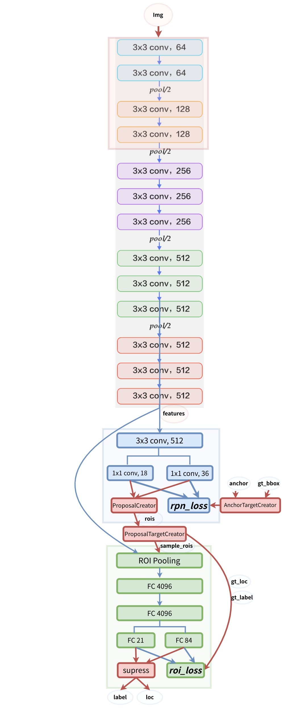

<!DOCTYPE html>
<html>
<head><meta name="generator" content="Hexo 3.8.0">
  <meta charset="utf-8">
  
  <meta name="renderer" content="webkit">
  <meta http-equiv="X-UA-Compatible" content="IE=edge">
  <link rel="dns-prefetch" href="http://yoursite.com">
  <title>Faster RCNN论文笔记 | Tshangs</title>
  <meta name="viewport" content="width=device-width, initial-scale=1, maximum-scale=1">
  <meta name="description" content="&amp;ensp;&amp;ensp;&amp;ensp;&amp;ensp;在Fast RCNN中，rgb大神已经将RCNN中提取特征、训练分类器和训练位置回归合并为一个网络，极大的节省了时间和空间开销，现在Fast RCNN中面临的另一个瓶颈就是建议框的生成，在Fast RCNN中依然使用的是selective search的方法，这种方法耗费大量的时间，所以在Faster RCNN中，作者继续发力提出了RPN来代替sel">
<meta name="keywords" content="深度学习,目标检测,Faster  RCNN">
<meta property="og:type" content="article">
<meta property="og:title" content="Faster RCNN论文笔记">
<meta property="og:url" content="http://yoursite.com/2019/06/16/faster_rcnn/index.html">
<meta property="og:site_name" content="Tshangs">
<meta property="og:description" content="&amp;ensp;&amp;ensp;&amp;ensp;&amp;ensp;在Fast RCNN中，rgb大神已经将RCNN中提取特征、训练分类器和训练位置回归合并为一个网络，极大的节省了时间和空间开销，现在Fast RCNN中面临的另一个瓶颈就是建议框的生成，在Fast RCNN中依然使用的是selective search的方法，这种方法耗费大量的时间，所以在Faster RCNN中，作者继续发力提出了RPN来代替sel">
<meta property="og:locale" content="default">
<meta property="og:image" content="http://yoursite.com/2019/06/16/faster_rcnn/images/faster_rcnn_network.jpg">
<meta property="og:image" content="http://yoursite.com/2019/06/16/faster_rcnn/images/faster_rcnn_image_pre_pro.png">
<meta property="og:image" content="http://yoursite.com/2019/06/16/faster_rcnn/images/faster_rcnn_extrator.png">
<meta property="og:image" content="http://yoursite.com/2019/06/16/faster_rcnn/images/faster_rcnn_anchor.png">
<meta property="og:image" content="http://yoursite.com/2019/06/16/faster_rcnn/images/faster_rcnn_anchor_flow1.png">
<meta property="og:image" content="http://yoursite.com/2019/06/16/faster_rcnn/images/faster_rcnn_rpn_network.png">
<meta property="og:image" content="http://yoursite.com/2019/06/16/faster_rcnn/images/faster_rcnn_anchor_base_1.png">
<meta property="og:image" content="http://yoursite.com/2019/06/16/faster_rcnn/images/faster_rcnn_anchor_shift_10.png">
<meta property="og:image" content="http://yoursite.com/2019/06/16/faster_rcnn/images/faster_rcnn_anchor_shift_all.png">
<meta property="og:image" content="http://yoursite.com/2019/06/16/faster_rcnn/images/faster_rcnn_proposal_layer.png">
<meta property="og:image" content="http://yoursite.com/2019/06/16/faster_rcnn/images/faster_rcnn_roi+pooling.png">
<meta property="og:updated_time" content="2019-06-16T14:12:36.025Z">
<meta name="twitter:card" content="summary">
<meta name="twitter:title" content="Faster RCNN论文笔记">
<meta name="twitter:description" content="&amp;ensp;&amp;ensp;&amp;ensp;&amp;ensp;在Fast RCNN中，rgb大神已经将RCNN中提取特征、训练分类器和训练位置回归合并为一个网络，极大的节省了时间和空间开销，现在Fast RCNN中面临的另一个瓶颈就是建议框的生成，在Fast RCNN中依然使用的是selective search的方法，这种方法耗费大量的时间，所以在Faster RCNN中，作者继续发力提出了RPN来代替sel">
<meta name="twitter:image" content="http://yoursite.com/2019/06/16/faster_rcnn/images/faster_rcnn_network.jpg">
  
    <link rel="alternative" href="/atom.xml" title="Tshangs" type="application/atom+xml">
  
  
    <link rel="icon" href="/favicon.png">
  
  <link rel="stylesheet" type="text/css" href="/./main.0cf68a.css">
  <style type="text/css">
  
    #container.show {
      background: linear-gradient(200deg,#a0cfe4,#e8c37e);
    }
  </style>
  

  

</head>
</html>
<body>
  <div id="container" q-class="show:isCtnShow">
    <canvas id="anm-canvas" class="anm-canvas"></canvas>
    <div class="left-col" q-class="show:isShow">
      
<div class="overlay" style="background: #4d4d4d"></div>
<div class="intrude-less">
	<header id="header" class="inner">
		<a href="/" class="profilepic">
			
		</a>
		<hgroup>
		  <h1 class="header-author"><a href="/">Tshangs</a></h1>
		</hgroup>
		

		<nav class="header-menu">
			<ul>
			
				<li><a href="/">主页</a></li>
	        
				<li><a href="/tags/随笔/">随笔</a></li>
	        
			</ul>
		</nav>
		<nav class="header-smart-menu">
    		
    			
    			<a q-on="click: openSlider(e, 'innerArchive')" href="javascript:void(0)">所有文章</a>
    			
            
    			
    			<a q-on="click: openSlider(e, 'friends')" href="javascript:void(0)">友链</a>
    			
            
    			
    			<a q-on="click: openSlider(e, 'aboutme')" href="javascript:void(0)">关于我</a>
    			
            
		</nav>
		<nav class="header-nav">
			<div class="social">
				
					<a class="github" target="_blank" href="#" title="github"><i class="icon-github"></i></a>
		        
					<a class="weibo" target="_blank" href="#" title="weibo"><i class="icon-weibo"></i></a>
		        
					<a class="rss" target="_blank" href="#" title="rss"><i class="icon-rss"></i></a>
		        
					<a class="zhihu" target="_blank" href="#" title="zhihu"><i class="icon-zhihu"></i></a>
		        
			</div>
		</nav>
	</header>		
</div>

    </div>
    <div class="mid-col" q-class="show:isShow,hide:isShow|isFalse">
      
<nav id="mobile-nav">
  	<div class="overlay js-overlay" style="background: #4d4d4d"></div>
	<div class="btnctn js-mobile-btnctn">
  		<div class="slider-trigger list" q-on="click: openSlider(e)"><i class="icon icon-sort"></i></div>
	</div>
	<div class="intrude-less">
		<header id="header" class="inner">
			<div class="profilepic">
				
			</div>
			<hgroup>
			  <h1 class="header-author js-header-author">Tshangs</h1>
			</hgroup>
			
			
			
				
			
				
			
			
			
			<nav class="header-nav">
				<div class="social">
					
						<a class="github" target="_blank" href="#" title="github"><i class="icon-github"></i></a>
			        
						<a class="weibo" target="_blank" href="#" title="weibo"><i class="icon-weibo"></i></a>
			        
						<a class="rss" target="_blank" href="#" title="rss"><i class="icon-rss"></i></a>
			        
						<a class="zhihu" target="_blank" href="#" title="zhihu"><i class="icon-zhihu"></i></a>
			        
				</div>
			</nav>

			<nav class="header-menu js-header-menu">
				<ul style="width: 50%">
				
				
					<li style="width: 50%"><a href="/">主页</a></li>
		        
					<li style="width: 50%"><a href="/tags/随笔/">随笔</a></li>
		        
				</ul>
			</nav>
		</header>				
	</div>
	<div class="mobile-mask" style="display:none" q-show="isShow"></div>
</nav>

      <div id="wrapper" class="body-wrap">
        <div class="menu-l">
          <div class="canvas-wrap">
            <canvas data-colors="#eaeaea" data-sectionHeight="100" data-contentId="js-content" id="myCanvas1" class="anm-canvas"></canvas>
          </div>
          <div id="js-content" class="content-ll">
            <article id="post-faster_rcnn" class="article article-type-post " itemscope itemprop="blogPost">
  <div class="article-inner">
    
      <header class="article-header">
        
  
    <h1 class="article-title" itemprop="name">
      Faster RCNN论文笔记
    </h1>
  


  <a href="javascript:;" class="archive-article-date">
      <i class="icon-smile icon"></i> 阅读数:<span id="/2019/06/16/faster_rcnn/" class="pageViews">0</span>次
  </a>

        
        <a href="/2019/06/16/faster_rcnn/" class="archive-article-date">
  	<time datetime="2019-06-16T03:41:38.229Z" itemprop="datePublished"><i class="icon-calendar icon"></i>2019-06-16</time>
</a>
        
      </header>
    
    <div class="article-entry" itemprop="articleBody">
      
        <p>&ensp;&ensp;&ensp;&ensp;在<strong>Fast RCNN</strong>中，rgb大神已经将<strong>RCNN</strong>中提取特征、训练分类器和训练位置回归合并为一个网络，极大的节省了时间和空间开销，现在<strong>Fast RCNN</strong>中面临的另一个瓶颈就是建议框的生成，在<strong>Fast RCNN</strong>中依然使用的是<strong>selective search</strong>的方法，这种方法耗费大量的时间，所以在<strong>Faster RCNN</strong>中，作者继续发力提出了<strong>RPN</strong>来代替<strong>selective search</strong>方法，几乎将这一部分花费的时间降为了0秒（2s -&gt; 0.01s）。<br><a id="more"></a><br>在网上已经有很多大神对不同版本实现的<strong>Faster RCNN</strong>进行了解读，但是有些细节还是百思不得其解，本想从源码角度来捋一捋，奈何水平有限，caffe版本的源码都不知从何看起。原作者的caffe版本源码见<a href="https://github.com/rbgirshick/py-faster-rcnn" target="_blank" rel="noopener"><strong>py-faster-rcnn</strong></a>，对于该版本较好的讲解见<a href="https://zhuanlan.zhihu.com/p/31426458" target="_blank" rel="noopener">一文读懂Faster RCNN</a>。Tensorflow版本的源码见<a href="https://github.com/endernewton/tf-faster-rcnn" target="_blank" rel="noopener"><strong>tf-faster-rcnn</strong></a>。pytorch版本的源码见<a href="https://github.com/ruotianluo/pytorch-faster-rcnn" target="_blank" rel="noopener"><strong>ruotianluo/pytorch-faster-rcnn</strong></a>，对于该版本的讲解见<a href="http://www.telesens.co/2018/03/11/object-detection-and-classification-using-r-cnns/" target="_blank" rel="noopener">Object Detection and Classification using R-CNNs</a>。对于此博客参考的是陈云实现的简易版的pytorch实现<a href="https://github.com/chenyuntc/simple-faster-rcnn-pytorch" target="_blank" rel="noopener"><strong>simple-faster-rcnn-pytorch</strong></a>，陈云自己的讲解见<a href="https://zhuanlan.zhihu.com/p/32404424" target="_blank" rel="noopener">从编程实现角度学习Faster R-CNN（附极简实现）</a>。这篇博客大部分内容也是参考的前面几个讲解，在此对这几位的工作表示膜拜。虽然是简易版但其效果也不错，而且更适合来理解网络的脉络。从编程角度来说， Faster R-CNN主要分为四部分：<br>&ensp;&ensp;&ensp;&ensp;1）Dataset：数据，提供符合要求的数据格式（目前常用数据集是VOC和COCO）。<br>&ensp;&ensp;&ensp;&ensp;2）Extractor： 利用CNN提取图片特征features（原始论文用的是ZF和VGG16，后来人们又用ResNet101）。<br>&ensp;&ensp;&ensp;&ensp;3）RPN(Region Proposal Network): 负责提供候选区域rois（每张图给出大概2000个候选框）。<br>&ensp;&ensp;&ensp;&ensp;4）RoIHead： 负责对rois分类和微调。对RPN找出的rois，判断它是否包含目标，并修正框的位置和座标。<br>Faster R-CNN整体的流程可以分为三步：<br>&ensp;&ensp;&ensp;&ensp;1）提特征： 图片（img）经过预训练的网络（Extractor），提取到了图片的特征（feature）。<br>&ensp;&ensp;&ensp;&ensp;2）Region Proposal： 利用提取的特征（feature），经过RPN网络，找出一定数量的rois（region of interests）。<br>&ensp;&ensp;&ensp;&ensp;3）分类与回归：将rois和图像特征features，输入到RoIHead，对这些rois进行分类，判断都属于什么类别，同时对这些rois的位置进行微调。<br>在论文中作者给出了<strong>Faster RCNN</strong>三种训练方式：<br>&ensp;&ensp;&ensp;&ensp;1）交替训练。首先训练RPN，使用proposals训练Fast R-CNN。网络使用Fast R-CNN微调，然后用来初始化RPN,迭代这个过程。<br>&ensp;&ensp;&ensp;&ensp;2）近似联合训练。在每次SGD迭代时，前馈计算生成区域推荐，看作训练Fast R-CNN检测器的预计算推荐。反馈传播中共享层传播RPN和Fast R-CNN结合的损失。这种方式忽略了关于推荐框坐标的导数。<br>&ensp;&ensp;&ensp;&ensp;3）非近似联合训练。Fast R-CNN中的 RoI pooling层接收卷积特征和预测的bounding boxes作为输入，这时反向传播会涉及到box corrdinates.这时需要RoI poling层关于box coordinates是可微的。<br>作者的论文中实现的是4步交替训练，第一步，训练RPN，用预训练的ImageNet模型初始化，端到端微调区域推荐任务。第二步，通过Fast R-CNN训练一个单独的检测网络，从第一步的模型中产生推荐框。这个网络也用ImageNet模型初始化。这时候两个网络不共享卷积层。第三步，使用检测网络初始化RPN训练，固定了共享卷积层，只微调独属于RPN的层。现在两个网络共享卷积层。第四步，使卷积层固定，微调独属于Fast R-CNN的层。这样，两个网络共享了卷基层，形成了一个统一网络。陈云的pytorch实现是采用的近似联合训练，其网络模型如下：</p>
<div align="center"></div>

<p>需要注意的是： 蓝色箭头的线代表着计算图，梯度反向传播会经过。而红色部分的线不需要进行反向传播（论文了中提到了ProposalCreator生成RoIs的过程也能进行反向传播，但需要专门的算法）</p>
<h5 id="详细实现"><a href="#详细实现" class="headerlink" title="详细实现"></a>详细实现</h5><p>&ensp;&ensp;&ensp;&ensp;接下来从大佬的代码一步一步来捋一遍<strong>Faster RCNN</strong>的<strong>详细实现</strong>。</p>
<h6 id="数据部分"><a href="#数据部分" class="headerlink" title="数据部分"></a>数据部分</h6><div align="center"></div><br>对与每张图片，需要进行如下数据处理：<br>&ensp;&ensp;&ensp;&ensp;1）图片进行缩放，使得长边小于等于1000，短边小于等于600（至少有一个等于）。<br>&ensp;&ensp;&ensp;&ensp;2）对相应的bounding boxes 也也进行同等尺度的缩放。<br>&ensp;&ensp;&ensp;&ensp;3）对于Caffe 的VGG16 预训练模型，需要图片位于0-255，BGR格式，并减去一个均值，使得图片像素的均值为0。<br><br>最后返回四个值供模型训练：<br>&ensp;&ensp;&ensp;&ensp;1）images ： 3×H×W ，BGR三通道，宽W，高H<br>&ensp;&ensp;&ensp;&ensp;2）bboxes： 4×K , K个bounding boxes，每个bounding box的左上角和右下角的座标，形如（Y_min,X_min, Y_max,X_max）,第Y行，第X列。（<strong>注意bboxes的坐标形式</strong>）<br>&ensp;&ensp;&ensp;&ensp;3）labels：K， 对应K个bounding boxes的label（对于VOC取值范围为[0-19]）<br>&ensp;&ensp;&ensp;&ensp;4）scale: 缩放的倍数, 原图H’ ×W’被resize到了HxW（scale=H/H’ ）<br>从作者github的readme里给出的<strong>begin training</strong>中可以看出其入口程序为train.py，并且需要传入三个参数<br><figure class="highlight javascript"><table><tr><td class="gutter"><pre><span class="line">1</span><br></pre></td><td class="code"><pre><span class="line">python train.py train --env=<span class="string">'fasterrcnn-caffe'</span> --plot-every=<span class="number">100</span> --caffe-pretrain</span><br></pre></td></tr></table></figure><br><br>&ensp;&ensp;&ensp;&ensp;在train.py文件中的载入数据主要代码为：<br><figure class="highlight javascript"><table><tr><td class="gutter"><pre><span class="line">1</span><br><span class="line">2</span><br><span class="line">3</span><br><span class="line">4</span><br><span class="line">5</span><br><span class="line">6</span><br><span class="line">7</span><br><span class="line">8</span><br><span class="line">9</span><br><span class="line">10</span><br><span class="line">11</span><br><span class="line">12</span><br><span class="line">13</span><br><span class="line">14</span><br><span class="line">15</span><br><span class="line">16</span><br><span class="line">17</span><br></pre></td><td class="code"><pre><span class="line">   #解析输入参数，为config类的对象，config类位于config.py中，其定义了网络的配置参数，env代表可视化环境，plot-every代表每多少次迭代可视化一次，caffe-pretrain代表迁移学习的模型</span><br><span class="line">   opt._parse(kwargs)</span><br><span class="line">#解析voc数据，并对其做预处理</span><br><span class="line">   dataset = Dataset(opt)</span><br><span class="line">   print(<span class="string">'load data'</span>)</span><br><span class="line">   dataloader = data_.DataLoader(dataset, \</span><br><span class="line">                                 batch_size=<span class="number">1</span>, \</span><br><span class="line">                                 shuffle=True, \</span><br><span class="line">                                 # pin_memory=True,</span><br><span class="line">                                 num_workers=opt.num_workers)</span><br><span class="line">   testset = TestDataset(opt)</span><br><span class="line">   test_dataloader = data_.DataLoader(testset,</span><br><span class="line">                                      batch_size=<span class="number">1</span>,</span><br><span class="line">                                      num_workers=opt.test_num_workers,</span><br><span class="line">                                      shuffle=False, \</span><br><span class="line">                                      pin_memory=True</span><br><span class="line">                                      )</span><br></pre></td></tr></table></figure><br><br>&ensp;&ensp;&ensp;&ensp;对数据的处理首先通过\data\voc_dataset.py中的get_example函数将voc的每一个xml文件解析为(img, bbox, label, difficult)类型的输出，但是difficult数据并没有使用，随后将这样的每一个数据对进行预处理，其预处理函数为\data\dataset.py中的Transfrom类：<br><figure class="highlight javascript"><table><tr><td class="gutter"><pre><span class="line">1</span><br><span class="line">2</span><br><span class="line">3</span><br><span class="line">4</span><br><span class="line">5</span><br><span class="line">6</span><br><span class="line">7</span><br><span class="line">8</span><br><span class="line">9</span><br><span class="line">10</span><br><span class="line">11</span><br><span class="line">12</span><br><span class="line">13</span><br><span class="line">14</span><br><span class="line">15</span><br><span class="line">16</span><br><span class="line">17</span><br><span class="line">18</span><br></pre></td><td class="code"><pre><span class="line">class Transform(object):</span><br><span class="line">    def __init__(self, min_size=<span class="number">600</span>, max_size=<span class="number">1000</span>):</span><br><span class="line">        self.min_size = min_size</span><br><span class="line">        self.max_size = max_size</span><br><span class="line"></span><br><span class="line">    def __call__(self, in_data):</span><br><span class="line">        img, bbox, label = in_data</span><br><span class="line">        _, H, W = img.shape#获取图片的长和宽</span><br><span class="line">        img = preprocess(img, self.min_size, self.max_size)#对图片进行缩放</span><br><span class="line">        _, o_H, o_W = img.shape</span><br><span class="line">        scale = o_H / H</span><br><span class="line">        bbox = util.resize_bbox(bbox, (H, W), (o_H, o_W))#对ground_truth进行缩放</span><br><span class="line">        # horizontally flip进行数据增广</span><br><span class="line">        img, params = util.random_flip(</span><br><span class="line">            img, x_random=True, return_param=True)</span><br><span class="line">        bbox = util.flip_bbox(</span><br><span class="line">            bbox, (o_H, o_W), x_flip=params[<span class="string">'x_flip'</span>])</span><br><span class="line">        <span class="keyword">return</span> img, bbox, label, scale</span><br></pre></td></tr></table></figure><br><br>其中对图片预处理的preprocess的主要代码为：<br><figure class="highlight javascript"><table><tr><td class="gutter"><pre><span class="line">1</span><br><span class="line">2</span><br><span class="line">3</span><br><span class="line">4</span><br><span class="line">5</span><br><span class="line">6</span><br><span class="line">7</span><br><span class="line">8</span><br><span class="line">9</span><br><span class="line">10</span><br><span class="line">11</span><br><span class="line">12</span><br><span class="line">13</span><br><span class="line">14</span><br></pre></td><td class="code"><pre><span class="line">    def preprocess(img, min_size=<span class="number">600</span>, max_size=<span class="number">1000</span>):</span><br><span class="line">         C, H, W = img.shape</span><br><span class="line">         scale1 = min_size / min(H, W)</span><br><span class="line">scale2 = max_size / max(H, W)</span><br><span class="line">scale = min(scale1, scale2)#获取需要缩放的比例</span><br><span class="line">img = img / 255.#因为在pytorch_normalze中的使用的是归一化的数据</span><br><span class="line">img = sktsf.resize(img, (C, H * scale, W * scale), mode='reflect',anti_aliasing=False)#使用skimage包对图片进行resize</span><br><span class="line"># both the longer and shorter should be less than</span><br><span class="line"># max_size and min_size</span><br><span class="line"><span class="keyword">if</span> opt.caffe_pretrain:</span><br><span class="line">	normalize = caffe_normalize#对数据进行通道转换，减均值，这一步是不是应该放在resize之前？</span><br><span class="line"><span class="keyword">else</span>:</span><br><span class="line">	normalize = pytorch_normalze</span><br><span class="line"><span class="keyword">return</span> normalize(img)</span><br></pre></td></tr></table></figure><br><br>其caffe_normalize的代码如下：<br><figure class="highlight javascript"><table><tr><td class="gutter"><pre><span class="line">1</span><br><span class="line">2</span><br><span class="line">3</span><br><span class="line">4</span><br><span class="line">5</span><br><span class="line">6</span><br><span class="line">7</span><br><span class="line">8</span><br><span class="line">9</span><br></pre></td><td class="code"><pre><span class="line">def caffe_normalize(img):</span><br><span class="line">	<span class="string">""</span><span class="string">"</span></span><br><span class="line"><span class="string">	return appr -125-125 BGR</span></span><br><span class="line"><span class="string">	"</span><span class="string">""</span></span><br><span class="line">	img = img[[2, 1, 0], :, :]  # RGB-BGR</span><br><span class="line">	img = img * <span class="number">255</span></span><br><span class="line">	mean = np.array([<span class="number">122.7717</span>, <span class="number">115.9465</span>, <span class="number">102.9801</span>]).reshape(<span class="number">3</span>, <span class="number">1</span>, <span class="number">1</span>)</span><br><span class="line">	img = (img - mean).astype(np.float32, copy=True)</span><br><span class="line">	<span class="keyword">return</span> img</span><br></pre></td></tr></table></figure><br><br>&ensp;&ensp;&ensp;&ensp;以上就是对数据的处理过程,在得到数据之后便可以进行到训练阶段了。<br><br>###### Extractor<br><br>&ensp;&ensp;&ensp;&ensp;Extractor使用的是预训练好的模型提取图片的特征。论文中主要使用的是Caffe的预训练模型VGG16。修改如下图所示：为了节省显存，前四层卷积层的学习率设为0。Conv5_3的输出作为图片特征（feature）。conv5_3相比于输入，下采样了16倍，也就是说输入的图片尺寸为3×H×W，那么feature的尺寸就是C×(H/16)×(W/16)。VGG最后的三层全连接层的前两层，一般用来初始化RoIHead的部分参数，这个稍后再讲。总之，一张图片，经过extractor之后，会得到一个C×(H/16)×(W/16)的feature map。<br><div align="center"></div><br>&ensp;&ensp;&ensp;&ensp;对于网络结构的划分在\model\faster_rcnn_vgg16.py中的FasterRCNNVGG16类中，其定义为：<br><figure class="highlight javascript"><table><tr><td class="gutter"><pre><span class="line">1</span><br><span class="line">2</span><br><span class="line">3</span><br><span class="line">4</span><br><span class="line">5</span><br><span class="line">6</span><br><span class="line">7</span><br><span class="line">8</span><br><span class="line">9</span><br><span class="line">10</span><br><span class="line">11</span><br><span class="line">12</span><br><span class="line">13</span><br><span class="line">14</span><br><span class="line">15</span><br><span class="line">16</span><br><span class="line">17</span><br><span class="line">18</span><br><span class="line">19</span><br><span class="line">20</span><br><span class="line">21</span><br><span class="line">22</span><br><span class="line">23</span><br><span class="line">24</span><br><span class="line">25</span><br><span class="line">26</span><br><span class="line">27</span><br><span class="line">28</span><br><span class="line">29</span><br><span class="line">30</span><br><span class="line">31</span><br></pre></td><td class="code"><pre><span class="line">class FasterRCNNVGG16(FasterRCNN):</span><br><span class="line"></span><br><span class="line">    feat_stride = 16  # downsample 16x for output of conv5 in vgg16</span><br><span class="line"></span><br><span class="line">    def __init__(self,</span><br><span class="line">                 n_fg_class=<span class="number">20</span>,</span><br><span class="line">                 ratios=[<span class="number">0.5</span>, <span class="number">1</span>, <span class="number">2</span>],</span><br><span class="line">                 anchor_scales=[<span class="number">8</span>, <span class="number">16</span>, <span class="number">32</span>]</span><br><span class="line">                 ):</span><br><span class="line">                 </span><br><span class="line">        extractor, classifier = decom_vgg16()#将vgg16模型分为特征提取器和分类器两部分</span><br><span class="line"></span><br><span class="line">        rpn = RegionProposalNetwork(</span><br><span class="line">            <span class="number">512</span>, <span class="number">512</span>,</span><br><span class="line">            ratios=ratios,</span><br><span class="line">            anchor_scales=anchor_scales,</span><br><span class="line">            feat_stride=self.feat_stride,</span><br><span class="line">        )#定义RPN</span><br><span class="line"></span><br><span class="line">        head = VGG16RoIHead(</span><br><span class="line">            n_class=n_fg_class + <span class="number">1</span>,</span><br><span class="line">            roi_size=<span class="number">7</span>,</span><br><span class="line">            spatial_scale=(<span class="number">1.</span> / self.feat_stride),</span><br><span class="line">            classifier=classifier</span><br><span class="line">        )#用vgg_16的分类部分作为最后的经过RPN之后的网络的头部</span><br><span class="line"></span><br><span class="line">        <span class="keyword">super</span>(FasterRCNNVGG16, self).__init__(</span><br><span class="line">            extractor,</span><br><span class="line">            rpn,</span><br><span class="line">            head,</span><br><span class="line">        )</span><br></pre></td></tr></table></figure><br><br>&ensp;&ensp;&ensp;&ensp;从上述代码可以看出将vgg16模型通过decom_vgg16分为特征提取器和分类器两部分,decom_vgg16函数同样位于faster_rcnn_vgg16.py,其代码如下：<br><br><figure class="highlight javascript"><table><tr><td class="gutter"><pre><span class="line">1</span><br><span class="line">2</span><br><span class="line">3</span><br><span class="line">4</span><br><span class="line">5</span><br><span class="line">6</span><br><span class="line">7</span><br><span class="line">8</span><br><span class="line">9</span><br><span class="line">10</span><br><span class="line">11</span><br><span class="line">12</span><br><span class="line">13</span><br><span class="line">14</span><br><span class="line">15</span><br><span class="line">16</span><br><span class="line">17</span><br><span class="line">18</span><br><span class="line">19</span><br><span class="line">20</span><br><span class="line">21</span><br><span class="line">22</span><br><span class="line">23</span><br><span class="line">24</span><br><span class="line">25</span><br></pre></td><td class="code"><pre><span class="line">def decom_vgg16():</span><br><span class="line">	# the 30th layer of features is relu of conv5_3</span><br><span class="line">	<span class="keyword">if</span> opt.caffe_pretrain:</span><br><span class="line">		model = vgg16(pretrained=False)#载入vgg16模型</span><br><span class="line">		<span class="keyword">if</span> not opt.load_path:</span><br><span class="line">			model.load_state_dict(t.load(opt.caffe_pretrain_path))#利用caffe版训练的参数进行迁移</span><br><span class="line">	<span class="keyword">else</span>:</span><br><span class="line">		model = vgg16(not opt.load_path)</span><br><span class="line"></span><br><span class="line">	features = list(model.features)[:30]#取前30层作为特征提取器</span><br><span class="line">	classifier = model.classifier#取最后的三个全连接层作为分类器</span><br><span class="line"></span><br><span class="line">	classifier = list(classifier)</span><br><span class="line">	del classifier[6]#去掉最后一个全连接层，只需要前两个全连接层</span><br><span class="line">	<span class="keyword">if</span> not opt.use_drop:</span><br><span class="line">		del classifier[5]#去掉drop_out层</span><br><span class="line">		del classifier[2]#去掉drop_out层</span><br><span class="line">	classifier = nn.Sequential(*classifier)</span><br><span class="line"></span><br><span class="line">	# freeze top4 conv</span><br><span class="line">	<span class="keyword">for</span> layer <span class="keyword">in</span> features[:<span class="number">10</span>]:</span><br><span class="line">		<span class="keyword">for</span> p <span class="keyword">in</span> layer.parameters():</span><br><span class="line">			p.requires_grad = False#设置梯度不更新</span><br><span class="line">			</span><br><span class="line">	<span class="keyword">return</span> nn.Sequential(*features), classifier</span><br></pre></td></tr></table></figure><br><br>&ensp;&ensp;&ensp;&ensp;上述代码中其中VGG的classifier定义如下：<br><figure class="highlight javascript"><table><tr><td class="gutter"><pre><span class="line">1</span><br><span class="line">2</span><br><span class="line">3</span><br><span class="line">4</span><br><span class="line">5</span><br><span class="line">6</span><br><span class="line">7</span><br><span class="line">8</span><br><span class="line">9</span><br></pre></td><td class="code"><pre><span class="line">self.classifier = nn.Sequential(</span><br><span class="line">			nn.Linear(<span class="number">512</span> * <span class="number">7</span> * <span class="number">7</span>, <span class="number">4096</span>),</span><br><span class="line">			nn.ReLU(True),</span><br><span class="line">			nn.Dropout(),#对应classifier[2]</span><br><span class="line">			nn.Linear(<span class="number">4096</span>, <span class="number">4096</span>),</span><br><span class="line">			nn.ReLU(True),</span><br><span class="line">			nn.Dropout(),#对应classifier[5]</span><br><span class="line">			nn.Linear(4096, num_classes),#对应classifier[6]</span><br><span class="line">		)</span><br></pre></td></tr></table></figure><br><br>&ensp;&ensp;&ensp;&ensp;将网络整体分为上述的 extractor，RPN，classifier，VGG16RoIHead后首先将数据部分得到的<strong>scale</strong>之后的image送入extrator进行特征提取得到vgg_16的conv_5之后的特征图，这个过程中对图片进行了下采样，使得图片的大小变为了预处理<strong>scale</strong>之后的1/16倍。提取完特征图之后便进入到了最重要的第三个部分<strong>RPN</strong>层。<br><br>###### RPN<br><br>&ensp;&ensp;&ensp;&ensp;在<strong>RPN</strong>中，作者提出了<strong>anchor</strong>。<strong>Anchor</strong>是大小和尺寸固定的候选框。论文中用到的<strong>anchor</strong>有三种尺寸和三种比例，如下图所示，三种尺寸分别是小（蓝128）中（红256）大（绿512），三个比例分别是1:1，1:2，2:1。3×3的组合总共有9种<strong>anchor</strong>。<br><br><div align="center"></div><br>&ensp;&ensp;&ensp;&ensp;然后用这9种<strong>anchor</strong>在特征图（feature）左右上下移动，每一个特征图上的点都有9个anchor，最终生成了 (H/16)× (W/16)×9个<strong>anchor</strong>. 对于一个512×62×37的<strong>feature map</strong>，有 62×37×9~ 20000个anchor。 也就是对一张图片，有20000个左右的anchor。这种做法很像是暴力穷举，20000多个anchor，哪怕是蒙也能够把绝大多数的ground truth bounding boxes蒙中。<br>&ensp;&ensp;&ensp;&ensp;在此我想先把所有生成的anchor的总体处理流程做一个介绍，如下图：<br><div align="center"></div><br><strong>Anchor Generation Layer</strong>：负责在训练RPN的时候，从上万个anchor中选择一些(比如256)进行训练，以使得正负样本比例大概是1:1. 同时给出训练的位置参数目标。 即返回gt_rpn_loc和gt_rpn_label。<br><strong>Proposal Layer</strong>：在RPN中，从上万个anchor中，选择一定数目（2000或者300），调整大小和位置，生成RoIs，用以Fast R-CNN训练或者测试。首先根据RPN得到的anchor的偏移和放缩值$(t_y,t_x,t_h,t_w)$对anchor进行调整得到($\hat{G_x}$,$\hat{G_y}$,$\hat{G_w}$,$\hat{G_h}$)，然后根据anchor的前景概率排序应用nms来筛选出2000个anchor。<br><strong>Anchor Target Layer</strong>：Anchor Target Layer的目标是产生一组“好”anchor和相应的前景/背景标签和目标回归系数以训练RPN。 该层的输出仅用于训练RPN网络，并且不被分类层使用。 给定一组anchor（由Anchor Generation Layer生成，Anchor Target Layer标记那些与某些ground truth重叠高于阈值的那些anchor为前景。标记与任何重叠的ground truth低于阈值为背景。Anchor Target Layer还输出一组边界框回归量，这些回归量只对前景框有意义。 没有背景框的“最近的边界框”的概念。<br><strong>RPN Loss</strong>:RPN的loss包含两部分，一部分是边界框的回归loss，使用smoolth_l1,另一部分是分类loss，使用交叉熵。<strong>注意</strong>参与RPN loss计算的为<strong>Anchor Target Layer</strong>的输出。<br><strong>Proposal Target Layer</strong>：负责在训练RoIHead/Fast R-CNN的时候，从RoIs选择一部分(比如128个)用以训练。同时给定训练目标, 返回（sample_RoI, gt_RoI_loc, gt_RoI_label）。<br><strong>注意</strong>：其中AnchorTargetCreator和ProposalTargetCreator是为了生成训练的目标，只在训练阶段用到，ProposalCreator是RPN为Fast R-CNN生成RoIs，在训练和测试阶段都会用到。三个共同点在于他们都不需要考虑反向传播（因此不同框架间可以共享numpy实现）。<br><strong>ROI Pooling Layer</strong>：实现空间变换网络，该网络在给定由提议目标层产生的区域提议的边界框坐标的情况下对输入要素图进行采样。 这些坐标通常不在整数边界上，因此需要基于插值的采样。<br><strong>roi_head</strong>：分类层采用ROI池层生成的输出特征图，并将它们传递给roi_head，最后输出两个全连接层。 第一层为每个区域提议生成类概率分布，第二层生成一组特定于类的边界框回归量。<strong>注意</strong>这部分的输入是<strong>Proposal Target Layer</strong>的输出。<br><strong>roi_head Loss</strong>: 与RPN loss类似，分类丢失是在优化期间最小化以训练分类网络的度量。 在反向传播期间，误差梯度也流向RPN网络，因此训练分类层也会修改RPN网络的权重。<br>###### Reigon Proposal Network<br><div align="center"></div><br>&ensp;&ensp;&ensp;&ensp;<strong>anchor</strong>的数量和<strong>feature map</strong>相关，不同的<strong>feature map</strong>对应的<strong>anchor</strong>数量也不一样。接下来<strong>RPN</strong>在<strong>Extractor</strong>输出的<strong>feature maps</strong>的基础之上，先增加了一个卷积（用来语义空间转换？），然后利用两个1x1的卷积分别进行二分类（是否为正样本）和位置回归。进行分类的卷积核通道数为9×2（9个anchor，每个anchor二分类，使用交叉熵损失），进行回归的卷积核通道数为9×4（9个anchor，每个anchor有4个位置参数）。RPN是一个全卷积网络（fully convolutional network），这样对输入图片的尺寸就没有要求了。<br>RPN在自身训练的同时，还会提供RoIs（region of interests）给Fast RCNN（RoIHead）作为训练样本。RPN生成RoIs的过程(ProposalCreator)如下：<br><br>&ensp;&ensp;&ensp;&ensp;1）对于每张图片，利用它的feature map， 计算 (H/16)× (W/16)×9（大概20000）个anchor属于前景的概率，以及对应的位置参数。<br>&ensp;&ensp;&ensp;&ensp;2）选取概率较大的12000个anchor。<br>&ensp;&ensp;&ensp;&ensp;3）利用回归的位置参数，修正这12000个anchor的位置，得到RoIs。<br>&ensp;&ensp;&ensp;&ensp;4）利用非极大值（(Non-maximum suppression, NMS）抑制，选出概率最大的2000个RoIs。<br><br><br><strong>注意</strong>在inference的时候，为了提高处理速度，12000和2000分别变为6000和300。<br><strong>注意</strong>这部分的操作不需要进行反向传播，因此可以利用numpy/tensor实现。RPN的输出：RoIs（形如2000×4或者300×4的tensor）<br>&ensp;&ensp;&ensp;&ensp;<strong>RPN</strong>定义在\model\region_proposal_network.py中，其代码如下：<br><figure class="highlight javascript"><table><tr><td class="gutter"><pre><span class="line">1</span><br><span class="line">2</span><br><span class="line">3</span><br><span class="line">4</span><br><span class="line">5</span><br><span class="line">6</span><br><span class="line">7</span><br><span class="line">8</span><br><span class="line">9</span><br><span class="line">10</span><br><span class="line">11</span><br><span class="line">12</span><br><span class="line">13</span><br><span class="line">14</span><br><span class="line">15</span><br><span class="line">16</span><br><span class="line">17</span><br><span class="line">18</span><br><span class="line">19</span><br><span class="line">20</span><br><span class="line">21</span><br><span class="line">22</span><br><span class="line">23</span><br><span class="line">24</span><br><span class="line">25</span><br><span class="line">26</span><br><span class="line">27</span><br><span class="line">28</span><br><span class="line">29</span><br><span class="line">30</span><br><span class="line">31</span><br><span class="line">32</span><br><span class="line">33</span><br><span class="line">34</span><br><span class="line">35</span><br><span class="line">36</span><br><span class="line">37</span><br><span class="line">38</span><br><span class="line">39</span><br><span class="line">40</span><br><span class="line">41</span><br><span class="line">42</span><br><span class="line">43</span><br><span class="line">44</span><br><span class="line">45</span><br><span class="line">46</span><br><span class="line">47</span><br><span class="line">48</span><br><span class="line">49</span><br><span class="line">50</span><br><span class="line">51</span><br><span class="line">52</span><br><span class="line">53</span><br><span class="line">54</span><br><span class="line">55</span><br><span class="line">56</span><br><span class="line">57</span><br><span class="line">58</span><br><span class="line">59</span><br><span class="line">60</span><br><span class="line">61</span><br><span class="line">62</span><br><span class="line">63</span><br><span class="line">64</span><br><span class="line">65</span><br><span class="line">66</span><br><span class="line">67</span><br><span class="line">68</span><br><span class="line">69</span><br><span class="line">70</span><br><span class="line">71</span><br><span class="line">72</span><br><span class="line">73</span><br><span class="line">74</span><br><span class="line">75</span><br><span class="line">76</span><br><span class="line">77</span><br><span class="line">78</span><br><span class="line">79</span><br><span class="line">80</span><br><span class="line">81</span><br><span class="line">82</span><br><span class="line">83</span><br><span class="line">84</span><br><span class="line">85</span><br><span class="line">86</span><br><span class="line">87</span><br><span class="line">88</span><br><span class="line">89</span><br><span class="line">90</span><br><span class="line">91</span><br><span class="line">92</span><br><span class="line">93</span><br><span class="line">94</span><br><span class="line">95</span><br><span class="line">96</span><br><span class="line">97</span><br><span class="line">98</span><br><span class="line">99</span><br><span class="line">100</span><br><span class="line">101</span><br><span class="line">102</span><br><span class="line">103</span><br><span class="line">104</span><br><span class="line">105</span><br><span class="line">106</span><br><span class="line">107</span><br><span class="line">108</span><br><span class="line">109</span><br><span class="line">110</span><br><span class="line">111</span><br><span class="line">112</span><br><span class="line">113</span><br><span class="line">114</span><br><span class="line">115</span><br><span class="line">116</span><br><span class="line">117</span><br><span class="line">118</span><br><span class="line">119</span><br><span class="line">120</span><br><span class="line">121</span><br><span class="line">122</span><br><span class="line">123</span><br><span class="line">124</span><br><span class="line">125</span><br></pre></td><td class="code"><pre><span class="line">class RegionProposalNetwork(nn.Module):</span><br><span class="line">    <span class="string">""</span><span class="string">"Region Proposal Network introduced in Faster R-CNN.</span></span><br><span class="line"><span class="string"></span></span><br><span class="line"><span class="string">    This is Region Proposal Network introduced in Faster R-CNN [#]_.</span></span><br><span class="line"><span class="string">    This takes features extracted from images and propose</span></span><br><span class="line"><span class="string">    class agnostic bounding boxes around "</span>objects<span class="string">".</span></span><br><span class="line"><span class="string"></span></span><br><span class="line"><span class="string">    .. [#] Shaoqing Ren, Kaiming He, Ross Girshick, Jian Sun. \</span></span><br><span class="line"><span class="string">    Faster R-CNN: Towards Real-Time Object Detection with \</span></span><br><span class="line"><span class="string">    Region Proposal Networks. NIPS 2015.</span></span><br><span class="line"><span class="string"></span></span><br><span class="line"><span class="string">    Args:</span></span><br><span class="line"><span class="string">        in_channels (int): The channel size of input.</span></span><br><span class="line"><span class="string">        mid_channels (int): The channel size of the intermediate tensor.</span></span><br><span class="line"><span class="string">        ratios (list of floats): This is ratios of width to height of</span></span><br><span class="line"><span class="string">            the anchors.</span></span><br><span class="line"><span class="string">        anchor_scales (list of numbers): This is areas of anchors.</span></span><br><span class="line"><span class="string">            Those areas will be the product of the square of an element in</span></span><br><span class="line"><span class="string">            :obj:`anchor_scales` and the original area of the reference</span></span><br><span class="line"><span class="string">            window.</span></span><br><span class="line"><span class="string">        feat_stride (int): Stride size after extracting features from an</span></span><br><span class="line"><span class="string">            image.</span></span><br><span class="line"><span class="string">        initialW (callable): Initial weight value. If :obj:`None` then this</span></span><br><span class="line"><span class="string">            function uses Gaussian distribution scaled by 0.1 to</span></span><br><span class="line"><span class="string">            initialize weight.</span></span><br><span class="line"><span class="string">            May also be a callable that takes an array and edits its values.</span></span><br><span class="line"><span class="string">        proposal_creator_params (dict): Key valued paramters for</span></span><br><span class="line"><span class="string">            :class:`model.utils.creator_tools.ProposalCreator`.</span></span><br><span class="line"><span class="string"></span></span><br><span class="line"><span class="string">    .. seealso::</span></span><br><span class="line"><span class="string">        :class:`~model.utils.creator_tools.ProposalCreator`</span></span><br><span class="line"><span class="string"></span></span><br><span class="line"><span class="string">    "</span><span class="string">""</span></span><br><span class="line"></span><br><span class="line">    def __init__(</span><br><span class="line">            self, in_channels=<span class="number">512</span>, mid_channels=<span class="number">512</span>, ratios=[<span class="number">0.5</span>, <span class="number">1</span>, <span class="number">2</span>],</span><br><span class="line">            anchor_scales=[<span class="number">8</span>, <span class="number">16</span>, <span class="number">32</span>], feat_stride=<span class="number">16</span>,</span><br><span class="line">            proposal_creator_params=dict(),</span><br><span class="line">    ):</span><br><span class="line">        <span class="keyword">super</span>(RegionProposalNetwork, self).__init__()</span><br><span class="line">        self.anchor_base = generate_anchor_base(</span><br><span class="line">            anchor_scales=anchor_scales, ratios=ratios)#得到基础的9个anchor</span><br><span class="line">        self.feat_stride = feat_stride</span><br><span class="line">        self.proposal_layer = ProposalCreator(self, **proposal_creator_params)</span><br><span class="line">        n_anchor = self.anchor_base.shape[<span class="number">0</span>]</span><br><span class="line">        self.conv1 = nn.Conv2d(in_channels, mid_channels, 3, 1, 1)#参数分为为in_channels,out_channels,kenel_size,stride,padding</span><br><span class="line">        self.score = nn.Conv2d(mid_channels, n_anchor * <span class="number">2</span>, <span class="number">1</span>, <span class="number">1</span>, <span class="number">0</span>)</span><br><span class="line">        self.loc = nn.Conv2d(mid_channels, n_anchor * <span class="number">4</span>, <span class="number">1</span>, <span class="number">1</span>, <span class="number">0</span>)</span><br><span class="line">        normal_init(self.conv1, <span class="number">0</span>, <span class="number">0.01</span>)</span><br><span class="line">        normal_init(self.score, <span class="number">0</span>, <span class="number">0.01</span>)</span><br><span class="line">        normal_init(self.loc, <span class="number">0</span>, <span class="number">0.01</span>)</span><br><span class="line"></span><br><span class="line">    def forward(self, x, img_size, scale=<span class="number">1.</span>):</span><br><span class="line">        <span class="string">""</span><span class="string">"Forward Region Proposal Network.</span></span><br><span class="line"><span class="string"></span></span><br><span class="line"><span class="string">        Here are notations.</span></span><br><span class="line"><span class="string"></span></span><br><span class="line"><span class="string">        * :math:`N` is batch size.</span></span><br><span class="line"><span class="string">        * :math:`C` channel size of the input.</span></span><br><span class="line"><span class="string">        * :math:`H` and :math:`W` are height and witdh of the input feature.</span></span><br><span class="line"><span class="string">        * :math:`A` is number of anchors assigned to each pixel.</span></span><br><span class="line"><span class="string"></span></span><br><span class="line"><span class="string">        Args:</span></span><br><span class="line"><span class="string">            x (~torch.autograd.Variable): The Features extracted from images.</span></span><br><span class="line"><span class="string">                Its shape is :math:`(N, C, H, W)`.</span></span><br><span class="line"><span class="string">            img_size (tuple of ints): A tuple :obj:`height, width`,</span></span><br><span class="line"><span class="string">                which contains image size after scaling.</span></span><br><span class="line"><span class="string">            scale (float): The amount of scaling done to the input images after</span></span><br><span class="line"><span class="string">                reading them from files.</span></span><br><span class="line"><span class="string"></span></span><br><span class="line"><span class="string">        Returns:</span></span><br><span class="line"><span class="string">            (~torch.autograd.Variable, ~torch.autograd.Variable, array, array, array):</span></span><br><span class="line"><span class="string"></span></span><br><span class="line"><span class="string">            This is a tuple of five following values.</span></span><br><span class="line"><span class="string"></span></span><br><span class="line"><span class="string">            * **rpn_locs**: Predicted bounding box offsets and scales for \</span></span><br><span class="line"><span class="string">                anchors. Its shape is :math:`(N, H W A, 4)`.</span></span><br><span class="line"><span class="string">            * **rpn_scores**:  Predicted foreground scores for \</span></span><br><span class="line"><span class="string">                anchors. Its shape is :math:`(N, H W A, 2)`.</span></span><br><span class="line"><span class="string">            * **rois**: A bounding box array containing coordinates of \</span></span><br><span class="line"><span class="string">                proposal boxes.  This is a concatenation of bounding box \</span></span><br><span class="line"><span class="string">                arrays from multiple images in the batch. \</span></span><br><span class="line"><span class="string">                Its shape is :math:`(R', 4)`. Given :math:`R_i` predicted \</span></span><br><span class="line"><span class="string">                bounding boxes from the :math:`i` th image, \</span></span><br><span class="line"><span class="string">                :math:`R' = \\sum _&#123;i=1&#125; ^ N R_i`.</span></span><br><span class="line"><span class="string">            * **roi_indices**: An array containing indices of images to \</span></span><br><span class="line"><span class="string">                which RoIs correspond to. Its shape is :math:`(R',)`.</span></span><br><span class="line"><span class="string">            * **anchor**: Coordinates of enumerated shifted anchors. \</span></span><br><span class="line"><span class="string">                Its shape is :math:`(H W A, 4)`.</span></span><br><span class="line"><span class="string"></span></span><br><span class="line"><span class="string">        "</span><span class="string">""</span></span><br><span class="line">        n, _, hh, ww = x.shape</span><br><span class="line">        anchor = _enumerate_shifted_anchor(</span><br><span class="line">            np.array(self.anchor_base),</span><br><span class="line">            self.feat_stride, hh, ww)#通过偏移得到所有的anchor，偏移之后得到的anchor是相对于原图大小的</span><br><span class="line"></span><br><span class="line">        n_anchor = anchor.shape[<span class="number">0</span>] <span class="comment">// (hh * ww) #得到每张图片上生成的anchor数量</span></span><br><span class="line">        h = F.relu(self.conv1(x))#经过3x3的卷积</span><br><span class="line"></span><br><span class="line">        rpn_locs = self.loc(h)#经过1x1的卷积，输出为(N, n_anchor * 4, H, w)</span><br><span class="line">        # UNNOTE: check whether need contiguous</span><br><span class="line">        # A: Yes</span><br><span class="line">        rpn_locs = rpn_locs.permute(0, 2, 3, 1).contiguous().view(n, -1, 4)#转换维度为(N, H W A, 4)</span><br><span class="line">        rpn_scores = self.score(h)#经过1x1的卷积，输出为(N, n_anchor * 2, H, w)</span><br><span class="line">        rpn_scores = rpn_scores.permute(0, 2, 3, 1).contiguous()#转换维度为(N,H,W,n_anchor * 2)</span><br><span class="line">        rpn_softmax_scores = F.softmax(rpn_scores.view(n, hh, ww, n_anchor, 2), dim=4)#对最后一个维度进行softmax</span><br><span class="line">        rpn_fg_scores = rpn_softmax_scores[:, :, :, :, <span class="number">1</span>].contiguous()</span><br><span class="line">        rpn_fg_scores = rpn_fg_scores.view(n, <span class="number">-1</span>)</span><br><span class="line">        rpn_scores = rpn_scores.view(n, -1, 2)#转换维度为(N, H W A, 2)</span><br><span class="line"></span><br><span class="line">        rois = list()</span><br><span class="line">        roi_indices = list()</span><br><span class="line">        for i in range(n):#n代表batch_size,此处n=1</span><br><span class="line">            roi = self.proposal_layer(</span><br><span class="line">                rpn_locs[i].cpu().data.numpy(),#输入维度为(H W A, 4)</span><br><span class="line">                rpn_fg_scores[i].cpu().data.numpy(),#输入维度为(H W A, )</span><br><span class="line">                anchor, img_size,</span><br><span class="line">                scale=scale)#筛选出了2000个候选框来后面送入ProposalTargetCreator</span><br><span class="line">            batch_index = i * np.ones((len(roi),), dtype=np.int32)</span><br><span class="line">            rois.append(roi)</span><br><span class="line">            roi_indices.append(batch_index)</span><br><span class="line"></span><br><span class="line">        rois = np.concatenate(rois, axis=<span class="number">0</span>)</span><br><span class="line">        roi_indices = np.concatenate(roi_indices, axis=<span class="number">0</span>)</span><br><span class="line">        <span class="keyword">return</span> rpn_locs, rpn_scores, rois, roi_indices, anchor</span><br></pre></td></tr></table></figure><br><br>&ensp;&ensp;&ensp;&ensp;从上面的代码可以看出，首先通过generate_anchor_base函数得到9个基础的anchor，然后通过偏移得到所有的anchor，接着将conv_5之后的特征图经过两个1x1得到每个anchor的分类和位置回归，最后将得到的anchor,分类和位置回归通过proposal_layer的筛选得到2000个anchor。<br>&ensp;&ensp;&ensp;&ensp;generate_anchor_base函数定义在\model\utils\bbox_tools中，其代码如下：<br><figure class="highlight javascript"><table><tr><td class="gutter"><pre><span class="line">1</span><br><span class="line">2</span><br><span class="line">3</span><br><span class="line">4</span><br><span class="line">5</span><br><span class="line">6</span><br><span class="line">7</span><br><span class="line">8</span><br><span class="line">9</span><br><span class="line">10</span><br><span class="line">11</span><br><span class="line">12</span><br><span class="line">13</span><br><span class="line">14</span><br><span class="line">15</span><br><span class="line">16</span><br><span class="line">17</span><br><span class="line">18</span><br><span class="line">19</span><br><span class="line">20</span><br><span class="line">21</span><br><span class="line">22</span><br><span class="line">23</span><br><span class="line">24</span><br><span class="line">25</span><br><span class="line">26</span><br><span class="line">27</span><br><span class="line">28</span><br><span class="line">29</span><br><span class="line">30</span><br><span class="line">31</span><br><span class="line">32</span><br><span class="line">33</span><br><span class="line">34</span><br><span class="line">35</span><br><span class="line">36</span><br><span class="line">37</span><br><span class="line">38</span><br><span class="line">39</span><br><span class="line">40</span><br><span class="line">41</span><br><span class="line">42</span><br><span class="line">43</span><br><span class="line">44</span><br><span class="line">45</span><br><span class="line">46</span><br><span class="line">47</span><br><span class="line">48</span><br><span class="line">49</span><br><span class="line">50</span><br><span class="line">51</span><br></pre></td><td class="code"><pre><span class="line">def generate_anchor_base(base_size=<span class="number">16</span>, ratios=[<span class="number">0.5</span>, <span class="number">1</span>, <span class="number">2</span>],</span><br><span class="line">						 anchor_scales=[<span class="number">8</span>, <span class="number">16</span>, <span class="number">32</span>]):</span><br><span class="line">	<span class="string">""</span><span class="string">"Generate anchor base windows by enumerating aspect ratio and scales.</span></span><br><span class="line"><span class="string"></span></span><br><span class="line"><span class="string">	Generate anchors that are scaled and modified to the given aspect ratios.</span></span><br><span class="line"><span class="string">	Area of a scaled anchor is preserved when modifying to the given aspect</span></span><br><span class="line"><span class="string">	ratio.</span></span><br><span class="line"><span class="string"></span></span><br><span class="line"><span class="string">	:obj:`R = len(ratios) * len(anchor_scales)` anchors are generated by this</span></span><br><span class="line"><span class="string">	function.</span></span><br><span class="line"><span class="string">	The :obj:`i * len(anchor_scales) + j` th anchor corresponds to an anchor</span></span><br><span class="line"><span class="string">	generated by :obj:`ratios[i]` and :obj:`anchor_scales[j]`.</span></span><br><span class="line"><span class="string"></span></span><br><span class="line"><span class="string">	For example, if the scale is :math:`8` and the ratio is :math:`0.25`,</span></span><br><span class="line"><span class="string">	the width and the height of the base window will be stretched by :math:`8`.</span></span><br><span class="line"><span class="string">	For modifying the anchor to the given aspect ratio,</span></span><br><span class="line"><span class="string">	the height is halved and the width is doubled.</span></span><br><span class="line"><span class="string"></span></span><br><span class="line"><span class="string">	Args:</span></span><br><span class="line"><span class="string">		base_size (number): The width and the height of the reference window.</span></span><br><span class="line"><span class="string">		ratios (list of floats): This is ratios of width to height of</span></span><br><span class="line"><span class="string">			the anchors.</span></span><br><span class="line"><span class="string">		anchor_scales (list of numbers): This is areas of anchors.</span></span><br><span class="line"><span class="string">			Those areas will be the product of the square of an element in</span></span><br><span class="line"><span class="string">			:obj:`anchor_scales` and the original area of the reference</span></span><br><span class="line"><span class="string">			window.</span></span><br><span class="line"><span class="string"></span></span><br><span class="line"><span class="string">	Returns:</span></span><br><span class="line"><span class="string">		~numpy.ndarray:</span></span><br><span class="line"><span class="string">		An array of shape :math:`(R, 4)`.</span></span><br><span class="line"><span class="string">		Each element is a set of coordinates of a bounding box.</span></span><br><span class="line"><span class="string">		The second axis corresponds to</span></span><br><span class="line"><span class="string">		:math:`(y_&#123;min&#125;, x_&#123;min&#125;, y_&#123;max&#125;, x_&#123;max&#125;)` of a bounding box.</span></span><br><span class="line"><span class="string"></span></span><br><span class="line"><span class="string">	"</span><span class="string">""</span></span><br><span class="line">	py = base_size / 2.#中心点y坐标为8</span><br><span class="line">	px = base_size / 2.#中心点x坐标为8</span><br><span class="line"></span><br><span class="line">	anchor_base = np.zeros((len(ratios) * len(anchor_scales), <span class="number">4</span>),</span><br><span class="line">						   dtype=np.float32)</span><br><span class="line">	<span class="keyword">for</span> i <span class="keyword">in</span> six.moves.range(len(ratios)):</span><br><span class="line">		<span class="keyword">for</span> j <span class="keyword">in</span> six.moves.range(len(anchor_scales)):</span><br><span class="line">			h = base_size * anchor_scales[j] * np.sqrt(ratios[i])</span><br><span class="line">			w = base_size * anchor_scales[j] * np.sqrt(<span class="number">1.</span> / ratios[i])</span><br><span class="line"></span><br><span class="line">			index = i * len(anchor_scales) + j</span><br><span class="line">			anchor_base[index, 0] = py - h / 2.#y_min</span><br><span class="line">			anchor_base[index, 1] = px - w / 2.#x_min</span><br><span class="line">			anchor_base[index, 2] = py + h / 2.#y_max</span><br><span class="line">			anchor_base[index, 3] = px + w / 2.#x_max</span><br><span class="line">	<span class="keyword">return</span> anchor_base</span><br></pre></td></tr></table></figure><br><br>&ensp;&ensp;&ensp;&ensp;单独运行此文件，会得到：<br><figure class="highlight javascript"><table><tr><td class="gutter"><pre><span class="line">1</span><br><span class="line">2</span><br><span class="line">3</span><br><span class="line">4</span><br><span class="line">5</span><br><span class="line">6</span><br><span class="line">7</span><br><span class="line">8</span><br><span class="line">9</span><br><span class="line">10</span><br></pre></td><td class="code"><pre><span class="line"> array([[ <span class="number">-37.254833</span>,  <span class="number">-82.50967</span> ,   <span class="number">53.254833</span>,   <span class="number">98.50967</span> ],</span><br><span class="line"> [ <span class="number">-82.50967</span> , <span class="number">-173.01933</span> ,   <span class="number">98.50967</span> ,  <span class="number">189.01933</span> ],</span><br><span class="line"> [<span class="number">-173.01933</span> , <span class="number">-354.03867</span> ,  <span class="number">189.01933</span> ,  <span class="number">370.03867</span> ],</span><br><span class="line"> [ <span class="number">-56.</span>      ,  <span class="number">-56.</span>      ,   <span class="number">72.</span>      ,   <span class="number">72.</span>      ],</span><br><span class="line"> [<span class="number">-120.</span>      , <span class="number">-120.</span>      ,  <span class="number">136.</span>      ,  <span class="number">136.</span>      ],</span><br><span class="line"> [<span class="number">-248.</span>      , <span class="number">-248.</span>      ,  <span class="number">264.</span>      ,  <span class="number">264.</span>      ],</span><br><span class="line"> [ <span class="number">-82.50967</span> ,  <span class="number">-37.254833</span>,   <span class="number">98.50967</span> ,   <span class="number">53.254833</span>],</span><br><span class="line"> [<span class="number">-173.01933</span> ,  <span class="number">-82.50967</span> ,  <span class="number">189.01933</span> ,   <span class="number">98.50967</span> ],</span><br><span class="line"> [<span class="number">-354.03867</span> , <span class="number">-173.01933</span> ,  <span class="number">370.03867</span> ,  <span class="number">189.01933</span> ]],</span><br><span class="line">dtype=float32)</span><br></pre></td></tr></table></figure><br><br><strong>注意</strong>得到的anchor大小是相对于原图大小的,生成的anchor的坐标有负数是因为一般是以图片左上角的点为坐标原点。<br>&ensp;&ensp;&ensp;&ensp;在得到基础的9个anchor之后便进行偏移得到所有的anchor，此部分由_enumerate_shifted_anchor函数实现，其代码为：<br><figure class="highlight javascript"><table><tr><td class="gutter"><pre><span class="line">1</span><br><span class="line">2</span><br><span class="line">3</span><br><span class="line">4</span><br><span class="line">5</span><br><span class="line">6</span><br><span class="line">7</span><br><span class="line">8</span><br><span class="line">9</span><br><span class="line">10</span><br><span class="line">11</span><br><span class="line">12</span><br><span class="line">13</span><br><span class="line">14</span><br><span class="line">15</span><br><span class="line">16</span><br><span class="line">17</span><br><span class="line">18</span><br><span class="line">19</span><br><span class="line">20</span><br><span class="line">21</span><br><span class="line">22</span><br><span class="line">23</span><br><span class="line">24</span><br><span class="line">25</span><br></pre></td><td class="code"><pre><span class="line">def _enumerate_shifted_anchor(anchor_base, feat_stride, height, width):</span><br><span class="line">	# Enumerate all shifted anchors:</span><br><span class="line">	#</span><br><span class="line">	# add A anchors (1, A, 4) to</span><br><span class="line">	# cell K shifts (K, 1, 4) to get</span><br><span class="line">	# shift anchors (K, A, 4)</span><br><span class="line">	# reshape to (K*A, 4) shifted anchors</span><br><span class="line">	# return (K*A, 4)</span><br><span class="line"></span><br><span class="line">	# !TODO: add support for torch.CudaTensor</span><br><span class="line">	# xp = cuda.get_array_module(anchor_base)</span><br><span class="line">	# it seems that it can't be boosed using GPU</span><br><span class="line">	<span class="keyword">import</span> numpy <span class="keyword">as</span> xp</span><br><span class="line">	shift_y = xp.arange(<span class="number">0</span>, height * feat_stride, feat_stride)</span><br><span class="line">	shift_x = xp.arange(<span class="number">0</span>, width * feat_stride, feat_stride)</span><br><span class="line">	shift_x, shift_y = xp.meshgrid(shift_x, shift_y)得到其网格坐标</span><br><span class="line">	shift = xp.stack((shift_y.ravel(), shift_x.ravel(),</span><br><span class="line">					  shift_y.ravel(), shift_x.ravel()), axis=<span class="number">1</span>)</span><br><span class="line"></span><br><span class="line">	A = anchor_base.shape[<span class="number">0</span>]</span><br><span class="line">	K = shift.shape[<span class="number">0</span>]</span><br><span class="line">	anchor = anchor_base.reshape((<span class="number">1</span>, A, <span class="number">4</span>)) + \</span><br><span class="line">			 shift.reshape((<span class="number">1</span>, K, <span class="number">4</span>)).transpose((<span class="number">1</span>, <span class="number">0</span>, <span class="number">2</span>))</span><br><span class="line">	anchor = anchor.reshape((K * A, <span class="number">4</span>)).astype(np.float32)</span><br><span class="line">	<span class="keyword">return</span> anchor</span><br></pre></td></tr></table></figure><br><br>&ensp;&ensp;&ensp;&ensp;上面代码如果看着不明白，可以直接看下图，假设原图H=1000，W=600，经过1/16的降采样之后的特征图大小为h=63，w=38，则其在特征图上的anchor的偏移值等于1时：<br><br><div align="center"></div>

<p>其在特征图上的anchor的偏移值等于10时:</p>
<div align="center"></div>

<p>将所有生成的anchor都得到时：</p>
<div align="center"></div>

<h6 id="RPN-Loss"><a href="#RPN-Loss" class="headerlink" title="RPN_Loss"></a>RPN_Loss</h6><p>接下来RPN做的事情就是利用（AnchorTargetCreator）将20000多个候选的anchor选出256个anchor进行分类和回归位置。选择过程如下：<br>&ensp;&ensp;&ensp;&ensp;1）对于每一个ground truth bounding box (gt_bbox)，选择和它重叠度（IoU）最高的一个anchor作为正样本。<br>&ensp;&ensp;&ensp;&ensp;2）对于剩下的anchor，从中选择和任意一个gt_bbox重叠度超过0.7的anchor，作为正样本，正样本的数目不超过128个。<br>&ensp;&ensp;&ensp;&ensp;3）随机选择和gt_bbox重叠度小于0.3的anchor作为负样本。负样本和正样本的总数为256，其余的所有anchor标记为dont care。<br>计算分类损失用的是交叉熵损失，而计算回归损失用的是Smooth_l1_loss. 在计算回归损失的时候，只计算正样本（前景）的损失，不计算负样本的位置损失。<br>&ensp;&ensp;&ensp;&ensp;其定义的AnchorTargetCreator类定义在/model/utils/creator_tools中，其代码如下：<br><figure class="highlight javascript"><table><tr><td class="gutter"><pre><span class="line">1</span><br><span class="line">2</span><br><span class="line">3</span><br><span class="line">4</span><br><span class="line">5</span><br><span class="line">6</span><br><span class="line">7</span><br><span class="line">8</span><br><span class="line">9</span><br><span class="line">10</span><br><span class="line">11</span><br><span class="line">12</span><br><span class="line">13</span><br><span class="line">14</span><br><span class="line">15</span><br><span class="line">16</span><br><span class="line">17</span><br><span class="line">18</span><br><span class="line">19</span><br><span class="line">20</span><br><span class="line">21</span><br><span class="line">22</span><br><span class="line">23</span><br><span class="line">24</span><br><span class="line">25</span><br><span class="line">26</span><br><span class="line">27</span><br><span class="line">28</span><br><span class="line">29</span><br><span class="line">30</span><br><span class="line">31</span><br><span class="line">32</span><br><span class="line">33</span><br><span class="line">34</span><br><span class="line">35</span><br><span class="line">36</span><br><span class="line">37</span><br><span class="line">38</span><br><span class="line">39</span><br><span class="line">40</span><br><span class="line">41</span><br><span class="line">42</span><br><span class="line">43</span><br><span class="line">44</span><br><span class="line">45</span><br><span class="line">46</span><br><span class="line">47</span><br><span class="line">48</span><br><span class="line">49</span><br><span class="line">50</span><br><span class="line">51</span><br><span class="line">52</span><br><span class="line">53</span><br><span class="line">54</span><br><span class="line">55</span><br><span class="line">56</span><br><span class="line">57</span><br><span class="line">58</span><br><span class="line">59</span><br><span class="line">60</span><br><span class="line">61</span><br><span class="line">62</span><br><span class="line">63</span><br><span class="line">64</span><br><span class="line">65</span><br><span class="line">66</span><br><span class="line">67</span><br><span class="line">68</span><br><span class="line">69</span><br><span class="line">70</span><br><span class="line">71</span><br><span class="line">72</span><br><span class="line">73</span><br><span class="line">74</span><br><span class="line">75</span><br><span class="line">76</span><br><span class="line">77</span><br><span class="line">78</span><br><span class="line">79</span><br><span class="line">80</span><br><span class="line">81</span><br><span class="line">82</span><br><span class="line">83</span><br><span class="line">84</span><br><span class="line">85</span><br><span class="line">86</span><br><span class="line">87</span><br><span class="line">88</span><br><span class="line">89</span><br><span class="line">90</span><br><span class="line">91</span><br><span class="line">92</span><br><span class="line">93</span><br><span class="line">94</span><br><span class="line">95</span><br><span class="line">96</span><br><span class="line">97</span><br><span class="line">98</span><br><span class="line">99</span><br><span class="line">100</span><br><span class="line">101</span><br><span class="line">102</span><br><span class="line">103</span><br><span class="line">104</span><br><span class="line">105</span><br><span class="line">106</span><br><span class="line">107</span><br><span class="line">108</span><br><span class="line">109</span><br><span class="line">110</span><br><span class="line">111</span><br><span class="line">112</span><br><span class="line">113</span><br><span class="line">114</span><br><span class="line">115</span><br><span class="line">116</span><br><span class="line">117</span><br><span class="line">118</span><br><span class="line">119</span><br><span class="line">120</span><br><span class="line">121</span><br><span class="line">122</span><br><span class="line">123</span><br><span class="line">124</span><br><span class="line">125</span><br><span class="line">126</span><br></pre></td><td class="code"><pre><span class="line">class AnchorTargetCreator(object):</span><br><span class="line">	<span class="string">""</span><span class="string">"Assign the ground truth bounding boxes to anchors.</span></span><br><span class="line"><span class="string"></span></span><br><span class="line"><span class="string">	Assigns the ground truth bounding boxes to anchors for training Region</span></span><br><span class="line"><span class="string">	Proposal Networks introduced in Faster R-CNN [#]_.</span></span><br><span class="line"><span class="string"></span></span><br><span class="line"><span class="string">	Offsets and scales to match anchors to the ground truth are</span></span><br><span class="line"><span class="string">	calculated using the encoding scheme of</span></span><br><span class="line"><span class="string">	:func:`model.utils.bbox_tools.bbox2loc`.</span></span><br><span class="line"><span class="string"></span></span><br><span class="line"><span class="string">	.. [#] Shaoqing Ren, Kaiming He, Ross Girshick, Jian Sun. \</span></span><br><span class="line"><span class="string">	Faster R-CNN: Towards Real-Time Object Detection with \</span></span><br><span class="line"><span class="string">	Region Proposal Networks. NIPS 2015.</span></span><br><span class="line"><span class="string"></span></span><br><span class="line"><span class="string">	Args:</span></span><br><span class="line"><span class="string">		n_sample (int): The number of regions to produce.</span></span><br><span class="line"><span class="string">		pos_iou_thresh (float): Anchors with IoU above this</span></span><br><span class="line"><span class="string">			threshold will be assigned as positive.</span></span><br><span class="line"><span class="string">		neg_iou_thresh (float): Anchors with IoU below this</span></span><br><span class="line"><span class="string">			threshold will be assigned as negative.</span></span><br><span class="line"><span class="string">		pos_ratio (float): Ratio of positive regions in the</span></span><br><span class="line"><span class="string">			sampled regions.</span></span><br><span class="line"><span class="string"></span></span><br><span class="line"><span class="string">	"</span><span class="string">""</span></span><br><span class="line"></span><br><span class="line">	def __init__(self,</span><br><span class="line">				 n_sample=<span class="number">256</span>,</span><br><span class="line">				 pos_iou_thresh=<span class="number">0.7</span>, neg_iou_thresh=<span class="number">0.3</span>,</span><br><span class="line">				 pos_ratio=<span class="number">0.5</span>):</span><br><span class="line">		self.n_sample = n_sample</span><br><span class="line">		self.pos_iou_thresh = pos_iou_thresh</span><br><span class="line">		self.neg_iou_thresh = neg_iou_thresh</span><br><span class="line">		self.pos_ratio = pos_ratio</span><br><span class="line"></span><br><span class="line">	def __call__(self, bbox, anchor, img_size):</span><br><span class="line">		<span class="string">""</span><span class="string">"Assign ground truth supervision to sampled subset of anchors.</span></span><br><span class="line"><span class="string"></span></span><br><span class="line"><span class="string">		Types of input arrays and output arrays are same.</span></span><br><span class="line"><span class="string"></span></span><br><span class="line"><span class="string">		Here are notations.</span></span><br><span class="line"><span class="string"></span></span><br><span class="line"><span class="string">		* :math:`S` is the number of anchors.</span></span><br><span class="line"><span class="string">		* :math:`R` is the number of bounding boxes.</span></span><br><span class="line"><span class="string"></span></span><br><span class="line"><span class="string">		Args:</span></span><br><span class="line"><span class="string">			bbox (array): Coordinates of bounding boxes. Its shape is</span></span><br><span class="line"><span class="string">				:math:`(R, 4)`.</span></span><br><span class="line"><span class="string">			anchor (array): Coordinates of anchors. Its shape is</span></span><br><span class="line"><span class="string">				:math:`(S, 4)`.</span></span><br><span class="line"><span class="string">			img_size (tuple of ints): A tuple :obj:`H, W`, which</span></span><br><span class="line"><span class="string">				is a tuple of height and width of an image.</span></span><br><span class="line"><span class="string"></span></span><br><span class="line"><span class="string">		Returns:</span></span><br><span class="line"><span class="string">			(array, array):</span></span><br><span class="line"><span class="string"></span></span><br><span class="line"><span class="string">			#NOTE: it's scale not only  offset</span></span><br><span class="line"><span class="string">			* **loc**: Offsets and scales to match the anchors to \</span></span><br><span class="line"><span class="string">				the ground truth bounding boxes. Its shape is :math:`(S, 4)`.</span></span><br><span class="line"><span class="string">			* **label**: Labels of anchors with values \</span></span><br><span class="line"><span class="string">				:obj:`(1=positive, 0=negative, -1=ignore)`. Its shape \</span></span><br><span class="line"><span class="string">				is :math:`(S,)`.</span></span><br><span class="line"><span class="string"></span></span><br><span class="line"><span class="string">		"</span><span class="string">""</span></span><br><span class="line"></span><br><span class="line">		img_H, img_W = img_size</span><br><span class="line"></span><br><span class="line">		n_anchor = len(anchor)#此时输入的anchor为所有的anchor，即大小为H*W*9</span><br><span class="line">		inside_index = _get_inside_index(anchor, img_H, img_W)#筛掉超出图像尺寸的anchor</span><br><span class="line">		anchor = anchor[inside_index]</span><br><span class="line">		argmax_ious, label = self._create_label(</span><br><span class="line">			inside_index, anchor, bbox)#得到每个anchor对应的ground_truth下标及标签</span><br><span class="line"></span><br><span class="line">		# compute bounding box regression targets</span><br><span class="line">		loc = bbox2loc(anchor, bbox[argmax_ious])</span><br><span class="line"></span><br><span class="line">		# map up to original set of anchors</span><br><span class="line">		label = _unmap(label, n_anchor, inside_index, fill=<span class="number">-1</span>)</span><br><span class="line">		loc = _unmap(loc, n_anchor, inside_index, fill=<span class="number">0</span>)</span><br><span class="line"></span><br><span class="line">		<span class="keyword">return</span> loc, label</span><br><span class="line"></span><br><span class="line">	def _create_label(self, inside_index, anchor, bbox):</span><br><span class="line">		# label: 1 is positive, 0 is negative, -1 is dont care</span><br><span class="line">		label = np.empty((len(inside_index),), dtype=np.int32)</span><br><span class="line">		label.fill(<span class="number">-1</span>)</span><br><span class="line"></span><br><span class="line">		argmax_ious, max_ious, gt_argmax_ious = \</span><br><span class="line">			self._calc_ious(anchor, bbox, inside_index)</span><br><span class="line"></span><br><span class="line">		# assign negative labels first so that positive labels can clobber them</span><br><span class="line">		label[max_ious &lt; self.neg_iou_thresh] = <span class="number">0</span></span><br><span class="line"></span><br><span class="line">		# positive label: for each gt, anchor with highest iou</span><br><span class="line">		label[gt_argmax_ious] = 1#将每一个gt所对应的重叠率最高的anchor标签设置为pos</span><br><span class="line"></span><br><span class="line">		# positive label: above threshold IOU</span><br><span class="line">		label[max_ious &gt;= self.pos_iou_thresh] = 1#将与gt的iou超过阈值的anchor标签设置为pos</span><br><span class="line"></span><br><span class="line">		# subsample positive labels if we have too many</span><br><span class="line">		n_pos = int(self.pos_ratio * self.n_sample)</span><br><span class="line">		pos_index = np.where(label == <span class="number">1</span>)[<span class="number">0</span>]</span><br><span class="line">		<span class="keyword">if</span> len(pos_index) &gt; n_pos:</span><br><span class="line">			disable_index = np.random.choice(</span><br><span class="line">				pos_index, size=(len(pos_index) - n_pos), replace=False)</span><br><span class="line">			label[disable_index] = <span class="number">-1</span></span><br><span class="line"></span><br><span class="line">		# subsample negative labels if we have too many</span><br><span class="line">		n_neg = self.n_sample - np.sum(label == <span class="number">1</span>)</span><br><span class="line">		neg_index = np.where(label == <span class="number">0</span>)[<span class="number">0</span>]</span><br><span class="line">		<span class="keyword">if</span> len(neg_index) &gt; n_neg:</span><br><span class="line">			disable_index = np.random.choice(</span><br><span class="line">				neg_index, size=(len(neg_index) - n_neg), replace=False)</span><br><span class="line">			label[disable_index] = <span class="number">-1</span></span><br><span class="line"></span><br><span class="line">		<span class="keyword">return</span> argmax_ious, label</span><br><span class="line"></span><br><span class="line">	def _calc_ious(self, anchor, bbox, inside_index):</span><br><span class="line">		# ious between the anchors and the gt boxes</span><br><span class="line">		ious = bbox_iou(anchor, bbox)</span><br><span class="line">		argmax_ious = ious.argmax(axis=1)#返回每行anchor对应ground_truth的iou最大的下标</span><br><span class="line">		max_ious = ious[np.arange(len(inside_index)), argmax_ious]#返回每行anchor对应ground_truth的iou最大的iou值</span><br><span class="line">		gt_argmax_ious = ious.argmax(axis=0)#返回与每个ground_truth的iou最大的下标</span><br><span class="line">		gt_max_ious = ious[gt_argmax_ious, np.arange(ious.shape[1])]#返回与每个ground_truth的iou最大的值</span><br><span class="line">		gt_argmax_ious = np.where(ious == gt_max_ious)[0]#要这一步干嘛？</span><br><span class="line"></span><br><span class="line">		<span class="keyword">return</span> argmax_ious, max_ious, gt_argmax_ious</span><br></pre></td></tr></table></figure></p>
<p>&ensp;&ensp;&ensp;&ensp;在上面调用_get_inside_index来筛掉超出图像尺寸的anchor，然后通过_create_label得到筛掉之后的每个anchor对应的ground_truth下标及标签，然后需要通过_unmap来将筛选的anchor映射回原来的anchor大小，其代码如下：<br><figure class="highlight javascript"><table><tr><td class="gutter"><pre><span class="line">1</span><br><span class="line">2</span><br><span class="line">3</span><br><span class="line">4</span><br><span class="line">5</span><br><span class="line">6</span><br><span class="line">7</span><br><span class="line">8</span><br><span class="line">9</span><br><span class="line">10</span><br><span class="line">11</span><br><span class="line">12</span><br><span class="line">13</span><br><span class="line">14</span><br><span class="line">15</span><br><span class="line">16</span><br><span class="line">17</span><br><span class="line">18</span><br><span class="line">19</span><br><span class="line">20</span><br><span class="line">21</span><br><span class="line">22</span><br><span class="line">23</span><br><span class="line">24</span><br></pre></td><td class="code"><pre><span class="line">def _unmap(data, count, index, fill=<span class="number">0</span>):</span><br><span class="line">	# Unmap a subset of item (data) back to the original set of items (of</span><br><span class="line">	# size count)</span><br><span class="line"></span><br><span class="line">	<span class="keyword">if</span> len(data.shape) == <span class="number">1</span>:</span><br><span class="line">		ret = np.empty((count,), dtype=data.dtype)</span><br><span class="line">		ret.fill(fill)</span><br><span class="line">		ret[index] = data</span><br><span class="line">	<span class="keyword">else</span>:</span><br><span class="line">		ret = np.empty((count,) + data.shape[<span class="number">1</span>:], dtype=data.dtype)</span><br><span class="line">		ret.fill(fill)</span><br><span class="line">		ret[index, :] = data</span><br><span class="line">	<span class="keyword">return</span> ret</span><br><span class="line"></span><br><span class="line">def _get_inside_index(anchor, H, W):</span><br><span class="line">	# Calc indicies of anchors which are located completely inside of the image</span><br><span class="line">	# whose size is speficied.</span><br><span class="line">	index_inside = np.where(</span><br><span class="line">		(anchor[:, <span class="number">0</span>] &gt;= <span class="number">0</span>) &amp;</span><br><span class="line">		(anchor[:, <span class="number">1</span>] &gt;= <span class="number">0</span>) &amp;</span><br><span class="line">		(anchor[:, <span class="number">2</span>] &lt;= H) &amp;</span><br><span class="line">		(anchor[:, <span class="number">3</span>] &lt;= W)</span><br><span class="line">	)[<span class="number">0</span>]</span><br><span class="line">	<span class="keyword">return</span> index_inside</span><br></pre></td></tr></table></figure></p>
<p>&ensp;&ensp;&ensp;&ensp;这时利用得到的gt_rpn_loc，gt_rpn_label和<strong>RPN</strong>的两个1X1卷积得到的rpn_loc和rpn_score便可计算<strong>RPN</strong>的<strong>loss</strong>,其定义在trainer.py中，其主要代码如下：<br><figure class="highlight javascript"><table><tr><td class="gutter"><pre><span class="line">1</span><br><span class="line">2</span><br><span class="line">3</span><br><span class="line">4</span><br><span class="line">5</span><br><span class="line">6</span><br><span class="line">7</span><br><span class="line">8</span><br><span class="line">9</span><br><span class="line">10</span><br><span class="line">11</span><br><span class="line">12</span><br><span class="line">13</span><br><span class="line">14</span><br><span class="line">15</span><br><span class="line">16</span><br><span class="line">17</span><br></pre></td><td class="code"><pre><span class="line">gt_rpn_loc, gt_rpn_label = self.anchor_target_creator(</span><br><span class="line">			at.tonumpy(bbox),</span><br><span class="line">			anchor,</span><br><span class="line">			img_size)</span><br><span class="line">		gt_rpn_label = at.totensor(gt_rpn_label).long()</span><br><span class="line">		gt_rpn_loc = at.totensor(gt_rpn_loc)</span><br><span class="line">		rpn_loc_loss = _fast_rcnn_loc_loss(</span><br><span class="line">			rpn_loc,</span><br><span class="line">			gt_rpn_loc,</span><br><span class="line">			gt_rpn_label.data,</span><br><span class="line">			self.rpn_sigma)</span><br><span class="line"></span><br><span class="line">		# NOTE: default value of ignore_index is -100 ...</span><br><span class="line">		rpn_cls_loss = F.cross_entropy(rpn_score, gt_rpn_label.cuda(), ignore_index=<span class="number">-1</span>)</span><br><span class="line">		_gt_rpn_label = gt_rpn_label[gt_rpn_label &gt; <span class="number">-1</span>]</span><br><span class="line">		_rpn_score = at.tonumpy(rpn_score)[at.tonumpy(gt_rpn_label) &gt; <span class="number">-1</span>]</span><br><span class="line">		self.rpn_cm.add(at.totensor(_rpn_score, False), _gt_rpn_label.data.long())</span><br></pre></td></tr></table></figure></p>
<p><strong>注意</strong>:此处计算的loss留待后面计算总的loss。</p>
<p><div align="center"></div><br>&ensp;&ensp;&ensp;&ensp;这时得到了所有的anchor及其分类和位置的偏移和放缩参数，便可通过proposal_layer来进行筛选，筛选出2000个anchor，其定义在\model\utils\nms\creator_tool.py中的ProposalCreator类，代码为：<br><figure class="highlight javascript"><table><tr><td class="gutter"><pre><span class="line">1</span><br><span class="line">2</span><br><span class="line">3</span><br><span class="line">4</span><br><span class="line">5</span><br><span class="line">6</span><br><span class="line">7</span><br><span class="line">8</span><br><span class="line">9</span><br><span class="line">10</span><br><span class="line">11</span><br><span class="line">12</span><br><span class="line">13</span><br><span class="line">14</span><br><span class="line">15</span><br><span class="line">16</span><br><span class="line">17</span><br><span class="line">18</span><br><span class="line">19</span><br><span class="line">20</span><br><span class="line">21</span><br><span class="line">22</span><br><span class="line">23</span><br><span class="line">24</span><br><span class="line">25</span><br><span class="line">26</span><br><span class="line">27</span><br><span class="line">28</span><br><span class="line">29</span><br><span class="line">30</span><br><span class="line">31</span><br><span class="line">32</span><br><span class="line">33</span><br><span class="line">34</span><br><span class="line">35</span><br><span class="line">36</span><br><span class="line">37</span><br><span class="line">38</span><br><span class="line">39</span><br><span class="line">40</span><br><span class="line">41</span><br><span class="line">42</span><br><span class="line">43</span><br><span class="line">44</span><br><span class="line">45</span><br><span class="line">46</span><br><span class="line">47</span><br><span class="line">48</span><br><span class="line">49</span><br><span class="line">50</span><br><span class="line">51</span><br><span class="line">52</span><br><span class="line">53</span><br><span class="line">54</span><br><span class="line">55</span><br><span class="line">56</span><br><span class="line">57</span><br><span class="line">58</span><br><span class="line">59</span><br><span class="line">60</span><br><span class="line">61</span><br><span class="line">62</span><br><span class="line">63</span><br><span class="line">64</span><br><span class="line">65</span><br><span class="line">66</span><br><span class="line">67</span><br><span class="line">68</span><br><span class="line">69</span><br><span class="line">70</span><br><span class="line">71</span><br><span class="line">72</span><br><span class="line">73</span><br><span class="line">74</span><br><span class="line">75</span><br><span class="line">76</span><br><span class="line">77</span><br><span class="line">78</span><br><span class="line">79</span><br><span class="line">80</span><br><span class="line">81</span><br><span class="line">82</span><br><span class="line">83</span><br><span class="line">84</span><br><span class="line">85</span><br><span class="line">86</span><br><span class="line">87</span><br><span class="line">88</span><br><span class="line">89</span><br><span class="line">90</span><br><span class="line">91</span><br><span class="line">92</span><br><span class="line">93</span><br><span class="line">94</span><br><span class="line">95</span><br><span class="line">96</span><br><span class="line">97</span><br><span class="line">98</span><br><span class="line">99</span><br><span class="line">100</span><br><span class="line">101</span><br><span class="line">102</span><br><span class="line">103</span><br><span class="line">104</span><br><span class="line">105</span><br><span class="line">106</span><br><span class="line">107</span><br><span class="line">108</span><br><span class="line">109</span><br><span class="line">110</span><br><span class="line">111</span><br><span class="line">112</span><br><span class="line">113</span><br><span class="line">114</span><br><span class="line">115</span><br><span class="line">116</span><br><span class="line">117</span><br><span class="line">118</span><br><span class="line">119</span><br><span class="line">120</span><br><span class="line">121</span><br><span class="line">122</span><br><span class="line">123</span><br><span class="line">124</span><br><span class="line">125</span><br><span class="line">126</span><br><span class="line">127</span><br><span class="line">128</span><br><span class="line">129</span><br><span class="line">130</span><br><span class="line">131</span><br><span class="line">132</span><br><span class="line">133</span><br><span class="line">134</span><br><span class="line">135</span><br><span class="line">136</span><br><span class="line">137</span><br><span class="line">138</span><br><span class="line">139</span><br><span class="line">140</span><br></pre></td><td class="code"><pre><span class="line">class ProposalCreator:</span><br><span class="line">	# unNOTE: I'll make it undifferential</span><br><span class="line">	# unTODO: make sure it's ok</span><br><span class="line">	# It's ok</span><br><span class="line">	<span class="string">""</span><span class="string">"Proposal regions are generated by calling this object.</span></span><br><span class="line"><span class="string"></span></span><br><span class="line"><span class="string">	The :meth:`__call__` of this object outputs object detection proposals by</span></span><br><span class="line"><span class="string">	applying estimated bounding box offsets</span></span><br><span class="line"><span class="string">	to a set of anchors.</span></span><br><span class="line"><span class="string"></span></span><br><span class="line"><span class="string">	This class takes parameters to control number of bounding boxes to</span></span><br><span class="line"><span class="string">	pass to NMS and keep after NMS.</span></span><br><span class="line"><span class="string">	If the paramters are negative, it uses all the bounding boxes supplied</span></span><br><span class="line"><span class="string">	or keep all the bounding boxes returned by NMS.</span></span><br><span class="line"><span class="string"></span></span><br><span class="line"><span class="string">	This class is used for Region Proposal Networks introduced in</span></span><br><span class="line"><span class="string">	Faster R-CNN [#]_.</span></span><br><span class="line"><span class="string"></span></span><br><span class="line"><span class="string">	.. [#] Shaoqing Ren, Kaiming He, Ross Girshick, Jian Sun. \</span></span><br><span class="line"><span class="string">	Faster R-CNN: Towards Real-Time Object Detection with \</span></span><br><span class="line"><span class="string">	Region Proposal Networks. NIPS 2015.</span></span><br><span class="line"><span class="string"></span></span><br><span class="line"><span class="string">	Args:</span></span><br><span class="line"><span class="string">		nms_thresh (float): Threshold value used when calling NMS.</span></span><br><span class="line"><span class="string">		n_train_pre_nms (int): Number of top scored bounding boxes</span></span><br><span class="line"><span class="string">			to keep before passing to NMS in train mode.</span></span><br><span class="line"><span class="string">		n_train_post_nms (int): Number of top scored bounding boxes</span></span><br><span class="line"><span class="string">			to keep after passing to NMS in train mode.</span></span><br><span class="line"><span class="string">		n_test_pre_nms (int): Number of top scored bounding boxes</span></span><br><span class="line"><span class="string">			to keep before passing to NMS in test mode.</span></span><br><span class="line"><span class="string">		n_test_post_nms (int): Number of top scored bounding boxes</span></span><br><span class="line"><span class="string">			to keep after passing to NMS in test mode.</span></span><br><span class="line"><span class="string">		force_cpu_nms (bool): If this is :obj:`True`,</span></span><br><span class="line"><span class="string">			always use NMS in CPU mode. If :obj:`False`,</span></span><br><span class="line"><span class="string">			the NMS mode is selected based on the type of inputs.</span></span><br><span class="line"><span class="string">		min_size (int): A paramter to determine the threshold on</span></span><br><span class="line"><span class="string">			discarding bounding boxes based on their sizes.</span></span><br><span class="line"><span class="string"></span></span><br><span class="line"><span class="string">	"</span><span class="string">""</span></span><br><span class="line"></span><br><span class="line">	def __init__(self,</span><br><span class="line">				 parent_model,</span><br><span class="line">				 nms_thresh=<span class="number">0.7</span>,</span><br><span class="line">				 n_train_pre_nms=<span class="number">12000</span>,</span><br><span class="line">				 n_train_post_nms=<span class="number">2000</span>,</span><br><span class="line">				 n_test_pre_nms=<span class="number">6000</span>,</span><br><span class="line">				 n_test_post_nms=<span class="number">300</span>,</span><br><span class="line">				 min_size=<span class="number">16</span></span><br><span class="line">				 ):</span><br><span class="line">		self.parent_model = parent_model</span><br><span class="line">		self.nms_thresh = nms_thresh</span><br><span class="line">		self.n_train_pre_nms = n_train_pre_nms</span><br><span class="line">		self.n_train_post_nms = n_train_post_nms</span><br><span class="line">		self.n_test_pre_nms = n_test_pre_nms</span><br><span class="line">		self.n_test_post_nms = n_test_post_nms</span><br><span class="line">		self.min_size = min_size</span><br><span class="line"></span><br><span class="line">	def __call__(self, loc, score,</span><br><span class="line">				 anchor, img_size, scale=<span class="number">1.</span>):</span><br><span class="line">		<span class="string">""</span><span class="string">"input should  be ndarray</span></span><br><span class="line"><span class="string">		Propose RoIs.</span></span><br><span class="line"><span class="string"></span></span><br><span class="line"><span class="string">		Inputs :obj:`loc, score, anchor` refer to the same anchor when indexed</span></span><br><span class="line"><span class="string">		by the same index.</span></span><br><span class="line"><span class="string"></span></span><br><span class="line"><span class="string">		On notations, :math:`R` is the total number of anchors. This is equal</span></span><br><span class="line"><span class="string">		to product of the height and the width of an image and the number of</span></span><br><span class="line"><span class="string">		anchor bases per pixel.</span></span><br><span class="line"><span class="string"></span></span><br><span class="line"><span class="string">		Type of the output is same as the inputs.</span></span><br><span class="line"><span class="string"></span></span><br><span class="line"><span class="string">		Args:</span></span><br><span class="line"><span class="string">			loc (array): Predicted offsets and scaling to anchors.</span></span><br><span class="line"><span class="string">				Its shape is :math:`(R, 4)`.</span></span><br><span class="line"><span class="string">			score (array): Predicted foreground probability for anchors.</span></span><br><span class="line"><span class="string">				Its shape is :math:`(R,)`.</span></span><br><span class="line"><span class="string">			anchor (array): Coordinates of anchors. Its shape is</span></span><br><span class="line"><span class="string">				:math:`(R, 4)`.</span></span><br><span class="line"><span class="string">			img_size (tuple of ints): A tuple :obj:`height, width`,</span></span><br><span class="line"><span class="string">				which contains image size after scaling.</span></span><br><span class="line"><span class="string">			scale (float): The scaling factor used to scale an image after</span></span><br><span class="line"><span class="string">				reading it from a file.</span></span><br><span class="line"><span class="string"></span></span><br><span class="line"><span class="string">		Returns:</span></span><br><span class="line"><span class="string">			array:</span></span><br><span class="line"><span class="string">			An array of coordinates of proposal boxes.</span></span><br><span class="line"><span class="string">			Its shape is :math:`(S, 4)`. :math:`S` is less than</span></span><br><span class="line"><span class="string">			:obj:`self.n_test_post_nms` in test time and less than</span></span><br><span class="line"><span class="string">			:obj:`self.n_train_post_nms` in train time. :math:`S` depends on</span></span><br><span class="line"><span class="string">			the size of the predicted bounding boxes and the number of</span></span><br><span class="line"><span class="string">			bounding boxes discarded by NMS.</span></span><br><span class="line"><span class="string"></span></span><br><span class="line"><span class="string">		"</span><span class="string">""</span></span><br><span class="line">		# NOTE: when test, remember</span><br><span class="line">		# faster_rcnn.eval()</span><br><span class="line">		# to set self.traing = False</span><br><span class="line">		<span class="keyword">if</span> self.parent_model.training:</span><br><span class="line">			n_pre_nms = self.n_train_pre_nms</span><br><span class="line">			n_post_nms = self.n_train_post_nms</span><br><span class="line">		<span class="keyword">else</span>:</span><br><span class="line">			n_pre_nms = self.n_test_pre_nms</span><br><span class="line">			n_post_nms = self.n_test_post_nms</span><br><span class="line"></span><br><span class="line">		# Convert anchors into proposal via bbox transformations.</span><br><span class="line">		# roi = loc2bbox(anchor, loc)</span><br><span class="line">		roi = loc2bbox(anchor, loc)#将每个anchor用位置回归得到的偏移和放缩进行修正</span><br><span class="line"></span><br><span class="line">		# Clip predicted boxes to image.将超出特征图部分的框裁掉</span><br><span class="line">		roi[:, slice(<span class="number">0</span>, <span class="number">4</span>, <span class="number">2</span>)] = np.clip(</span><br><span class="line">			roi[:, slice(0, 4, 2)], 0, img_size[0])#将大于h的y坐标设置为h</span><br><span class="line">		roi[:, slice(<span class="number">1</span>, <span class="number">4</span>, <span class="number">2</span>)] = np.clip(</span><br><span class="line">			roi[:, slice(1, 4, 2)], 0, img_size[1])#将大于w的x坐标设置为w</span><br><span class="line"></span><br><span class="line">		# Remove predicted boxes with either height or width &lt; threshold.</span><br><span class="line">		min_size = self.min_size * scale</span><br><span class="line">		hs = roi[:, <span class="number">2</span>] - roi[:, <span class="number">0</span>]</span><br><span class="line">		ws = roi[:, <span class="number">3</span>] - roi[:, <span class="number">1</span>]</span><br><span class="line">		keep = np.where((hs &gt;= min_size) &amp; (ws &gt;= min_size))[<span class="number">0</span>]</span><br><span class="line">		roi = roi[keep, :]#只保留w和h都大于minsize的roi,去掉过于小的anchor</span><br><span class="line">		score = score[keep]</span><br><span class="line"></span><br><span class="line">		# Sort all (proposal, score) pairs by score from highest to lowest.</span><br><span class="line">		# Take top pre_nms_topN (e.g. 6000).</span><br><span class="line">		order = score.ravel().argsort()[::<span class="number">-1</span>]</span><br><span class="line">		<span class="keyword">if</span> n_pre_nms &gt; <span class="number">0</span>:</span><br><span class="line">			order = order[:n_pre_nms]</span><br><span class="line">		roi = roi[order, :]#保留按score排序后的n_pre_nms个roi</span><br><span class="line"></span><br><span class="line">		# Apply nms (e.g. threshold = 0.7).</span><br><span class="line">		# Take after_nms_topN (e.g. 300).</span><br><span class="line"></span><br><span class="line">		# unNOTE: somthing is wrong here!</span><br><span class="line">		# TODO: remove cuda.to_gpu</span><br><span class="line">		keep = non_maximum_suppression(</span><br><span class="line">			cp.ascontiguousarray(cp.asarray(roi)),</span><br><span class="line">			thresh=self.nms_thresh)#进行nms</span><br><span class="line">		<span class="keyword">if</span> n_post_nms &gt; <span class="number">0</span>:</span><br><span class="line">			keep = keep[:n_post_nms]#保留按score排序后的n_post_nms个roi</span><br><span class="line">		roi = roi[keep]</span><br><span class="line">		<span class="keyword">return</span> roi</span><br></pre></td></tr></table></figure></p>
<p>&ensp;&ensp;&ensp;&ensp;上述代码中的loc2bbox函数主要用于对生成的anchor进行调整，其代码位于\model\utils\nms\bbox_tools.py中，代码如下，其返回的就是($\hat{G_x}$,$\hat{G_y}$,$\hat{G_w}$,$\hat{G_h}$)：<br><figure class="highlight javascript"><table><tr><td class="gutter"><pre><span class="line">1</span><br><span class="line">2</span><br><span class="line">3</span><br><span class="line">4</span><br><span class="line">5</span><br><span class="line">6</span><br><span class="line">7</span><br><span class="line">8</span><br><span class="line">9</span><br><span class="line">10</span><br><span class="line">11</span><br><span class="line">12</span><br><span class="line">13</span><br><span class="line">14</span><br><span class="line">15</span><br><span class="line">16</span><br><span class="line">17</span><br><span class="line">18</span><br><span class="line">19</span><br><span class="line">20</span><br><span class="line">21</span><br><span class="line">22</span><br><span class="line">23</span><br><span class="line">24</span><br><span class="line">25</span><br><span class="line">26</span><br><span class="line">27</span><br><span class="line">28</span><br><span class="line">29</span><br><span class="line">30</span><br><span class="line">31</span><br><span class="line">32</span><br><span class="line">33</span><br><span class="line">34</span><br><span class="line">35</span><br><span class="line">36</span><br><span class="line">37</span><br><span class="line">38</span><br><span class="line">39</span><br><span class="line">40</span><br><span class="line">41</span><br><span class="line">42</span><br><span class="line">43</span><br><span class="line">44</span><br><span class="line">45</span><br><span class="line">46</span><br><span class="line">47</span><br><span class="line">48</span><br><span class="line">49</span><br><span class="line">50</span><br><span class="line">51</span><br><span class="line">52</span><br><span class="line">53</span><br><span class="line">54</span><br><span class="line">55</span><br><span class="line">56</span><br><span class="line">57</span><br><span class="line">58</span><br><span class="line">59</span><br><span class="line">60</span><br><span class="line">61</span><br><span class="line">62</span><br><span class="line">63</span><br><span class="line">64</span><br><span class="line">65</span><br><span class="line">66</span><br><span class="line">67</span><br><span class="line">68</span><br><span class="line">69</span><br><span class="line">70</span><br></pre></td><td class="code"><pre><span class="line">def loc2bbox(src_bbox, loc):</span><br><span class="line">	<span class="string">""</span><span class="string">"Decode bounding boxes from bounding box offsets and scales.</span></span><br><span class="line"><span class="string"></span></span><br><span class="line"><span class="string">	Given bounding box offsets and scales computed by</span></span><br><span class="line"><span class="string">	:meth:`bbox2loc`, this function decodes the representation to</span></span><br><span class="line"><span class="string">	coordinates in 2D image coordinates.</span></span><br><span class="line"><span class="string"></span></span><br><span class="line"><span class="string">	Given scales and offsets :math:`t_y, t_x, t_h, t_w` and a bounding</span></span><br><span class="line"><span class="string">	box whose center is :math:`(y, x) = p_y, p_x` and size :math:`p_h, p_w`,</span></span><br><span class="line"><span class="string">	the decoded bounding box's center :math:`\\hat&#123;g&#125;_y`, :math:`\\hat&#123;g&#125;_x`</span></span><br><span class="line"><span class="string">	and size :math:`\\hat&#123;g&#125;_h`, :math:`\\hat&#123;g&#125;_w` are calculated</span></span><br><span class="line"><span class="string">	by the following formulas.</span></span><br><span class="line"><span class="string"></span></span><br><span class="line"><span class="string">	* :math:`\\hat&#123;g&#125;_y = p_h t_y + p_y`</span></span><br><span class="line"><span class="string">	* :math:`\\hat&#123;g&#125;_x = p_w t_x + p_x`</span></span><br><span class="line"><span class="string">	* :math:`\\hat&#123;g&#125;_h = p_h \\exp(t_h)`</span></span><br><span class="line"><span class="string">	* :math:`\\hat&#123;g&#125;_w = p_w \\exp(t_w)`</span></span><br><span class="line"><span class="string"></span></span><br><span class="line"><span class="string">	The decoding formulas are used in works such as R-CNN [#]_.</span></span><br><span class="line"><span class="string"></span></span><br><span class="line"><span class="string">	The output is same type as the type of the inputs.</span></span><br><span class="line"><span class="string"></span></span><br><span class="line"><span class="string">	.. [#] Ross Girshick, Jeff Donahue, Trevor Darrell, Jitendra Malik. \</span></span><br><span class="line"><span class="string">	Rich feature hierarchies for accurate object detection and semantic \</span></span><br><span class="line"><span class="string">	segmentation. CVPR 2014.</span></span><br><span class="line"><span class="string"></span></span><br><span class="line"><span class="string">	Args:</span></span><br><span class="line"><span class="string">		src_bbox (array): A coordinates of bounding boxes.</span></span><br><span class="line"><span class="string">			Its shape is :math:`(R, 4)`. These coordinates are</span></span><br><span class="line"><span class="string">			:math:`p_&#123;ymin&#125;, p_&#123;xmin&#125;, p_&#123;ymax&#125;, p_&#123;xmax&#125;`.</span></span><br><span class="line"><span class="string">		loc (array): An array with offsets and scales.</span></span><br><span class="line"><span class="string">			The shapes of :obj:`src_bbox` and :obj:`loc` should be same.</span></span><br><span class="line"><span class="string">			This contains values :math:`t_y, t_x, t_h, t_w`.</span></span><br><span class="line"><span class="string"></span></span><br><span class="line"><span class="string">	Returns:</span></span><br><span class="line"><span class="string">		array:</span></span><br><span class="line"><span class="string">		Decoded bounding box coordinates. Its shape is :math:`(R, 4)`. \</span></span><br><span class="line"><span class="string">		The second axis contains four values \</span></span><br><span class="line"><span class="string">		:math:`\\hat&#123;g&#125;_&#123;ymin&#125;, \\hat&#123;g&#125;_&#123;xmin&#125;,</span></span><br><span class="line"><span class="string">		\\hat&#123;g&#125;_&#123;ymax&#125;, \\hat&#123;g&#125;_&#123;xmax&#125;`.</span></span><br><span class="line"><span class="string"></span></span><br><span class="line"><span class="string">	"</span><span class="string">""</span></span><br><span class="line"></span><br><span class="line">	<span class="keyword">if</span> src_bbox.shape[<span class="number">0</span>] == <span class="number">0</span>:</span><br><span class="line">		<span class="keyword">return</span> xp.zeros((<span class="number">0</span>, <span class="number">4</span>), dtype=loc.dtype)</span><br><span class="line"></span><br><span class="line">	src_bbox = src_bbox.astype(src_bbox.dtype, copy=False)</span><br><span class="line"></span><br><span class="line">	src_height = src_bbox[:, <span class="number">2</span>] - src_bbox[:, <span class="number">0</span>]</span><br><span class="line">	src_width = src_bbox[:, <span class="number">3</span>] - src_bbox[:, <span class="number">1</span>]</span><br><span class="line">	src_ctr_y = src_bbox[:, <span class="number">0</span>] + <span class="number">0.5</span> * src_height</span><br><span class="line">	src_ctr_x = src_bbox[:, <span class="number">1</span>] + <span class="number">0.5</span> * src_width</span><br><span class="line"></span><br><span class="line">	dy = loc[:, <span class="number">0</span>::<span class="number">4</span>]</span><br><span class="line">	dx = loc[:, <span class="number">1</span>::<span class="number">4</span>]</span><br><span class="line">	dh = loc[:, <span class="number">2</span>::<span class="number">4</span>]</span><br><span class="line">	dw = loc[:, <span class="number">3</span>::<span class="number">4</span>]</span><br><span class="line"></span><br><span class="line">	ctr_y = dy * src_height[:, xp.newaxis] + src_ctr_y[:, xp.newaxis]</span><br><span class="line">	ctr_x = dx * src_width[:, xp.newaxis] + src_ctr_x[:, xp.newaxis]</span><br><span class="line">	h = xp.exp(dh) * src_height[:, xp.newaxis]</span><br><span class="line">	w = xp.exp(dw) * src_width[:, xp.newaxis]</span><br><span class="line"></span><br><span class="line">	dst_bbox = xp.zeros(loc.shape, dtype=loc.dtype)</span><br><span class="line">	dst_bbox[:, <span class="number">0</span>::<span class="number">4</span>] = ctr_y - <span class="number">0.5</span> * h</span><br><span class="line">	dst_bbox[:, <span class="number">1</span>::<span class="number">4</span>] = ctr_x - <span class="number">0.5</span> * w</span><br><span class="line">	dst_bbox[:, <span class="number">2</span>::<span class="number">4</span>] = ctr_y + <span class="number">0.5</span> * h</span><br><span class="line">	dst_bbox[:, <span class="number">3</span>::<span class="number">4</span>] = ctr_x + <span class="number">0.5</span> * w</span><br><span class="line"></span><br><span class="line">	<span class="keyword">return</span> dst_bbox</span><br></pre></td></tr></table></figure></p>
<p>&ensp;&ensp;&ensp;&ensp;在进行n_pre_nms筛选过后需要通过nms来去掉冗余框，此时通过non_maximum_suppression函数来实现，其定义在\model\utils\nms\non_maxmum_suppression.py中，为了加速这一部分使用cupy来实现，其nms_kernel的代码如下（没看太懂）：<br><figure class="highlight javascript"><table><tr><td class="gutter"><pre><span class="line">1</span><br><span class="line">2</span><br><span class="line">3</span><br><span class="line">4</span><br><span class="line">5</span><br><span class="line">6</span><br><span class="line">7</span><br><span class="line">8</span><br><span class="line">9</span><br><span class="line">10</span><br><span class="line">11</span><br><span class="line">12</span><br><span class="line">13</span><br><span class="line">14</span><br><span class="line">15</span><br><span class="line">16</span><br><span class="line">17</span><br><span class="line">18</span><br><span class="line">19</span><br><span class="line">20</span><br><span class="line">21</span><br><span class="line">22</span><br><span class="line">23</span><br><span class="line">24</span><br><span class="line">25</span><br><span class="line">26</span><br><span class="line">27</span><br><span class="line">28</span><br><span class="line">29</span><br><span class="line">30</span><br><span class="line">31</span><br><span class="line">32</span><br><span class="line">33</span><br><span class="line">34</span><br><span class="line">35</span><br><span class="line">36</span><br><span class="line">37</span><br><span class="line">38</span><br><span class="line">39</span><br><span class="line">40</span><br><span class="line">41</span><br><span class="line">42</span><br><span class="line">43</span><br><span class="line">44</span><br><span class="line">45</span><br><span class="line">46</span><br><span class="line">47</span><br><span class="line">48</span><br></pre></td><td class="code"><pre><span class="line">   #define DIVUP(m,n) ((m) / (n) + ((m) % (n) &gt; 0))</span><br><span class="line">   int <span class="keyword">const</span> threadsPerBlock = sizeof(unsigned long long) * <span class="number">8</span>;</span><br><span class="line">extern <span class="string">"C"</span></span><br><span class="line">__global__</span><br><span class="line"><span class="keyword">void</span> nms_kernel(<span class="keyword">const</span> int n_bbox, <span class="keyword">const</span> float thresh,</span><br><span class="line">				<span class="keyword">const</span> float *dev_bbox,</span><br><span class="line">				unsigned long long *dev_mask) &#123;</span><br><span class="line">  <span class="keyword">const</span> int row_start = blockIdx.y;</span><br><span class="line">  <span class="keyword">const</span> int col_start = blockIdx.x;</span><br><span class="line"></span><br><span class="line">  <span class="keyword">const</span> int row_size =</span><br><span class="line">		min(n_bbox - row_start * threadsPerBlock, threadsPerBlock);</span><br><span class="line">  <span class="keyword">const</span> int col_size =</span><br><span class="line">		min(n_bbox - col_start * threadsPerBlock, threadsPerBlock);</span><br><span class="line"></span><br><span class="line">  __shared__ float block_bbox[threadsPerBlock * <span class="number">4</span>];</span><br><span class="line">  <span class="keyword">if</span> (threadIdx.x &lt; col_size) &#123;</span><br><span class="line">	block_bbox[threadIdx.x * <span class="number">4</span> + <span class="number">0</span>] =</span><br><span class="line">		dev_bbox[(threadsPerBlock * col_start + threadIdx.x) * <span class="number">4</span> + <span class="number">0</span>];</span><br><span class="line">	block_bbox[threadIdx.x * <span class="number">4</span> + <span class="number">1</span>] =</span><br><span class="line">		dev_bbox[(threadsPerBlock * col_start + threadIdx.x) * <span class="number">4</span> + <span class="number">1</span>];</span><br><span class="line">	block_bbox[threadIdx.x * <span class="number">4</span> + <span class="number">2</span>] =</span><br><span class="line">		dev_bbox[(threadsPerBlock * col_start + threadIdx.x) * <span class="number">4</span> + <span class="number">2</span>];</span><br><span class="line">	block_bbox[threadIdx.x * <span class="number">4</span> + <span class="number">3</span>] =</span><br><span class="line">		dev_bbox[(threadsPerBlock * col_start + threadIdx.x) * <span class="number">4</span> + <span class="number">3</span>];</span><br><span class="line">  &#125;</span><br><span class="line">  __syncthreads();</span><br><span class="line"></span><br><span class="line">  <span class="keyword">if</span> (threadIdx.x &lt; row_size) &#123;</span><br><span class="line">	<span class="keyword">const</span> int cur_box_idx = threadsPerBlock * row_start + threadIdx.x;</span><br><span class="line">	<span class="keyword">const</span> float *cur_box = dev_bbox + cur_box_idx * <span class="number">4</span>;</span><br><span class="line">	int i = <span class="number">0</span>;</span><br><span class="line">	unsigned long long t = <span class="number">0</span>;</span><br><span class="line">	int start = <span class="number">0</span>;</span><br><span class="line">	<span class="keyword">if</span> (row_start == col_start) &#123;</span><br><span class="line">	  start = threadIdx.x + <span class="number">1</span>;</span><br><span class="line">	&#125;</span><br><span class="line">	<span class="keyword">for</span> (i = start; i &lt; col_size; i++) &#123;</span><br><span class="line">	  #通过计算iou并与thresh比较</span><br><span class="line">	  <span class="keyword">if</span> (devIoU(cur_box, block_bbox + i * <span class="number">4</span>) &gt;= thresh) &#123;</span><br><span class="line">		t |= <span class="number">1</span>ULL &lt;&lt; i;</span><br><span class="line">	  &#125;</span><br><span class="line">	&#125;</span><br><span class="line">	<span class="keyword">const</span> int col_blocks = DIVUP(n_bbox, threadsPerBlock);</span><br><span class="line">	dev_mask[cur_box_idx * col_blocks + col_start] = t;</span><br><span class="line">  &#125;</span><br><span class="line">&#125;</span><br><span class="line"><span class="string">''</span><span class="string">'</span></span><br></pre></td></tr></table></figure></p>
<p>&ensp;&ensp;&ensp;&ensp;其计算iou的代码如下：<br><figure class="highlight javascript"><table><tr><td class="gutter"><pre><span class="line">1</span><br><span class="line">2</span><br><span class="line">3</span><br><span class="line">4</span><br><span class="line">5</span><br><span class="line">6</span><br><span class="line">7</span><br><span class="line">8</span><br><span class="line">9</span><br><span class="line">10</span><br><span class="line">11</span><br><span class="line">12</span><br></pre></td><td class="code"><pre><span class="line">inline float devIoU(float <span class="keyword">const</span> *<span class="keyword">const</span> bbox_a, float <span class="keyword">const</span> *<span class="keyword">const</span> bbox_b) &#123;</span><br><span class="line">  float top = max(bbox_a[0], bbox_b[0]);#max(a_ymin,b_ymin)</span><br><span class="line">  float bottom = min(bbox_a[2], bbox_b[2]);#min(a_ymax,b_ymax)</span><br><span class="line">  float left = max(bbox_a[1], bbox_b[1]);#max(a_xmin,b_xmin)</span><br><span class="line">  float right = min(bbox_a[3], bbox_b[3]);#min(a_xmax,b_xmax)</span><br><span class="line">  float height = max(bottom - top, 0.f);#如果bottom - top &lt;= 0 说明没有共同区域</span><br><span class="line">  float width = max(right - left, 0.f);#如果right - left &lt;= 0 说明没有共同区域</span><br><span class="line">  float area_i = height * width;</span><br><span class="line">  float area_a = (bbox_a[<span class="number">2</span>] - bbox_a[<span class="number">0</span>]) * (bbox_a[<span class="number">3</span>] - bbox_a[<span class="number">1</span>]);</span><br><span class="line">  float area_b = (bbox_b[<span class="number">2</span>] - bbox_b[<span class="number">0</span>]) * (bbox_b[<span class="number">3</span>] - bbox_b[<span class="number">1</span>]);</span><br><span class="line">  <span class="keyword">return</span> area_i / (area_a + area_b - area_i);</span><br><span class="line">&#125;</span><br></pre></td></tr></table></figure></p>
<p>在选出这2000个候选框之后，便要将其送入<strong>proposal_target_creator</strong>层，因为RPN会产生大约2000个RoIs，这2000个RoIs不是都拿去训练，而是利用ProposalTargetCreator 选择128个RoIs用以训练<strong>RoIHead/Fast R-CNN</strong>。选择的规则如下：<br>&ensp;&ensp;&ensp;&ensp;1）RoIs和gt_bboxes 的IoU大于0.5的，选择一些（比如32个）。<br>&ensp;&ensp;&ensp;&ensp;2）选择 RoIs和gt_bboxes的IoU小于等于0（或者0.1）的选择一些（比如 128-32=96个）作为负样本。<br>为了便于训练，对选择出的128个RoIs，还对他们的gt_roi_loc 进行标准化处理（减去均值除以标准差）。</p>
<p>&ensp;&ensp;&ensp;&ensp;<strong>ProposalTargetCreator</strong>定义在/model/utils/creator_tool.py中，其代码如下：<br><figure class="highlight javascript"><table><tr><td class="gutter"><pre><span class="line">1</span><br><span class="line">2</span><br><span class="line">3</span><br><span class="line">4</span><br><span class="line">5</span><br><span class="line">6</span><br><span class="line">7</span><br><span class="line">8</span><br><span class="line">9</span><br><span class="line">10</span><br><span class="line">11</span><br><span class="line">12</span><br><span class="line">13</span><br><span class="line">14</span><br><span class="line">15</span><br><span class="line">16</span><br><span class="line">17</span><br><span class="line">18</span><br><span class="line">19</span><br><span class="line">20</span><br><span class="line">21</span><br><span class="line">22</span><br><span class="line">23</span><br><span class="line">24</span><br><span class="line">25</span><br><span class="line">26</span><br><span class="line">27</span><br><span class="line">28</span><br><span class="line">29</span><br><span class="line">30</span><br><span class="line">31</span><br><span class="line">32</span><br><span class="line">33</span><br><span class="line">34</span><br><span class="line">35</span><br><span class="line">36</span><br><span class="line">37</span><br><span class="line">38</span><br><span class="line">39</span><br><span class="line">40</span><br><span class="line">41</span><br><span class="line">42</span><br><span class="line">43</span><br><span class="line">44</span><br><span class="line">45</span><br><span class="line">46</span><br><span class="line">47</span><br><span class="line">48</span><br><span class="line">49</span><br><span class="line">50</span><br><span class="line">51</span><br><span class="line">52</span><br><span class="line">53</span><br><span class="line">54</span><br><span class="line">55</span><br><span class="line">56</span><br><span class="line">57</span><br><span class="line">58</span><br><span class="line">59</span><br><span class="line">60</span><br><span class="line">61</span><br><span class="line">62</span><br><span class="line">63</span><br><span class="line">64</span><br><span class="line">65</span><br><span class="line">66</span><br><span class="line">67</span><br><span class="line">68</span><br><span class="line">69</span><br><span class="line">70</span><br><span class="line">71</span><br><span class="line">72</span><br><span class="line">73</span><br><span class="line">74</span><br><span class="line">75</span><br><span class="line">76</span><br><span class="line">77</span><br><span class="line">78</span><br><span class="line">79</span><br><span class="line">80</span><br><span class="line">81</span><br><span class="line">82</span><br><span class="line">83</span><br><span class="line">84</span><br><span class="line">85</span><br><span class="line">86</span><br><span class="line">87</span><br><span class="line">88</span><br><span class="line">89</span><br><span class="line">90</span><br><span class="line">91</span><br><span class="line">92</span><br><span class="line">93</span><br><span class="line">94</span><br><span class="line">95</span><br><span class="line">96</span><br><span class="line">97</span><br><span class="line">98</span><br><span class="line">99</span><br><span class="line">100</span><br><span class="line">101</span><br><span class="line">102</span><br><span class="line">103</span><br><span class="line">104</span><br><span class="line">105</span><br><span class="line">106</span><br><span class="line">107</span><br><span class="line">108</span><br><span class="line">109</span><br><span class="line">110</span><br><span class="line">111</span><br><span class="line">112</span><br><span class="line">113</span><br><span class="line">114</span><br><span class="line">115</span><br><span class="line">116</span><br><span class="line">117</span><br><span class="line">118</span><br><span class="line">119</span><br><span class="line">120</span><br><span class="line">121</span><br><span class="line">122</span><br><span class="line">123</span><br><span class="line">124</span><br><span class="line">125</span><br><span class="line">126</span><br></pre></td><td class="code"><pre><span class="line">  class ProposalTargetCreator(object):</span><br><span class="line"><span class="string">""</span><span class="string">"Assign ground truth bounding boxes to given RoIs.</span></span><br><span class="line"><span class="string"></span></span><br><span class="line"><span class="string">The :meth:`__call__` of this class generates training targets</span></span><br><span class="line"><span class="string">for each object proposal.</span></span><br><span class="line"><span class="string">This is used to train Faster RCNN [#]_.</span></span><br><span class="line"><span class="string"></span></span><br><span class="line"><span class="string">.. [#] Shaoqing Ren, Kaiming He, Ross Girshick, Jian Sun. \</span></span><br><span class="line"><span class="string">Faster R-CNN: Towards Real-Time Object Detection with \</span></span><br><span class="line"><span class="string">Region Proposal Networks. NIPS 2015.</span></span><br><span class="line"><span class="string"></span></span><br><span class="line"><span class="string">Args:</span></span><br><span class="line"><span class="string">	n_sample (int): The number of sampled regions.</span></span><br><span class="line"><span class="string">	pos_ratio (float): Fraction of regions that is labeled as a</span></span><br><span class="line"><span class="string">		foreground.</span></span><br><span class="line"><span class="string">	pos_iou_thresh (float): IoU threshold for a RoI to be considered as a</span></span><br><span class="line"><span class="string">		foreground.</span></span><br><span class="line"><span class="string">	neg_iou_thresh_hi (float): RoI is considered to be the background</span></span><br><span class="line"><span class="string">		if IoU is in</span></span><br><span class="line"><span class="string">		[:obj:`neg_iou_thresh_hi`, :obj:`neg_iou_thresh_hi`).</span></span><br><span class="line"><span class="string">	neg_iou_thresh_lo (float): See above.</span></span><br><span class="line"><span class="string"></span></span><br><span class="line"><span class="string">"</span><span class="string">""</span></span><br><span class="line"></span><br><span class="line">def __init__(self,</span><br><span class="line">			 n_sample=<span class="number">128</span>,</span><br><span class="line">			 pos_ratio=<span class="number">0.25</span>, pos_iou_thresh=<span class="number">0.5</span>,</span><br><span class="line">			 neg_iou_thresh_hi=<span class="number">0.5</span>, neg_iou_thresh_lo=<span class="number">0.0</span></span><br><span class="line">			 ):</span><br><span class="line">	self.n_sample = n_sample</span><br><span class="line">	self.pos_ratio = pos_ratio</span><br><span class="line">	self.pos_iou_thresh = pos_iou_thresh</span><br><span class="line">	self.neg_iou_thresh_hi = neg_iou_thresh_hi</span><br><span class="line">	self.neg_iou_thresh_lo = neg_iou_thresh_lo  # NOTE:default 0.1 in py-faster-rcnn</span><br><span class="line"></span><br><span class="line">def __call__(self, roi, bbox, label,</span><br><span class="line">			 loc_normalize_mean=(<span class="number">0.</span>, <span class="number">0.</span>, <span class="number">0.</span>, <span class="number">0.</span>),</span><br><span class="line">			 loc_normalize_std=(<span class="number">0.1</span>, <span class="number">0.1</span>, <span class="number">0.2</span>, <span class="number">0.2</span>)):</span><br><span class="line">	<span class="string">""</span><span class="string">"Assigns ground truth to sampled proposals.</span></span><br><span class="line"><span class="string"></span></span><br><span class="line"><span class="string">	This function samples total of :obj:`self.n_sample` RoIs</span></span><br><span class="line"><span class="string">	from the combination of :obj:`roi` and :obj:`bbox`.</span></span><br><span class="line"><span class="string">	The RoIs are assigned with the ground truth class labels as well as</span></span><br><span class="line"><span class="string">	bounding box offsets and scales to match the ground truth bounding</span></span><br><span class="line"><span class="string">	boxes. As many as :obj:`pos_ratio * self.n_sample` RoIs are</span></span><br><span class="line"><span class="string">	sampled as foregrounds.</span></span><br><span class="line"><span class="string"></span></span><br><span class="line"><span class="string">	Offsets and scales of bounding boxes are calculated using</span></span><br><span class="line"><span class="string">	:func:`model.utils.bbox_tools.bbox2loc`.</span></span><br><span class="line"><span class="string">	Also, types of input arrays and output arrays are same.</span></span><br><span class="line"><span class="string"></span></span><br><span class="line"><span class="string">	Here are notations.</span></span><br><span class="line"><span class="string"></span></span><br><span class="line"><span class="string">	* :math:`S` is the total number of sampled RoIs, which equals \</span></span><br><span class="line"><span class="string">		:obj:`self.n_sample`.</span></span><br><span class="line"><span class="string">	* :math:`L` is number of object classes possibly including the \</span></span><br><span class="line"><span class="string">		background.</span></span><br><span class="line"><span class="string"></span></span><br><span class="line"><span class="string">	Args:</span></span><br><span class="line"><span class="string">		roi (array): Region of Interests (RoIs) from which we sample.</span></span><br><span class="line"><span class="string">			Its shape is :math:`(R, 4)`</span></span><br><span class="line"><span class="string">		bbox (array): The coordinates of ground truth bounding boxes.</span></span><br><span class="line"><span class="string">			Its shape is :math:`(R', 4)`.</span></span><br><span class="line"><span class="string">		label (array): Ground truth bounding box labels. Its shape</span></span><br><span class="line"><span class="string">			is :math:`(R',)`. Its range is :math:`[0, L - 1]`, where</span></span><br><span class="line"><span class="string">			:math:`L` is the number of foreground classes.</span></span><br><span class="line"><span class="string">		loc_normalize_mean (tuple of four floats): Mean values to normalize</span></span><br><span class="line"><span class="string">			coordinates of bouding boxes.</span></span><br><span class="line"><span class="string">		loc_normalize_std (tupler of four floats): Standard deviation of</span></span><br><span class="line"><span class="string">			the coordinates of bounding boxes.</span></span><br><span class="line"><span class="string"></span></span><br><span class="line"><span class="string">	Returns:</span></span><br><span class="line"><span class="string">		(array, array, array):</span></span><br><span class="line"><span class="string"></span></span><br><span class="line"><span class="string">		* **sample_roi**: Regions of interests that are sampled. \</span></span><br><span class="line"><span class="string">			Its shape is :math:`(S, 4)`.</span></span><br><span class="line"><span class="string">		* **gt_roi_loc**: Offsets and scales to match \</span></span><br><span class="line"><span class="string">			the sampled RoIs to the ground truth bounding boxes. \</span></span><br><span class="line"><span class="string">			Its shape is :math:`(S, 4)`.</span></span><br><span class="line"><span class="string">		* **gt_roi_label**: Labels assigned to sampled RoIs. Its shape is \</span></span><br><span class="line"><span class="string">			:math:`(S,)`. Its range is :math:`[0, L]`. The label with \</span></span><br><span class="line"><span class="string">			value 0 is the background.</span></span><br><span class="line"><span class="string"></span></span><br><span class="line"><span class="string">	"</span><span class="string">""</span></span><br><span class="line">	n_bbox, _ = bbox.shape</span><br><span class="line"></span><br><span class="line">	roi = np.concatenate((roi, bbox), axis=0)#为什么要放在一起,这样肯定会选择bbox当作roi，其和自己对应的iou=1</span><br><span class="line"></span><br><span class="line">	pos_roi_per_image = np.round(self.n_sample * self.pos_ratio)</span><br><span class="line">	iou = bbox_iou(roi, bbox)#计算roi与每一个bbox的iou，roi维度(N, 4)，bbox维度(k, 4), 则iou维度为(N, k)</span><br><span class="line">	gt_assignment = iou.argmax(axis=<span class="number">1</span>)</span><br><span class="line">	max_iou = iou.max(axis=<span class="number">1</span>)</span><br><span class="line">	# Offset range of classes from [0, n_fg_class - 1] to [1, n_fg_class].</span><br><span class="line">	# The label with value 0 is the background.</span><br><span class="line">	gt_roi_label = label[gt_assignment] + <span class="number">1</span></span><br><span class="line"></span><br><span class="line">	# Select foreground RoIs as those with &gt;= pos_iou_thresh IoU.</span><br><span class="line">	pos_index = np.where(max_iou &gt;= self.pos_iou_thresh)[<span class="number">0</span>]</span><br><span class="line">	pos_roi_per_this_image = int(min(pos_roi_per_image, pos_index.size))</span><br><span class="line">	<span class="keyword">if</span> pos_index.size &gt; <span class="number">0</span>:</span><br><span class="line">		pos_index = np.random.choice(</span><br><span class="line">			pos_index, size=pos_roi_per_this_image, replace=False)</span><br><span class="line"></span><br><span class="line">	# Select background RoIs as those within</span><br><span class="line">	# [neg_iou_thresh_lo, neg_iou_thresh_hi).</span><br><span class="line">	neg_index = np.where((max_iou &lt; self.neg_iou_thresh_hi) &amp;</span><br><span class="line">						 (max_iou &gt;= self.neg_iou_thresh_lo))[<span class="number">0</span>]</span><br><span class="line">	neg_roi_per_this_image = self.n_sample - pos_roi_per_this_image</span><br><span class="line">	neg_roi_per_this_image = int(min(neg_roi_per_this_image,</span><br><span class="line">									 neg_index.size))</span><br><span class="line">	<span class="keyword">if</span> neg_index.size &gt; <span class="number">0</span>:</span><br><span class="line">		neg_index = np.random.choice(</span><br><span class="line">			neg_index, size=neg_roi_per_this_image, replace=False)</span><br><span class="line"></span><br><span class="line">	# The indices that we're selecting (both positive and negative).</span><br><span class="line">	keep_index = np.append(pos_index, neg_index)</span><br><span class="line">	gt_roi_label = gt_roi_label[keep_index]</span><br><span class="line">	gt_roi_label[pos_roi_per_this_image:] = 0  # negative labels --&gt; 0</span><br><span class="line">	sample_roi = roi[keep_index]</span><br><span class="line"></span><br><span class="line">	# Compute offsets and scales to match sampled RoIs to the GTs.</span><br><span class="line">	gt_roi_loc = bbox2loc(sample_roi, bbox[gt_assignment[keep_index]])#计算与其对应的bbox的偏移和缩放值</span><br><span class="line">	gt_roi_loc = ((gt_roi_loc - np.array(loc_normalize_mean, np.float32)</span><br><span class="line">				   ) / np.array(loc_normalize_std, np.float32))#标准化处理</span><br><span class="line"></span><br><span class="line">	<span class="keyword">return</span> sample_roi, gt_roi_loc, gt_roi_label</span><br></pre></td></tr></table></figure></p>
<p>&ensp;&ensp;&ensp;&ensp;此时计算iou的过程为批量计算，定义在/model/utils/bbox_tools.py中，其代码如下：<br><figure class="highlight javascript"><table><tr><td class="gutter"><pre><span class="line">1</span><br><span class="line">2</span><br><span class="line">3</span><br><span class="line">4</span><br><span class="line">5</span><br><span class="line">6</span><br><span class="line">7</span><br><span class="line">8</span><br><span class="line">9</span><br><span class="line">10</span><br><span class="line">11</span><br><span class="line">12</span><br><span class="line">13</span><br><span class="line">14</span><br><span class="line">15</span><br><span class="line">16</span><br><span class="line">17</span><br><span class="line">18</span><br><span class="line">19</span><br><span class="line">20</span><br><span class="line">21</span><br><span class="line">22</span><br><span class="line">23</span><br><span class="line">24</span><br><span class="line">25</span><br><span class="line">26</span><br><span class="line">27</span><br><span class="line">28</span><br><span class="line">29</span><br><span class="line">30</span><br><span class="line">31</span><br><span class="line">32</span><br><span class="line">33</span><br><span class="line">34</span><br><span class="line">35</span><br><span class="line">36</span><br><span class="line">37</span><br><span class="line">38</span><br><span class="line">39</span><br></pre></td><td class="code"><pre><span class="line">def bbox_iou(bbox_a, bbox_b):</span><br><span class="line">	<span class="string">""</span><span class="string">"Calculate the Intersection of Unions (IoUs) between bounding boxes.</span></span><br><span class="line"><span class="string"></span></span><br><span class="line"><span class="string">	IoU is calculated as a ratio of area of the intersection</span></span><br><span class="line"><span class="string">	and area of the union.</span></span><br><span class="line"><span class="string"></span></span><br><span class="line"><span class="string">	This function accepts both :obj:`numpy.ndarray` and :obj:`cupy.ndarray` as</span></span><br><span class="line"><span class="string">	inputs. Please note that both :obj:`bbox_a` and :obj:`bbox_b` need to be</span></span><br><span class="line"><span class="string">	same type.</span></span><br><span class="line"><span class="string">	The output is same type as the type of the inputs.</span></span><br><span class="line"><span class="string"></span></span><br><span class="line"><span class="string">	Args:</span></span><br><span class="line"><span class="string">		bbox_a (array): An array whose shape is :math:`(N, 4)`.</span></span><br><span class="line"><span class="string">			:math:`N` is the number of bounding boxes.</span></span><br><span class="line"><span class="string">			The dtype should be :obj:`numpy.float32`.</span></span><br><span class="line"><span class="string">		bbox_b (array): An array similar to :obj:`bbox_a`,</span></span><br><span class="line"><span class="string">			whose shape is :math:`(K, 4)`.</span></span><br><span class="line"><span class="string">			The dtype should be :obj:`numpy.float32`.</span></span><br><span class="line"><span class="string"></span></span><br><span class="line"><span class="string">	Returns:</span></span><br><span class="line"><span class="string">		array:</span></span><br><span class="line"><span class="string">		An array whose shape is :math:`(N, K)`. \</span></span><br><span class="line"><span class="string">		An element at index :math:`(n, k)` contains IoUs between \</span></span><br><span class="line"><span class="string">		:math:`n` th bounding box in :obj:`bbox_a` and :math:`k` th bounding \</span></span><br><span class="line"><span class="string">		box in :obj:`bbox_b`.</span></span><br><span class="line"><span class="string"></span></span><br><span class="line"><span class="string">	"</span><span class="string">""</span></span><br><span class="line">	<span class="keyword">if</span> bbox_a.shape[<span class="number">1</span>] != <span class="number">4</span> or bbox_b.shape[<span class="number">1</span>] != <span class="number">4</span>:</span><br><span class="line">		raise IndexError</span><br><span class="line"></span><br><span class="line">	# top left</span><br><span class="line">	tl = xp.maximum(bbox_a[:, None, :<span class="number">2</span>], bbox_b[:, :<span class="number">2</span>])</span><br><span class="line">	# bottom right</span><br><span class="line">	br = xp.minimum(bbox_a[:, None, <span class="number">2</span>:], bbox_b[:, <span class="number">2</span>:])</span><br><span class="line"></span><br><span class="line">	area_i = xp.prod(br - tl, axis=<span class="number">2</span>) * (tl &lt; br).all(axis=<span class="number">2</span>)</span><br><span class="line">	area_a = xp.prod(bbox_a[:, <span class="number">2</span>:] - bbox_a[:, :<span class="number">2</span>], axis=<span class="number">1</span>)</span><br><span class="line">	area_b = xp.prod(bbox_b[:, <span class="number">2</span>:] - bbox_b[:, :<span class="number">2</span>], axis=<span class="number">1</span>)</span><br><span class="line">	<span class="keyword">return</span> area_i / (area_a[:, None] + area_b - area_i)</span><br></pre></td></tr></table></figure></p>
<p>&ensp;&ensp;&ensp;&ensp;在<strong>ProposalTargetCreator</strong>中还需要通过bbox2loc计算$(t_y,t_x,t_h,t_w)$,其也定义在/model/utils/bbox_tools.py中，其代码如下：<br><figure class="highlight javascript"><table><tr><td class="gutter"><pre><span class="line">1</span><br><span class="line">2</span><br><span class="line">3</span><br><span class="line">4</span><br><span class="line">5</span><br><span class="line">6</span><br><span class="line">7</span><br><span class="line">8</span><br><span class="line">9</span><br><span class="line">10</span><br><span class="line">11</span><br><span class="line">12</span><br><span class="line">13</span><br><span class="line">14</span><br><span class="line">15</span><br><span class="line">16</span><br><span class="line">17</span><br><span class="line">18</span><br><span class="line">19</span><br><span class="line">20</span><br><span class="line">21</span><br><span class="line">22</span><br><span class="line">23</span><br><span class="line">24</span><br><span class="line">25</span><br><span class="line">26</span><br><span class="line">27</span><br><span class="line">28</span><br><span class="line">29</span><br><span class="line">30</span><br><span class="line">31</span><br><span class="line">32</span><br><span class="line">33</span><br><span class="line">34</span><br><span class="line">35</span><br><span class="line">36</span><br><span class="line">37</span><br><span class="line">38</span><br><span class="line">39</span><br><span class="line">40</span><br><span class="line">41</span><br><span class="line">42</span><br><span class="line">43</span><br><span class="line">44</span><br><span class="line">45</span><br><span class="line">46</span><br><span class="line">47</span><br><span class="line">48</span><br><span class="line">49</span><br><span class="line">50</span><br><span class="line">51</span><br><span class="line">52</span><br><span class="line">53</span><br><span class="line">54</span><br><span class="line">55</span><br><span class="line">56</span><br><span class="line">57</span><br><span class="line">58</span><br><span class="line">59</span><br><span class="line">60</span><br><span class="line">61</span><br><span class="line">62</span><br><span class="line">63</span><br></pre></td><td class="code"><pre><span class="line">def bbox2loc(src_bbox, dst_bbox):</span><br><span class="line">	<span class="string">""</span><span class="string">"Encodes the source and the destination bounding boxes to "</span>loc<span class="string">".</span></span><br><span class="line"><span class="string"></span></span><br><span class="line"><span class="string">	Given bounding boxes, this function computes offsets and scales</span></span><br><span class="line"><span class="string">	to match the source bounding boxes to the target bounding boxes.</span></span><br><span class="line"><span class="string">	Mathematcially, given a bounding box whose center is</span></span><br><span class="line"><span class="string">	:math:`(y, x) = p_y, p_x` and</span></span><br><span class="line"><span class="string">	size :math:`p_h, p_w` and the target bounding box whose center is</span></span><br><span class="line"><span class="string">	:math:`g_y, g_x` and size :math:`g_h, g_w`, the offsets and scales</span></span><br><span class="line"><span class="string">	:math:`t_y, t_x, t_h, t_w` can be computed by the following formulas.</span></span><br><span class="line"><span class="string"></span></span><br><span class="line"><span class="string">	* :math:`t_y = \\frac&#123;(g_y - p_y)&#125; &#123;p_h&#125;`</span></span><br><span class="line"><span class="string">	* :math:`t_x = \\frac&#123;(g_x - p_x)&#125; &#123;p_w&#125;`</span></span><br><span class="line"><span class="string">	* :math:`t_h = \\log(\\frac&#123;g_h&#125; &#123;p_h&#125;)`</span></span><br><span class="line"><span class="string">	* :math:`t_w = \\log(\\frac&#123;g_w&#125; &#123;p_w&#125;)`</span></span><br><span class="line"><span class="string"></span></span><br><span class="line"><span class="string">	The output is same type as the type of the inputs.</span></span><br><span class="line"><span class="string">	The encoding formulas are used in works such as R-CNN [#]_.</span></span><br><span class="line"><span class="string"></span></span><br><span class="line"><span class="string">	.. [#] Ross Girshick, Jeff Donahue, Trevor Darrell, Jitendra Malik. \</span></span><br><span class="line"><span class="string">	Rich feature hierarchies for accurate object detection and semantic \</span></span><br><span class="line"><span class="string">	segmentation. CVPR 2014.</span></span><br><span class="line"><span class="string"></span></span><br><span class="line"><span class="string">	Args:</span></span><br><span class="line"><span class="string">		src_bbox (array): An image coordinate array whose shape is</span></span><br><span class="line"><span class="string">			:math:`(R, 4)`. :math:`R` is the number of bounding boxes.</span></span><br><span class="line"><span class="string">			These coordinates are</span></span><br><span class="line"><span class="string">			:math:`p_&#123;ymin&#125;, p_&#123;xmin&#125;, p_&#123;ymax&#125;, p_&#123;xmax&#125;`.</span></span><br><span class="line"><span class="string">		dst_bbox (array): An image coordinate array whose shape is</span></span><br><span class="line"><span class="string">			:math:`(R, 4)`.</span></span><br><span class="line"><span class="string">			These coordinates are</span></span><br><span class="line"><span class="string">			:math:`g_&#123;ymin&#125;, g_&#123;xmin&#125;, g_&#123;ymax&#125;, g_&#123;xmax&#125;`.</span></span><br><span class="line"><span class="string"></span></span><br><span class="line"><span class="string">	Returns:</span></span><br><span class="line"><span class="string">		array:</span></span><br><span class="line"><span class="string">		Bounding box offsets and scales from :obj:`src_bbox` \</span></span><br><span class="line"><span class="string">		to :obj:`dst_bbox`. \</span></span><br><span class="line"><span class="string">		This has shape :math:`(R, 4)`.</span></span><br><span class="line"><span class="string">		The second axis contains four values :math:`t_y, t_x, t_h, t_w`.</span></span><br><span class="line"><span class="string"></span></span><br><span class="line"><span class="string">	"</span><span class="string">""</span></span><br><span class="line"></span><br><span class="line">	height = src_bbox[:, <span class="number">2</span>] - src_bbox[:, <span class="number">0</span>]</span><br><span class="line">	width = src_bbox[:, <span class="number">3</span>] - src_bbox[:, <span class="number">1</span>]</span><br><span class="line">	ctr_y = src_bbox[:, <span class="number">0</span>] + <span class="number">0.5</span> * height</span><br><span class="line">	ctr_x = src_bbox[:, <span class="number">1</span>] + <span class="number">0.5</span> * width</span><br><span class="line"></span><br><span class="line">	base_height = dst_bbox[:, <span class="number">2</span>] - dst_bbox[:, <span class="number">0</span>]</span><br><span class="line">	base_width = dst_bbox[:, <span class="number">3</span>] - dst_bbox[:, <span class="number">1</span>]</span><br><span class="line">	base_ctr_y = dst_bbox[:, <span class="number">0</span>] + <span class="number">0.5</span> * base_height</span><br><span class="line">	base_ctr_x = dst_bbox[:, <span class="number">1</span>] + <span class="number">0.5</span> * base_width</span><br><span class="line"></span><br><span class="line">	eps = xp.finfo(height.dtype).eps</span><br><span class="line">	height = xp.maximum(height, eps)</span><br><span class="line">	width = xp.maximum(width, eps)</span><br><span class="line"></span><br><span class="line">	dy = (base_ctr_y - ctr_y) / height</span><br><span class="line">	dx = (base_ctr_x - ctr_x) / width</span><br><span class="line">	dh = xp.log(base_height / height)</span><br><span class="line">	dw = xp.log(base_width / width)</span><br><span class="line"></span><br><span class="line">	loc = xp.vstack((dy, dx, dh, dw)).transpose()</span><br><span class="line">	<span class="keyword">return</span> loc</span><br></pre></td></tr></table></figure></p>
<h6 id="RoIHead-Fast-RCNN"><a href="#RoIHead-Fast-RCNN" class="headerlink" title="RoIHead/Fast RCNN"></a>RoIHead/Fast RCNN</h6><p>&ensp;&ensp;&ensp;&ensp;此时通过ProposalTargetCreator便得到了128个(sample_roi, gt_roi_loc, gt_roi_label)RoIs对，接下来便需要得到的每个<strong>sample_roi</strong>通过<strong>RoIHead</strong>层，首先对于ProposalTargetCreator得到的128个RoIs应该经过<strong>ROI Pooling</strong>,使用RoIPooling 将这些不同尺寸的区域全部pooling到同一个尺度（7×7）上。为什么要pooling成7×7的尺度？是为了能够共享权重。在之前讲过，除了用到VGG前几层的卷积之外，最后的全连接层也可以继续利用。<strong>当所有的RoIs都被pooling成（512×7×7）的feature map后，将它reshape 成一个一维的向量，就可以利用VGG16预训练的权重，初始化前两层全连接</strong>。最后再接两个全连接层，分别是：<br>&ensp;&ensp;&ensp;&ensp;1）FC 21 用来分类，预测RoIs属于哪个类别（20个类+背景）。<br>&ensp;&ensp;&ensp;&ensp;2）FC 84 用来回归位置（21个类，每个类都有4个位置参数）。<br>这样便可得到每个<strong>sample_roi</strong>对应的predict_label和predict_loc,同前面的到的gt_roi_loc, gt_roi_label来计算loss。<br>&ensp;&ensp;&ensp;&ensp;<strong>RoIHead</strong>定义在/model/faster_rcnn_vgg16.py中，其代码如下：<br><figure class="highlight javascript"><table><tr><td class="gutter"><pre><span class="line">1</span><br><span class="line">2</span><br><span class="line">3</span><br><span class="line">4</span><br><span class="line">5</span><br><span class="line">6</span><br><span class="line">7</span><br><span class="line">8</span><br><span class="line">9</span><br><span class="line">10</span><br><span class="line">11</span><br><span class="line">12</span><br><span class="line">13</span><br><span class="line">14</span><br><span class="line">15</span><br><span class="line">16</span><br><span class="line">17</span><br><span class="line">18</span><br><span class="line">19</span><br><span class="line">20</span><br><span class="line">21</span><br><span class="line">22</span><br><span class="line">23</span><br><span class="line">24</span><br><span class="line">25</span><br><span class="line">26</span><br><span class="line">27</span><br><span class="line">28</span><br><span class="line">29</span><br><span class="line">30</span><br><span class="line">31</span><br><span class="line">32</span><br><span class="line">33</span><br><span class="line">34</span><br><span class="line">35</span><br><span class="line">36</span><br><span class="line">37</span><br><span class="line">38</span><br><span class="line">39</span><br><span class="line">40</span><br><span class="line">41</span><br><span class="line">42</span><br><span class="line">43</span><br><span class="line">44</span><br><span class="line">45</span><br><span class="line">46</span><br><span class="line">47</span><br><span class="line">48</span><br><span class="line">49</span><br><span class="line">50</span><br><span class="line">51</span><br><span class="line">52</span><br><span class="line">53</span><br><span class="line">54</span><br><span class="line">55</span><br><span class="line">56</span><br><span class="line">57</span><br><span class="line">58</span><br><span class="line">59</span><br><span class="line">60</span><br><span class="line">61</span><br><span class="line">62</span><br></pre></td><td class="code"><pre><span class="line">class VGG16RoIHead(nn.Module):</span><br><span class="line">	<span class="string">""</span><span class="string">"Faster R-CNN Head for VGG-16 based implementation.</span></span><br><span class="line"><span class="string">	This class is used as a head for Faster R-CNN.</span></span><br><span class="line"><span class="string">	This outputs class-wise localizations and classification based on feature</span></span><br><span class="line"><span class="string">	maps in the given RoIs.</span></span><br><span class="line"><span class="string"></span></span><br><span class="line"><span class="string">	Args:</span></span><br><span class="line"><span class="string">		n_class (int): The number of classes possibly including the background.</span></span><br><span class="line"><span class="string">		roi_size (int): Height and width of the feature maps after RoI-pooling.</span></span><br><span class="line"><span class="string">		spatial_scale (float): Scale of the roi is resized.</span></span><br><span class="line"><span class="string">		classifier (nn.Module): Two layer Linear ported from vgg16</span></span><br><span class="line"><span class="string"></span></span><br><span class="line"><span class="string">	"</span><span class="string">""</span></span><br><span class="line"></span><br><span class="line">	def __init__(self, n_class, roi_size, spatial_scale,</span><br><span class="line">				 classifier):</span><br><span class="line">		# n_class includes the background</span><br><span class="line">		<span class="keyword">super</span>(VGG16RoIHead, self).__init__()</span><br><span class="line"></span><br><span class="line">		self.classifier = classifier</span><br><span class="line">		self.cls_loc = nn.Linear(<span class="number">4096</span>, n_class * <span class="number">4</span>)</span><br><span class="line">		self.score = nn.Linear(<span class="number">4096</span>, n_class)</span><br><span class="line"></span><br><span class="line">		normal_init(self.cls_loc, <span class="number">0</span>, <span class="number">0.001</span>)</span><br><span class="line">		normal_init(self.score, <span class="number">0</span>, <span class="number">0.01</span>)</span><br><span class="line"></span><br><span class="line">		self.n_class = n_class</span><br><span class="line">		self.roi_size = roi_size</span><br><span class="line">		self.spatial_scale = spatial_scale</span><br><span class="line">		self.roi = RoIPooling2D(self.roi_size, self.roi_size, self.spatial_scale)</span><br><span class="line"></span><br><span class="line">	def forward(self, x, rois, roi_indices):</span><br><span class="line">		<span class="string">""</span><span class="string">"Forward the chain.</span></span><br><span class="line"><span class="string"></span></span><br><span class="line"><span class="string">		We assume that there are :math:`N` batches.</span></span><br><span class="line"><span class="string"></span></span><br><span class="line"><span class="string">		Args:</span></span><br><span class="line"><span class="string">			x (Variable): 4D image variable.</span></span><br><span class="line"><span class="string">			rois (Tensor): A bounding box array containing coordinates of</span></span><br><span class="line"><span class="string">				proposal boxes.  This is a concatenation of bounding box</span></span><br><span class="line"><span class="string">				arrays from multiple images in the batch.</span></span><br><span class="line"><span class="string">				Its shape is :math:`(R', 4)`. Given :math:`R_i` proposed</span></span><br><span class="line"><span class="string">				RoIs from the :math:`i` th image,</span></span><br><span class="line"><span class="string">				:math:`R' = \\sum _&#123;i=1&#125; ^ N R_i`.</span></span><br><span class="line"><span class="string">			roi_indices (Tensor): An array containing indices of images to</span></span><br><span class="line"><span class="string">				which bounding boxes correspond to. Its shape is :math:`(R',)`.</span></span><br><span class="line"><span class="string"></span></span><br><span class="line"><span class="string">		"</span><span class="string">""</span></span><br><span class="line">		# in case roi_indices is  ndarray</span><br><span class="line">		roi_indices = at.totensor(roi_indices).float()</span><br><span class="line">		rois = at.totensor(rois).float()</span><br><span class="line">		indices_and_rois = t.cat([roi_indices[:, None], rois], dim=<span class="number">1</span>)</span><br><span class="line">		# NOTE: important: yx-&gt;xy</span><br><span class="line">		xy_indices_and_rois = indices_and_rois[:, [0, 2, 1, 4, 3]]#生成的base_anchor的坐标为(y_&#123;min&#125;, x_&#123;min&#125;, y_&#123;max&#125;, x_&#123;max&#125;</span><br><span class="line">		indices_and_rois =  xy_indices_and_rois.contiguous()</span><br><span class="line"></span><br><span class="line">		pool = self.roi(x, indices_and_rois)#roi pooling层</span><br><span class="line">		pool = pool.view(pool.size(<span class="number">0</span>), <span class="number">-1</span>)</span><br><span class="line">		fc7 = self.classifier(pool)</span><br><span class="line">		roi_cls_locs = self.cls_loc(fc7)</span><br><span class="line">		roi_scores = self.score(fc7)</span><br><span class="line">		<span class="keyword">return</span> roi_cls_locs, roi_scores</span><br></pre></td></tr></table></figure></p>
<p>&ensp;&ensp;&ensp;&ensp;<strong>roi pooling</strong>层也是用cupy实现的，其主要定义在/model/utils/roi_cupy.py中，其代码如下：<br><figure class="highlight javascript"><table><tr><td class="gutter"><pre><span class="line">1</span><br><span class="line">2</span><br><span class="line">3</span><br><span class="line">4</span><br><span class="line">5</span><br><span class="line">6</span><br><span class="line">7</span><br><span class="line">8</span><br><span class="line">9</span><br><span class="line">10</span><br><span class="line">11</span><br><span class="line">12</span><br><span class="line">13</span><br><span class="line">14</span><br><span class="line">15</span><br><span class="line">16</span><br><span class="line">17</span><br><span class="line">18</span><br><span class="line">19</span><br><span class="line">20</span><br><span class="line">21</span><br><span class="line">22</span><br><span class="line">23</span><br><span class="line">24</span><br><span class="line">25</span><br><span class="line">26</span><br><span class="line">27</span><br><span class="line">28</span><br><span class="line">29</span><br><span class="line">30</span><br><span class="line">31</span><br><span class="line">32</span><br><span class="line">33</span><br><span class="line">34</span><br><span class="line">35</span><br><span class="line">36</span><br><span class="line">37</span><br><span class="line">38</span><br><span class="line">39</span><br><span class="line">40</span><br><span class="line">41</span><br><span class="line">42</span><br><span class="line">43</span><br><span class="line">44</span><br><span class="line">45</span><br><span class="line">46</span><br><span class="line">47</span><br><span class="line">48</span><br><span class="line">49</span><br><span class="line">50</span><br><span class="line">51</span><br><span class="line">52</span><br><span class="line">53</span><br><span class="line">54</span><br><span class="line">55</span><br><span class="line">56</span><br><span class="line">57</span><br><span class="line">58</span><br><span class="line">59</span><br><span class="line">60</span><br><span class="line">61</span><br><span class="line">62</span><br><span class="line">63</span><br><span class="line">64</span><br><span class="line">65</span><br><span class="line">66</span><br><span class="line">67</span><br><span class="line">68</span><br><span class="line">69</span><br><span class="line">70</span><br><span class="line">71</span><br><span class="line">72</span><br><span class="line">73</span><br><span class="line">74</span><br><span class="line">75</span><br><span class="line">76</span><br><span class="line">77</span><br><span class="line">78</span><br><span class="line">79</span><br><span class="line">80</span><br><span class="line">81</span><br><span class="line">82</span><br><span class="line">83</span><br><span class="line">84</span><br><span class="line">85</span><br><span class="line">86</span><br><span class="line">87</span><br><span class="line">88</span><br><span class="line">89</span><br><span class="line">90</span><br><span class="line">91</span><br><span class="line">92</span><br><span class="line">93</span><br><span class="line">94</span><br><span class="line">95</span><br><span class="line">96</span><br><span class="line">97</span><br><span class="line">98</span><br><span class="line">99</span><br><span class="line">100</span><br><span class="line">101</span><br><span class="line">102</span><br><span class="line">103</span><br><span class="line">104</span><br><span class="line">105</span><br><span class="line">106</span><br><span class="line">107</span><br><span class="line">108</span><br><span class="line">109</span><br><span class="line">110</span><br><span class="line">111</span><br><span class="line">112</span><br><span class="line">113</span><br><span class="line">114</span><br><span class="line">115</span><br><span class="line">116</span><br><span class="line">117</span><br><span class="line">118</span><br><span class="line">119</span><br><span class="line">120</span><br><span class="line">121</span><br><span class="line">122</span><br><span class="line">123</span><br><span class="line">124</span><br><span class="line">125</span><br><span class="line">126</span><br><span class="line">127</span><br><span class="line">128</span><br><span class="line">129</span><br><span class="line">130</span><br><span class="line">131</span><br><span class="line">132</span><br><span class="line">133</span><br><span class="line">134</span><br><span class="line">135</span><br><span class="line">136</span><br><span class="line">137</span><br><span class="line">138</span><br><span class="line">139</span><br><span class="line">140</span><br><span class="line">141</span><br><span class="line">142</span><br><span class="line">143</span><br><span class="line">144</span><br><span class="line">145</span><br><span class="line">146</span><br></pre></td><td class="code"><pre><span class="line">kernel_forward = <span class="string">''</span><span class="string">'</span></span><br><span class="line"><span class="string">	extern "C"</span></span><br><span class="line"><span class="string">	__global__ void roi_forward(const float* const bottom_data,const float* const bottom_rois,</span></span><br><span class="line"><span class="string">				float* top_data, int* argmax_data,</span></span><br><span class="line"><span class="string">				const double spatial_scale,const int channels,const int height, </span></span><br><span class="line"><span class="string">				const int width, const int pooled_height, </span></span><br><span class="line"><span class="string">				const int pooled_width,const int NN</span></span><br><span class="line"><span class="string">	)&#123;</span></span><br><span class="line"><span class="string"></span></span><br><span class="line"><span class="string">	int idx = blockIdx.x * blockDim.x + threadIdx.x;</span></span><br><span class="line"><span class="string">	if(idx&gt;=NN)</span></span><br><span class="line"><span class="string">		return;</span></span><br><span class="line"><span class="string">	const int pw = idx % pooled_width;</span></span><br><span class="line"><span class="string">	const int ph = (idx / pooled_width) % pooled_height;</span></span><br><span class="line"><span class="string">	const int c = (idx / pooled_width / pooled_height) % channels;</span></span><br><span class="line"><span class="string">	int num = idx / pooled_width / pooled_height / channels;</span></span><br><span class="line"><span class="string">	const int roi_batch_ind = bottom_rois[num * 5 + 0];</span></span><br><span class="line"><span class="string">	const int roi_start_w = round(bottom_rois[num * 5 + 1] * spatial_scale);</span></span><br><span class="line"><span class="string">	const int roi_start_h = round(bottom_rois[num * 5 + 2] * spatial_scale);</span></span><br><span class="line"><span class="string">	const int roi_end_w = round(bottom_rois[num * 5 + 3] * spatial_scale);</span></span><br><span class="line"><span class="string">	const int roi_end_h = round(bottom_rois[num * 5 + 4] * spatial_scale);</span></span><br><span class="line"><span class="string">	// Force malformed ROIs to be 1x1</span></span><br><span class="line"><span class="string">	const int roi_width = max(roi_end_w - roi_start_w + 1, 1);</span></span><br><span class="line"><span class="string">	const int roi_height = max(roi_end_h - roi_start_h + 1, 1);</span></span><br><span class="line"><span class="string">	const float bin_size_h = static_cast&lt;float&gt;(roi_height)</span></span><br><span class="line"><span class="string">					/ static_cast&lt;float&gt;(pooled_height);</span></span><br><span class="line"><span class="string">	const float bin_size_w = static_cast&lt;float&gt;(roi_width)</span></span><br><span class="line"><span class="string">					/ static_cast&lt;float&gt;(pooled_width);</span></span><br><span class="line"><span class="string"></span></span><br><span class="line"><span class="string">	int hstart = static_cast&lt;int&gt;(floor(static_cast&lt;float&gt;(ph)</span></span><br><span class="line"><span class="string">									* bin_size_h));</span></span><br><span class="line"><span class="string">		int wstart = static_cast&lt;int&gt;(floor(static_cast&lt;float&gt;(pw)</span></span><br><span class="line"><span class="string">									* bin_size_w));</span></span><br><span class="line"><span class="string">	int hend = static_cast&lt;int&gt;(ceil(static_cast&lt;float&gt;(ph + 1)</span></span><br><span class="line"><span class="string">								* bin_size_h));</span></span><br><span class="line"><span class="string">		int wend = static_cast&lt;int&gt;(ceil(static_cast&lt;float&gt;(pw + 1)</span></span><br><span class="line"><span class="string">								* bin_size_w));</span></span><br><span class="line"><span class="string"></span></span><br><span class="line"><span class="string">	// Add roi offsets and clip to input boundaries</span></span><br><span class="line"><span class="string">	hstart = min(max(hstart + roi_start_h, 0), height);</span></span><br><span class="line"><span class="string">	hend = min(max(hend + roi_start_h, 0), height);</span></span><br><span class="line"><span class="string">	wstart = min(max(wstart + roi_start_w, 0), width);</span></span><br><span class="line"><span class="string">	wend = min(max(wend + roi_start_w, 0), width);</span></span><br><span class="line"><span class="string">	bool is_empty = (hend &lt;= hstart) || (wend &lt;= wstart);</span></span><br><span class="line"><span class="string"></span></span><br><span class="line"><span class="string">	// Define an empty pooling region to be zero</span></span><br><span class="line"><span class="string">	float maxval = is_empty ? 0 : -1E+37;</span></span><br><span class="line"><span class="string">	// If nothing is pooled, argmax=-1 causes nothing to be backprop'</span>d</span><br><span class="line">	int maxidx = <span class="number">-1</span>;</span><br><span class="line">	<span class="keyword">const</span> int data_offset = (roi_batch_ind * channels + c) * height * width;</span><br><span class="line">	<span class="keyword">for</span> (int h = hstart; h &lt; hend; ++h) &#123;</span><br><span class="line">		<span class="keyword">for</span> (int w = wstart; w &lt; wend; ++w) &#123;</span><br><span class="line">			int bottom_index = h * width + w;</span><br><span class="line">			<span class="keyword">if</span> (bottom_data[data_offset + bottom_index] &gt; maxval) &#123;</span><br><span class="line">				maxval = bottom_data[data_offset + bottom_index];</span><br><span class="line">				maxidx = bottom_index;</span><br><span class="line">			&#125;</span><br><span class="line">		&#125;</span><br><span class="line">	&#125;</span><br><span class="line">	top_data[idx]=maxval;</span><br><span class="line">	argmax_data[idx]=maxidx;</span><br><span class="line">	&#125;</span><br><span class="line"><span class="string">''</span><span class="string">'</span></span><br><span class="line"><span class="string">kernel_backward = '</span><span class="string">''</span></span><br><span class="line">	extern <span class="string">"C"</span></span><br><span class="line">	__global__ <span class="keyword">void</span> roi_backward(<span class="keyword">const</span> float* <span class="keyword">const</span> top_diff,</span><br><span class="line">		 <span class="keyword">const</span> int* <span class="keyword">const</span> argmax_data,<span class="keyword">const</span> float* <span class="keyword">const</span> bottom_rois,</span><br><span class="line">		 float* bottom_diff, <span class="keyword">const</span> int num_rois,</span><br><span class="line">		 <span class="keyword">const</span> double spatial_scale, int channels,</span><br><span class="line">		 int height, int width, int pooled_height,</span><br><span class="line">		  int pooled_width,<span class="keyword">const</span> int NN)</span><br><span class="line">	&#123;</span><br><span class="line"></span><br><span class="line">	int idx = blockIdx.x * blockDim.x + threadIdx.x;</span><br><span class="line">	<span class="comment">////Importtan &gt;= instead of &gt;</span></span><br><span class="line">	<span class="keyword">if</span>(idx&gt;=NN)</span><br><span class="line">		<span class="keyword">return</span>;</span><br><span class="line">	int w = idx % width;</span><br><span class="line">	int h = (idx / width) % height;</span><br><span class="line">	int c = (idx/ (width * height)) % channels;</span><br><span class="line">	int num = idx / (width * height * channels);</span><br><span class="line"></span><br><span class="line">	float gradient = <span class="number">0</span>;</span><br><span class="line">	<span class="comment">// Accumulate gradient over all ROIs that pooled this element</span></span><br><span class="line">	<span class="keyword">for</span> (int roi_n = <span class="number">0</span>; roi_n &lt; num_rois; ++roi_n) &#123;</span><br><span class="line">		<span class="comment">// Skip if ROI's batch index doesn't match num</span></span><br><span class="line">		<span class="keyword">if</span> (num != static_cast&lt;int&gt;(bottom_rois[roi_n * <span class="number">5</span>])) &#123;</span><br><span class="line">			<span class="keyword">continue</span>;</span><br><span class="line">		&#125;</span><br><span class="line"></span><br><span class="line">		int roi_start_w = round(bottom_rois[roi_n * <span class="number">5</span> + <span class="number">1</span>]</span><br><span class="line">								* spatial_scale);</span><br><span class="line">		int roi_start_h = round(bottom_rois[roi_n * <span class="number">5</span> + <span class="number">2</span>]</span><br><span class="line">								* spatial_scale);</span><br><span class="line">		int roi_end_w = round(bottom_rois[roi_n * <span class="number">5</span> + <span class="number">3</span>]</span><br><span class="line">								* spatial_scale);</span><br><span class="line">		int roi_end_h = round(bottom_rois[roi_n * <span class="number">5</span> + <span class="number">4</span>]</span><br><span class="line">								* spatial_scale);</span><br><span class="line"></span><br><span class="line">		<span class="comment">// Skip if ROI doesn't include (h, w)</span></span><br><span class="line">		<span class="keyword">const</span> bool in_roi = (w &gt;= roi_start_w &amp;&amp; w &lt;= roi_end_w &amp;&amp;</span><br><span class="line">								h &gt;= roi_start_h &amp;&amp; h &lt;= roi_end_h);</span><br><span class="line">		<span class="keyword">if</span> (!in_roi) &#123;</span><br><span class="line">			<span class="keyword">continue</span>;</span><br><span class="line">		&#125;</span><br><span class="line"></span><br><span class="line">		int offset = (roi_n * channels + c) * pooled_height</span><br><span class="line">						* pooled_width;</span><br><span class="line"></span><br><span class="line">		<span class="comment">// Compute feasible set of pooled units that could have pooled</span></span><br><span class="line">		<span class="comment">// this bottom unit</span></span><br><span class="line"></span><br><span class="line">		<span class="comment">// Force malformed ROIs to be 1x1</span></span><br><span class="line">		int roi_width = max(roi_end_w - roi_start_w + <span class="number">1</span>, <span class="number">1</span>);</span><br><span class="line">		int roi_height = max(roi_end_h - roi_start_h + <span class="number">1</span>, <span class="number">1</span>);</span><br><span class="line"></span><br><span class="line">		float bin_size_h = static_cast&lt;float&gt;(roi_height)</span><br><span class="line">						/ static_cast&lt;float&gt;(pooled_height);</span><br><span class="line">		float bin_size_w = static_cast&lt;float&gt;(roi_width)</span><br><span class="line">						/ static_cast&lt;float&gt;(pooled_width);</span><br><span class="line"></span><br><span class="line">		int phstart = floor(static_cast&lt;float&gt;(h - roi_start_h)</span><br><span class="line">							/ bin_size_h);</span><br><span class="line">		int phend = ceil(static_cast&lt;float&gt;(h - roi_start_h + <span class="number">1</span>)</span><br><span class="line">							/ bin_size_h);</span><br><span class="line">		int pwstart = floor(static_cast&lt;float&gt;(w - roi_start_w)</span><br><span class="line">							/ bin_size_w);</span><br><span class="line">		int pwend = ceil(static_cast&lt;float&gt;(w - roi_start_w + <span class="number">1</span>)</span><br><span class="line">							/ bin_size_w);</span><br><span class="line"></span><br><span class="line">		phstart = min(max(phstart, <span class="number">0</span>), pooled_height);</span><br><span class="line">		phend = min(max(phend, <span class="number">0</span>), pooled_height);</span><br><span class="line">		pwstart = min(max(pwstart, <span class="number">0</span>), pooled_width);</span><br><span class="line">		pwend = min(max(pwend, <span class="number">0</span>), pooled_width);</span><br><span class="line">		<span class="keyword">for</span> (int ph = phstart; ph &lt; phend; ++ph) &#123;</span><br><span class="line">			<span class="keyword">for</span> (int pw = pwstart; pw &lt; pwend; ++pw) &#123;</span><br><span class="line">				int index_ = ph * pooled_width + pw + offset;</span><br><span class="line">				<span class="keyword">if</span> (argmax_data[index_] == (h * width + w)) &#123;</span><br><span class="line">					gradient += top_diff[index_];</span><br><span class="line">				&#125;</span><br><span class="line">			&#125;</span><br><span class="line">		&#125;</span><br><span class="line">	&#125;</span><br><span class="line">	bottom_diff[idx] = gradient;</span><br><span class="line">	&#125;</span><br><span class="line"><span class="string">''</span><span class="string">'</span></span><br></pre></td></tr></table></figure></p>
<p>&ensp;&ensp;&ensp;&ensp;上面的代码为什么没有注释，因为我也没有看太懂（留下了没有技术的眼泪），不过大家可以移步<a href="https://www.cnblogs.com/hanjianjian90/p/10540104.html" target="_blank" rel="noopener"><strong>详细的Faster R-CNN源码解析之ROI-Pooling逐行代码解析</strong></a>，其实大概原理如下图：</p>
<p><div align="center"></div><br>&ensp;&ensp;&ensp;&ensp;从上图可以看出，roi可能存在重叠的部分，对于重叠的部分在前向的时候每一个区域的max值会对应多个<strong>roi pooling</strong>的值，在反向的时候就要将这些对应的梯度加起来，然后就和一般的<strong>maxpooling</strong>的反向传播一样通过上采样放到对应的位置(在正向传播时会记录相对于原图大小的每一个roi pooling采样时最大值的坐标)，对于特征图中不是roi的部分全部置为0(因为在计算反向传播的时候首先初始化了一个特征图大小的全部为0的张量)。</p>
<h6 id="roi-head-Fast-RCNN-loss"><a href="#roi-head-Fast-RCNN-loss" class="headerlink" title="roi_head/Fast RCNN loss"></a>roi_head/Fast RCNN loss</h6><p>&ensp;&ensp;&ensp;&ensp;这样便可得到每个<strong>sample_roi</strong>对应的predict_loc和predict_label即roi_cls_loc和roi_score,同前面的到的gt_roi_loc, gt_roi_label来计算loss。对于分类问题,直接利用交叉熵损失. 而对于位置的回归损失,一样采用Smooth_L1Loss, 只不过只对正样本计算损失.而且是只对正样本中的这个类别4个参数计算损失。举例来说:<br>&ensp;&ensp;&ensp;&ensp;1）一个RoI在经过FC 84后会输出一个84维的loc 向量. 如果这个RoI是负样本,则这84维向量不参与计算 Smooth_L1Loss。<br>&ensp;&ensp;&ensp;&ensp;2）如果这个RoI是正样本,属于label K,那么它的第 K×4, K×4+1 ，K×4+2， K×4+3 这4个数参与计算损失，其余的不参与计算损失。<br>&ensp;&ensp;&ensp;&ensp;其计算loss的过程在trainer.py中，其主要代码如下：<br><figure class="highlight javascript"><table><tr><td class="gutter"><pre><span class="line">1</span><br><span class="line">2</span><br><span class="line">3</span><br><span class="line">4</span><br><span class="line">5</span><br><span class="line">6</span><br><span class="line">7</span><br><span class="line">8</span><br><span class="line">9</span><br><span class="line">10</span><br><span class="line">11</span><br><span class="line">12</span><br><span class="line">13</span><br><span class="line">14</span><br><span class="line">15</span><br></pre></td><td class="code"><pre><span class="line">n_sample = roi_cls_loc.shape[<span class="number">0</span>]</span><br><span class="line">		roi_cls_loc = roi_cls_loc.view(n_sample, <span class="number">-1</span>, <span class="number">4</span>)</span><br><span class="line">		roi_loc = roi_cls_loc[t.arange(<span class="number">0</span>, n_sample).long().cuda(), \</span><br><span class="line">							  at.totensor(gt_roi_label).long()]</span><br><span class="line">		gt_roi_label = at.totensor(gt_roi_label).long()</span><br><span class="line">		gt_roi_loc = at.totensor(gt_roi_loc)</span><br><span class="line"></span><br><span class="line">		roi_loc_loss = _fast_rcnn_loc_loss(</span><br><span class="line">			roi_loc.contiguous(),</span><br><span class="line">			gt_roi_loc,</span><br><span class="line">			gt_roi_label.data,</span><br><span class="line">			self.roi_sigma)</span><br><span class="line"></span><br><span class="line">		roi_cls_loss = nn.CrossEntropyLoss()(roi_score, gt_roi_label.cuda())</span><br><span class="line">		self.roi_cm.add(at.totensor(roi_score, False), gt_roi_label.data.long())</span><br></pre></td></tr></table></figure></p>
<p>&ensp;&ensp;&ensp;&ensp;其中_fast_rcnn_loc_loss函数及其调用的_smooth_l1_loss定义如下：<br><figure class="highlight javascript"><table><tr><td class="gutter"><pre><span class="line">1</span><br><span class="line">2</span><br><span class="line">3</span><br><span class="line">4</span><br><span class="line">5</span><br><span class="line">6</span><br><span class="line">7</span><br><span class="line">8</span><br><span class="line">9</span><br><span class="line">10</span><br><span class="line">11</span><br><span class="line">12</span><br><span class="line">13</span><br><span class="line">14</span><br><span class="line">15</span><br><span class="line">16</span><br><span class="line">17</span><br><span class="line">18</span><br><span class="line">19</span><br></pre></td><td class="code"><pre><span class="line">def _smooth_l1_loss(x, t, in_weight, sigma):</span><br><span class="line">	sigma2 = sigma ** <span class="number">2</span></span><br><span class="line">	diff = in_weight * (x - t)</span><br><span class="line">	abs_diff = diff.abs()</span><br><span class="line">	flag = (abs_diff.data &lt; (<span class="number">1.</span> / sigma2)).float()</span><br><span class="line">	y = (flag * (sigma2 / <span class="number">2.</span>) * (diff ** <span class="number">2</span>) +</span><br><span class="line">		 (<span class="number">1</span> - flag) * (abs_diff - <span class="number">0.5</span> / sigma2))</span><br><span class="line">	<span class="keyword">return</span> y.sum()</span><br><span class="line"></span><br><span class="line">def _fast_rcnn_loc_loss(pred_loc, gt_loc, gt_label, sigma):</span><br><span class="line">	in_weight = t.zeros(gt_loc.shape).cuda()</span><br><span class="line">	# Localization loss is calculated only for positive rois.</span><br><span class="line">	# NOTE:  unlike origin implementation, </span><br><span class="line">	# we don't need inside_weight and outside_weight, they can calculate by gt_label</span><br><span class="line">	in_weight[(gt_label &gt; <span class="number">0</span>).view(<span class="number">-1</span>, <span class="number">1</span>).expand_as(in_weight).cuda()] = <span class="number">1</span></span><br><span class="line">	loc_loss = _smooth_l1_loss(pred_loc, gt_loc, in_weight.detach(), sigma)</span><br><span class="line">	# Normalize by total number of negtive and positive rois.</span><br><span class="line">	loc_loss /= ((gt_label &gt;= 0).sum().float()) # ignore gt_label==-1 for rpn_loss</span><br><span class="line">	<span class="keyword">return</span> loc_loss</span><br></pre></td></tr></table></figure></p>
<h6 id="total-loss"><a href="#total-loss" class="headerlink" title="total loss"></a>total loss</h6><p>&ensp;&ensp;&ensp;&ensp;因为这个版本的代码使用的是近似联合训练，所以其总的loss为<strong>RPN loss</strong>与<strong>roi_head/Fast RCNN  loss</strong>之和，其代码为：<br><figure class="highlight javascript"><table><tr><td class="gutter"><pre><span class="line">1</span><br><span class="line">2</span><br><span class="line">3</span><br></pre></td><td class="code"><pre><span class="line">losses = [rpn_loc_loss, rpn_cls_loss, roi_loc_loss, roi_cls_loss]</span><br><span class="line">losses = losses + [sum(losses)]#[rpn_loc_loss, rpn_cls_loss, roi_loc_loss, roi_cls_loss, sum(losses)]</span><br><span class="line"><span class="keyword">return</span> LossTuple(*losses)</span><br></pre></td></tr></table></figure></p>
<p><strong>注意</strong>：此处并没有使用$N_{cls}$和$N_{reg}$进行标准化，因为论文中也提到了通过实验发现这种归一化是不必要的。</p>
<p>参考：<br>  &ensp;<a href="https://zhuanlan.zhihu.com/p/32404424" target="_blank" rel="noopener">https://zhuanlan.zhihu.com/p/32404424</a><br>  &ensp;<a href="https://zhuanlan.zhihu.com/p/31426458" target="_blank" rel="noopener">https://zhuanlan.zhihu.com/p/31426458</a><br>  &ensp;<a href="http://www.telesens.co/2018/03/11/object-detection-and-classification-using-r-cnns/" target="_blank" rel="noopener">http://www.telesens.co/2018/03/11/object-detection-and-classification-using-r-cnns/</a><br>  &ensp;<a href="https://www.cnblogs.com/hanjianjian90/p/10540104.html" target="_blank" rel="noopener">https://www.cnblogs.com/hanjianjian90/p/10540104.html</a></p>
<p> <strong>注</strong>：此博客内容为原创，转载请说明出处</p>

      

      
        <div class="page-reward">
          <a href="javascript:;" class="page-reward-btn tooltip-top">
            <div class="tooltip tooltip-east">
            <span class="tooltip-item">
              赏
            </span>
            <span class="tooltip-content">
              <span class="tooltip-text">
                <span class="tooltip-inner">
                  <p class="reward-p"><i class="icon icon-quo-left"></i>谢谢你请我吃糖果<i class="icon icon-quo-right"></i></p>
                  <div class="reward-box">
                    
                    
                    <div class="reward-box-item">
                      
                      <span class="reward-type">微信</span>
                    </div>
                    
                  </div>
                </span>
              </span>
            </span>
          </div>
          </a>
        </div>
      
    </div>
    <div class="article-info article-info-index">
      
      
	<div class="article-tag tagcloud">
		<i class="icon-price-tags icon"></i>
		<ul class="article-tag-list">
			 
        		<li class="article-tag-list-item">
        			<a href="javascript:void(0)" class="js-tag article-tag-list-link color5">深度学习</a>
        		</li>
      		 
        		<li class="article-tag-list-item">
        			<a href="javascript:void(0)" class="js-tag article-tag-list-link color5">目标检测</a>
        		</li>
      		 
        		<li class="article-tag-list-item">
        			<a href="javascript:void(0)" class="js-tag article-tag-list-link color3">Faster  RCNN</a>
        		</li>
      		
		</ul>
	</div>

      

      

      
        
<div class="share-btn share-icons tooltip-left">
  <div class="tooltip tooltip-east">
    <span class="tooltip-item">
      <a href="javascript:;" class="share-sns share-outer">
        <i class="icon icon-share"></i>
      </a>
    </span>
    <span class="tooltip-content">
      <div class="share-wrap">
        <div class="share-icons">
          <a class="weibo share-sns" href="javascript:;" data-type="weibo">
            <i class="icon icon-weibo"></i>
          </a>
          <a class="weixin share-sns wxFab" href="javascript:;" data-type="weixin">
            <i class="icon icon-weixin"></i>
          </a>
          <a class="qq share-sns" href="javascript:;" data-type="qq">
            <i class="icon icon-qq"></i>
          </a>
          <a class="douban share-sns" href="javascript:;" data-type="douban">
            <i class="icon icon-douban"></i>
          </a>
          <a class="qzone share-sns" href="javascript:;" data-type="qzone">
            <i class="icon icon-qzone"></i>
          </a>
          <a class="facebook share-sns" href="javascript:;" data-type="facebook">
            <i class="icon icon-facebook"></i>
          </a>
          <a class="twitter share-sns" href="javascript:;" data-type="twitter">
            <i class="icon icon-twitter"></i>
          </a>
          <a class="google share-sns" href="javascript:;" data-type="google">
            <i class="icon icon-google"></i>
          </a>
        </div>
      </div>
    </span>
  </div>
</div>

<div class="page-modal wx-share js-wx-box">
    <a class="close js-modal-close" href="javascript:;"><i class="icon icon-close"></i></a>
    <p>扫一扫，分享到微信</p>
    <div class="wx-qrcode">
      
    </div>
</div>

<div class="mask js-mask"></div>
      
      <div class="clearfix"></div>
    </div>
  </div>
</article>

  
<nav id="article-nav">
  
  
    <a href="/2019/06/02/sppnet/" id="article-nav-older" class="article-nav-link-wrap">
      <div class="article-nav-title">sppnet论文笔记</div>
      <i class="icon-circle-right"></i>
    </a>
  
</nav>


<aside class="wrap-side-operation">
    <div class="mod-side-operation">
        
        <div class="jump-container" id="js-jump-container" style="display:none;">
            <a href="javascript:void(0)" class="mod-side-operation__jump-to-top">
                <i class="icon-font icon-back"></i>
            </a>
            <div id="js-jump-plan-container" class="jump-plan-container" style="top: -11px;">
                <i class="icon-font icon-plane jump-plane"></i>
            </div>
        </div>
        
        
    </div>
</aside>


  
  
  

  

  

  


<section id="comments" class="comments">
  <style>
    .comments{margin:30px;padding:10px;background:#fff}
    @media screen and (max-width:800px){.comments{margin:auto;padding:10px;background:#fff}}
  </style>
  <div id="vcomment" class="comment"></div> 
<script src="//cdn1.lncld.net/static/js/3.0.4/av-min.js"></script>
<script src="//unpkg.com/valine/dist/Valine.min.js"></script>
<script>
   var notify = 'false' == true ? true : false;
   var verify = 'false' == true ? true : false;
    window.onload = function() {
        new Valine({
            el: '.comment',
            notify: notify,
            verify: verify,
            app_id: "rqvfmdxSdgRQYtJ669DxKNfD-gzGzoHsz",
            app_key: "a9cbzkW7FTxKUqk4bhYVBgbW",
            placeholder: "ヾﾉ≧∀≦)o来啊，快活啊!",
            avatar:"mm"
        });
    }
</script>
  </section>


          </div>
        </div>
      </div>
      <footer id="footer">
  <div class="outer">
    <div id="footer-info">
    	<div class="footer-left">
    		&copy; 2019 Tshangs
    	</div>
      	<div class="footer-right">
      		<a href="http://hexo.io/" target="_blank">Hexo</a>  Theme <a href="https://github.com/litten/hexo-theme-yilia" target="_blank">Yilia</a> by Litten
      	</div>
    </div>
  </div>
</footer>
    </div>
    <script>
	var yiliaConfig = {
		mathjax: true,
		isHome: false,
		isPost: true,
		isArchive: false,
		isTag: false,
		isCategory: false,
		open_in_new: false,
		toc_hide_index: true,
		root: "/",
		innerArchive: true,
		showTags: false
	}
</script>

<script src="https://cdn.bootcss.com/jquery/3.2.1/jquery.min.js"></script>


<script src="//cdn1.lncld.net/static/js/2.5.0/av-min.js"></script>
<script type="text/javascript"> 
if(true){
    var leancloud_app_id  = 'rqvfmdxSdgRQYtJ669DxKNfD-gzGzoHsz';
    var leancloud_app_key = 'a9cbzkW7FTxKUqk4bhYVBgbW';

    AV.init({
        appId: leancloud_app_id,
        appKey: leancloud_app_key
    });

    var pageViewsLength = $(".pageViews").length;

    var isIndex = $(".pageViews").length > 1 ?true:false;

    function showTime() {
        var Counter = AV.Object.extend("Counter");
        if(isIndex){
            $(".pageViews").each(function(){
                showPageViewsNum($(this),Counter);
                addPageViewsNum($(this));
            });
        }else{
            showPageViewsNum($(".pageViews"),Counter);
            addPageViewsNum($(".pageViews"));
        }
    }


    function showPageViewsNum(ele,Counter){
        var query = new AV.Query("Counter");
        var url = ele.attr('id').trim();
            query.equalTo("words", url);
            query.count().then(function (number) {
                $(document.getElementById(url)).text(number?  number : '0');
            }, function (error) {
                 $(document.getElementById(url)).text('0');
            });
    }

 
    function addPageViewsNum(ele){
        var url = ele.attr('id').trim();
        var Counter = AV.Object.extend("Counter");
        var query = new Counter;
        query.save({
            words: url
        }).then(function (object) {});
    }

    if(pageViewsLength){ 
        showTime();
    }
}
</script> 


<script>!function(t){function n(e){if(r[e])return r[e].exports;var i=r[e]={exports:{},id:e,loaded:!1};return t[e].call(i.exports,i,i.exports,n),i.loaded=!0,i.exports}var r={};n.m=t,n.c=r,n.p="./",n(0)}([function(t,n,r){r(195),t.exports=r(191)},function(t,n,r){var e=r(3),i=r(52),o=r(27),u=r(28),c=r(53),f="prototype",a=function(t,n,r){var s,l,h,v,p=t&a.F,d=t&a.G,y=t&a.S,g=t&a.P,b=t&a.B,m=d?e:y?e[n]||(e[n]={}):(e[n]||{})[f],x=d?i:i[n]||(i[n]={}),w=x[f]||(x[f]={});d&&(r=n);for(s in r)l=!p&&m&&void 0!==m[s],h=(l?m:r)[s],v=b&&l?c(h,e):g&&"function"==typeof h?c(Function.call,h):h,m&&u(m,s,h,t&a.U),x[s]!=h&&o(x,s,v),g&&w[s]!=h&&(w[s]=h)};e.core=i,a.F=1,a.G=2,a.S=4,a.P=8,a.B=16,a.W=32,a.U=64,a.R=128,t.exports=a},function(t,n,r){var e=r(6);t.exports=function(t){if(!e(t))throw TypeError(t+" is not an object!");return t}},function(t,n){var r=t.exports="undefined"!=typeof window&&window.Math==Math?window:"undefined"!=typeof self&&self.Math==Math?self:Function("return this")();"number"==typeof __g&&(__g=r)},function(t,n){t.exports=function(t){try{return!!t()}catch(t){return!0}}},function(t,n){var r=t.exports="undefined"!=typeof window&&window.Math==Math?window:"undefined"!=typeof self&&self.Math==Math?self:Function("return this")();"number"==typeof __g&&(__g=r)},function(t,n){t.exports=function(t){return"object"==typeof t?null!==t:"function"==typeof t}},function(t,n,r){var e=r(126)("wks"),i=r(76),o=r(3).Symbol,u="function"==typeof o;(t.exports=function(t){return e[t]||(e[t]=u&&o[t]||(u?o:i)("Symbol."+t))}).store=e},function(t,n){var r={}.hasOwnProperty;t.exports=function(t,n){return r.call(t,n)}},function(t,n,r){var e=r(94),i=r(33);t.exports=function(t){return e(i(t))}},function(t,n,r){t.exports=!r(4)(function(){return 7!=Object.defineProperty({},"a",{get:function(){return 7}}).a})},function(t,n,r){var e=r(2),i=r(167),o=r(50),u=Object.defineProperty;n.f=r(10)?Object.defineProperty:function(t,n,r){if(e(t),n=o(n,!0),e(r),i)try{return u(t,n,r)}catch(t){}if("get"in r||"set"in r)throw TypeError("Accessors not supported!");return"value"in r&&(t[n]=r.value),t}},function(t,n,r){t.exports=!r(18)(function(){return 7!=Object.defineProperty({},"a",{get:function(){return 7}}).a})},function(t,n,r){var e=r(14),i=r(22);t.exports=r(12)?function(t,n,r){return e.f(t,n,i(1,r))}:function(t,n,r){return t[n]=r,t}},function(t,n,r){var e=r(20),i=r(58),o=r(42),u=Object.defineProperty;n.f=r(12)?Object.defineProperty:function(t,n,r){if(e(t),n=o(n,!0),e(r),i)try{return u(t,n,r)}catch(t){}if("get"in r||"set"in r)throw TypeError("Accessors not supported!");return"value"in r&&(t[n]=r.value),t}},function(t,n,r){var e=r(40)("wks"),i=r(23),o=r(5).Symbol,u="function"==typeof o;(t.exports=function(t){return e[t]||(e[t]=u&&o[t]||(u?o:i)("Symbol."+t))}).store=e},function(t,n,r){var e=r(67),i=Math.min;t.exports=function(t){return t>0?i(e(t),9007199254740991):0}},function(t,n,r){var e=r(46);t.exports=function(t){return Object(e(t))}},function(t,n){t.exports=function(t){try{return!!t()}catch(t){return!0}}},function(t,n,r){var e=r(63),i=r(34);t.exports=Object.keys||function(t){return e(t,i)}},function(t,n,r){var e=r(21);t.exports=function(t){if(!e(t))throw TypeError(t+" is not an object!");return t}},function(t,n){t.exports=function(t){return"object"==typeof t?null!==t:"function"==typeof t}},function(t,n){t.exports=function(t,n){return{enumerable:!(1&t),configurable:!(2&t),writable:!(4&t),value:n}}},function(t,n){var r=0,e=Math.random();t.exports=function(t){return"Symbol(".concat(void 0===t?"":t,")_",(++r+e).toString(36))}},function(t,n){var r={}.hasOwnProperty;t.exports=function(t,n){return r.call(t,n)}},function(t,n){var r=t.exports={version:"2.4.0"};"number"==typeof __e&&(__e=r)},function(t,n){t.exports=function(t){if("function"!=typeof t)throw TypeError(t+" is not a function!");return t}},function(t,n,r){var e=r(11),i=r(66);t.exports=r(10)?function(t,n,r){return e.f(t,n,i(1,r))}:function(t,n,r){return t[n]=r,t}},function(t,n,r){var e=r(3),i=r(27),o=r(24),u=r(76)("src"),c="toString",f=Function[c],a=(""+f).split(c);r(52).inspectSource=function(t){return f.call(t)},(t.exports=function(t,n,r,c){var f="function"==typeof r;f&&(o(r,"name")||i(r,"name",n)),t[n]!==r&&(f&&(o(r,u)||i(r,u,t[n]?""+t[n]:a.join(String(n)))),t===e?t[n]=r:c?t[n]?t[n]=r:i(t,n,r):(delete t[n],i(t,n,r)))})(Function.prototype,c,function(){return"function"==typeof this&&this[u]||f.call(this)})},function(t,n,r){var e=r(1),i=r(4),o=r(46),u=function(t,n,r,e){var i=String(o(t)),u="<"+n;return""!==r&&(u+=" "+r+'="'+String(e).replace(/"/g,"&quot;")+'"'),u+">"+i+"</"+n+">"};t.exports=function(t,n){var r={};r[t]=n(u),e(e.P+e.F*i(function(){var n=""[t]('"');return n!==n.toLowerCase()||n.split('"').length>3}),"String",r)}},function(t,n,r){var e=r(115),i=r(46);t.exports=function(t){return e(i(t))}},function(t,n,r){var e=r(116),i=r(66),o=r(30),u=r(50),c=r(24),f=r(167),a=Object.getOwnPropertyDescriptor;n.f=r(10)?a:function(t,n){if(t=o(t),n=u(n,!0),f)try{return a(t,n)}catch(t){}if(c(t,n))return i(!e.f.call(t,n),t[n])}},function(t,n,r){var e=r(24),i=r(17),o=r(145)("IE_PROTO"),u=Object.prototype;t.exports=Object.getPrototypeOf||function(t){return t=i(t),e(t,o)?t[o]:"function"==typeof t.constructor&&t instanceof t.constructor?t.constructor.prototype:t instanceof Object?u:null}},function(t,n){t.exports=function(t){if(void 0==t)throw TypeError("Can't call method on  "+t);return t}},function(t,n){t.exports="constructor,hasOwnProperty,isPrototypeOf,propertyIsEnumerable,toLocaleString,toString,valueOf".split(",")},function(t,n){t.exports={}},function(t,n){t.exports=!0},function(t,n){n.f={}.propertyIsEnumerable},function(t,n,r){var e=r(14).f,i=r(8),o=r(15)("toStringTag");t.exports=function(t,n,r){t&&!i(t=r?t:t.prototype,o)&&e(t,o,{configurable:!0,value:n})}},function(t,n,r){var e=r(40)("keys"),i=r(23);t.exports=function(t){return e[t]||(e[t]=i(t))}},function(t,n,r){var e=r(5),i="__core-js_shared__",o=e[i]||(e[i]={});t.exports=function(t){return o[t]||(o[t]={})}},function(t,n){var r=Math.ceil,e=Math.floor;t.exports=function(t){return isNaN(t=+t)?0:(t>0?e:r)(t)}},function(t,n,r){var e=r(21);t.exports=function(t,n){if(!e(t))return t;var r,i;if(n&&"function"==typeof(r=t.toString)&&!e(i=r.call(t)))return i;if("function"==typeof(r=t.valueOf)&&!e(i=r.call(t)))return i;if(!n&&"function"==typeof(r=t.toString)&&!e(i=r.call(t)))return i;throw TypeError("Can't convert object to primitive value")}},function(t,n,r){var e=r(5),i=r(25),o=r(36),u=r(44),c=r(14).f;t.exports=function(t){var n=i.Symbol||(i.Symbol=o?{}:e.Symbol||{});"_"==t.charAt(0)||t in n||c(n,t,{value:u.f(t)})}},function(t,n,r){n.f=r(15)},function(t,n){var r={}.toString;t.exports=function(t){return r.call(t).slice(8,-1)}},function(t,n){t.exports=function(t){if(void 0==t)throw TypeError("Can't call method on  "+t);return t}},function(t,n,r){var e=r(4);t.exports=function(t,n){return!!t&&e(function(){n?t.call(null,function(){},1):t.call(null)})}},function(t,n,r){var e=r(53),i=r(115),o=r(17),u=r(16),c=r(203);t.exports=function(t,n){var r=1==t,f=2==t,a=3==t,s=4==t,l=6==t,h=5==t||l,v=n||c;return function(n,c,p){for(var d,y,g=o(n),b=i(g),m=e(c,p,3),x=u(b.length),w=0,S=r?v(n,x):f?v(n,0):void 0;x>w;w++)if((h||w in b)&&(d=b[w],y=m(d,w,g),t))if(r)S[w]=y;else if(y)switch(t){case 3:return!0;case 5:return d;case 6:return w;case 2:S.push(d)}else if(s)return!1;return l?-1:a||s?s:S}}},function(t,n,r){var e=r(1),i=r(52),o=r(4);t.exports=function(t,n){var r=(i.Object||{})[t]||Object[t],u={};u[t]=n(r),e(e.S+e.F*o(function(){r(1)}),"Object",u)}},function(t,n,r){var e=r(6);t.exports=function(t,n){if(!e(t))return t;var r,i;if(n&&"function"==typeof(r=t.toString)&&!e(i=r.call(t)))return i;if("function"==typeof(r=t.valueOf)&&!e(i=r.call(t)))return i;if(!n&&"function"==typeof(r=t.toString)&&!e(i=r.call(t)))return i;throw TypeError("Can't convert object to primitive value")}},function(t,n,r){var e=r(5),i=r(25),o=r(91),u=r(13),c="prototype",f=function(t,n,r){var a,s,l,h=t&f.F,v=t&f.G,p=t&f.S,d=t&f.P,y=t&f.B,g=t&f.W,b=v?i:i[n]||(i[n]={}),m=b[c],x=v?e:p?e[n]:(e[n]||{})[c];v&&(r=n);for(a in r)(s=!h&&x&&void 0!==x[a])&&a in b||(l=s?x[a]:r[a],b[a]=v&&"function"!=typeof x[a]?r[a]:y&&s?o(l,e):g&&x[a]==l?function(t){var n=function(n,r,e){if(this instanceof t){switch(arguments.length){case 0:return new t;case 1:return new t(n);case 2:return new t(n,r)}return new t(n,r,e)}return t.apply(this,arguments)};return n[c]=t[c],n}(l):d&&"function"==typeof l?o(Function.call,l):l,d&&((b.virtual||(b.virtual={}))[a]=l,t&f.R&&m&&!m[a]&&u(m,a,l)))};f.F=1,f.G=2,f.S=4,f.P=8,f.B=16,f.W=32,f.U=64,f.R=128,t.exports=f},function(t,n){var r=t.exports={version:"2.4.0"};"number"==typeof __e&&(__e=r)},function(t,n,r){var e=r(26);t.exports=function(t,n,r){if(e(t),void 0===n)return t;switch(r){case 1:return function(r){return t.call(n,r)};case 2:return function(r,e){return t.call(n,r,e)};case 3:return function(r,e,i){return t.call(n,r,e,i)}}return function(){return t.apply(n,arguments)}}},function(t,n,r){var e=r(183),i=r(1),o=r(126)("metadata"),u=o.store||(o.store=new(r(186))),c=function(t,n,r){var i=u.get(t);if(!i){if(!r)return;u.set(t,i=new e)}var o=i.get(n);if(!o){if(!r)return;i.set(n,o=new e)}return o},f=function(t,n,r){var e=c(n,r,!1);return void 0!==e&&e.has(t)},a=function(t,n,r){var e=c(n,r,!1);return void 0===e?void 0:e.get(t)},s=function(t,n,r,e){c(r,e,!0).set(t,n)},l=function(t,n){var r=c(t,n,!1),e=[];return r&&r.forEach(function(t,n){e.push(n)}),e},h=function(t){return void 0===t||"symbol"==typeof t?t:String(t)},v=function(t){i(i.S,"Reflect",t)};t.exports={store:u,map:c,has:f,get:a,set:s,keys:l,key:h,exp:v}},function(t,n,r){"use strict";if(r(10)){var e=r(69),i=r(3),o=r(4),u=r(1),c=r(127),f=r(152),a=r(53),s=r(68),l=r(66),h=r(27),v=r(73),p=r(67),d=r(16),y=r(75),g=r(50),b=r(24),m=r(180),x=r(114),w=r(6),S=r(17),_=r(137),O=r(70),E=r(32),P=r(71).f,j=r(154),F=r(76),M=r(7),A=r(48),N=r(117),T=r(146),I=r(155),k=r(80),L=r(123),R=r(74),C=r(130),D=r(160),U=r(11),W=r(31),G=U.f,B=W.f,V=i.RangeError,z=i.TypeError,q=i.Uint8Array,K="ArrayBuffer",J="Shared"+K,Y="BYTES_PER_ELEMENT",H="prototype",$=Array[H],X=f.ArrayBuffer,Q=f.DataView,Z=A(0),tt=A(2),nt=A(3),rt=A(4),et=A(5),it=A(6),ot=N(!0),ut=N(!1),ct=I.values,ft=I.keys,at=I.entries,st=$.lastIndexOf,lt=$.reduce,ht=$.reduceRight,vt=$.join,pt=$.sort,dt=$.slice,yt=$.toString,gt=$.toLocaleString,bt=M("iterator"),mt=M("toStringTag"),xt=F("typed_constructor"),wt=F("def_constructor"),St=c.CONSTR,_t=c.TYPED,Ot=c.VIEW,Et="Wrong length!",Pt=A(1,function(t,n){return Tt(T(t,t[wt]),n)}),jt=o(function(){return 1===new q(new Uint16Array([1]).buffer)[0]}),Ft=!!q&&!!q[H].set&&o(function(){new q(1).set({})}),Mt=function(t,n){if(void 0===t)throw z(Et);var r=+t,e=d(t);if(n&&!m(r,e))throw V(Et);return e},At=function(t,n){var r=p(t);if(r<0||r%n)throw V("Wrong offset!");return r},Nt=function(t){if(w(t)&&_t in t)return t;throw z(t+" is not a typed array!")},Tt=function(t,n){if(!(w(t)&&xt in t))throw z("It is not a typed array constructor!");return new t(n)},It=function(t,n){return kt(T(t,t[wt]),n)},kt=function(t,n){for(var r=0,e=n.length,i=Tt(t,e);e>r;)i[r]=n[r++];return i},Lt=function(t,n,r){G(t,n,{get:function(){return this._d[r]}})},Rt=function(t){var n,r,e,i,o,u,c=S(t),f=arguments.length,s=f>1?arguments[1]:void 0,l=void 0!==s,h=j(c);if(void 0!=h&&!_(h)){for(u=h.call(c),e=[],n=0;!(o=u.next()).done;n++)e.push(o.value);c=e}for(l&&f>2&&(s=a(s,arguments[2],2)),n=0,r=d(c.length),i=Tt(this,r);r>n;n++)i[n]=l?s(c[n],n):c[n];return i},Ct=function(){for(var t=0,n=arguments.length,r=Tt(this,n);n>t;)r[t]=arguments[t++];return r},Dt=!!q&&o(function(){gt.call(new q(1))}),Ut=function(){return gt.apply(Dt?dt.call(Nt(this)):Nt(this),arguments)},Wt={copyWithin:function(t,n){return D.call(Nt(this),t,n,arguments.length>2?arguments[2]:void 0)},every:function(t){return rt(Nt(this),t,arguments.length>1?arguments[1]:void 0)},fill:function(t){return C.apply(Nt(this),arguments)},filter:function(t){return It(this,tt(Nt(this),t,arguments.length>1?arguments[1]:void 0))},find:function(t){return et(Nt(this),t,arguments.length>1?arguments[1]:void 0)},findIndex:function(t){return it(Nt(this),t,arguments.length>1?arguments[1]:void 0)},forEach:function(t){Z(Nt(this),t,arguments.length>1?arguments[1]:void 0)},indexOf:function(t){return ut(Nt(this),t,arguments.length>1?arguments[1]:void 0)},includes:function(t){return ot(Nt(this),t,arguments.length>1?arguments[1]:void 0)},join:function(t){return vt.apply(Nt(this),arguments)},lastIndexOf:function(t){return st.apply(Nt(this),arguments)},map:function(t){return Pt(Nt(this),t,arguments.length>1?arguments[1]:void 0)},reduce:function(t){return lt.apply(Nt(this),arguments)},reduceRight:function(t){return ht.apply(Nt(this),arguments)},reverse:function(){for(var t,n=this,r=Nt(n).length,e=Math.floor(r/2),i=0;i<e;)t=n[i],n[i++]=n[--r],n[r]=t;return n},some:function(t){return nt(Nt(this),t,arguments.length>1?arguments[1]:void 0)},sort:function(t){return pt.call(Nt(this),t)},subarray:function(t,n){var r=Nt(this),e=r.length,i=y(t,e);return new(T(r,r[wt]))(r.buffer,r.byteOffset+i*r.BYTES_PER_ELEMENT,d((void 0===n?e:y(n,e))-i))}},Gt=function(t,n){return It(this,dt.call(Nt(this),t,n))},Bt=function(t){Nt(this);var n=At(arguments[1],1),r=this.length,e=S(t),i=d(e.length),o=0;if(i+n>r)throw V(Et);for(;o<i;)this[n+o]=e[o++]},Vt={entries:function(){return at.call(Nt(this))},keys:function(){return ft.call(Nt(this))},values:function(){return ct.call(Nt(this))}},zt=function(t,n){return w(t)&&t[_t]&&"symbol"!=typeof n&&n in t&&String(+n)==String(n)},qt=function(t,n){return zt(t,n=g(n,!0))?l(2,t[n]):B(t,n)},Kt=function(t,n,r){return!(zt(t,n=g(n,!0))&&w(r)&&b(r,"value"))||b(r,"get")||b(r,"set")||r.configurable||b(r,"writable")&&!r.writable||b(r,"enumerable")&&!r.enumerable?G(t,n,r):(t[n]=r.value,t)};St||(W.f=qt,U.f=Kt),u(u.S+u.F*!St,"Object",{getOwnPropertyDescriptor:qt,defineProperty:Kt}),o(function(){yt.call({})})&&(yt=gt=function(){return vt.call(this)});var Jt=v({},Wt);v(Jt,Vt),h(Jt,bt,Vt.values),v(Jt,{slice:Gt,set:Bt,constructor:function(){},toString:yt,toLocaleString:Ut}),Lt(Jt,"buffer","b"),Lt(Jt,"byteOffset","o"),Lt(Jt,"byteLength","l"),Lt(Jt,"length","e"),G(Jt,mt,{get:function(){return this[_t]}}),t.exports=function(t,n,r,f){f=!!f;var a=t+(f?"Clamped":"")+"Array",l="Uint8Array"!=a,v="get"+t,p="set"+t,y=i[a],g=y||{},b=y&&E(y),m=!y||!c.ABV,S={},_=y&&y[H],j=function(t,r){var e=t._d;return e.v[v](r*n+e.o,jt)},F=function(t,r,e){var i=t._d;f&&(e=(e=Math.round(e))<0?0:e>255?255:255&e),i.v[p](r*n+i.o,e,jt)},M=function(t,n){G(t,n,{get:function(){return j(this,n)},set:function(t){return F(this,n,t)},enumerable:!0})};m?(y=r(function(t,r,e,i){s(t,y,a,"_d");var o,u,c,f,l=0,v=0;if(w(r)){if(!(r instanceof X||(f=x(r))==K||f==J))return _t in r?kt(y,r):Rt.call(y,r);o=r,v=At(e,n);var p=r.byteLength;if(void 0===i){if(p%n)throw V(Et);if((u=p-v)<0)throw V(Et)}else if((u=d(i)*n)+v>p)throw V(Et);c=u/n}else c=Mt(r,!0),u=c*n,o=new X(u);for(h(t,"_d",{b:o,o:v,l:u,e:c,v:new Q(o)});l<c;)M(t,l++)}),_=y[H]=O(Jt),h(_,"constructor",y)):L(function(t){new y(null),new y(t)},!0)||(y=r(function(t,r,e,i){s(t,y,a);var o;return w(r)?r instanceof X||(o=x(r))==K||o==J?void 0!==i?new g(r,At(e,n),i):void 0!==e?new g(r,At(e,n)):new g(r):_t in r?kt(y,r):Rt.call(y,r):new g(Mt(r,l))}),Z(b!==Function.prototype?P(g).concat(P(b)):P(g),function(t){t in y||h(y,t,g[t])}),y[H]=_,e||(_.constructor=y));var A=_[bt],N=!!A&&("values"==A.name||void 0==A.name),T=Vt.values;h(y,xt,!0),h(_,_t,a),h(_,Ot,!0),h(_,wt,y),(f?new y(1)[mt]==a:mt in _)||G(_,mt,{get:function(){return a}}),S[a]=y,u(u.G+u.W+u.F*(y!=g),S),u(u.S,a,{BYTES_PER_ELEMENT:n,from:Rt,of:Ct}),Y in _||h(_,Y,n),u(u.P,a,Wt),R(a),u(u.P+u.F*Ft,a,{set:Bt}),u(u.P+u.F*!N,a,Vt),u(u.P+u.F*(_.toString!=yt),a,{toString:yt}),u(u.P+u.F*o(function(){new y(1).slice()}),a,{slice:Gt}),u(u.P+u.F*(o(function(){return[1,2].toLocaleString()!=new y([1,2]).toLocaleString()})||!o(function(){_.toLocaleString.call([1,2])})),a,{toLocaleString:Ut}),k[a]=N?A:T,e||N||h(_,bt,T)}}else t.exports=function(){}},function(t,n){var r={}.toString;t.exports=function(t){return r.call(t).slice(8,-1)}},function(t,n,r){var e=r(21),i=r(5).document,o=e(i)&&e(i.createElement);t.exports=function(t){return o?i.createElement(t):{}}},function(t,n,r){t.exports=!r(12)&&!r(18)(function(){return 7!=Object.defineProperty(r(57)("div"),"a",{get:function(){return 7}}).a})},function(t,n,r){"use strict";var e=r(36),i=r(51),o=r(64),u=r(13),c=r(8),f=r(35),a=r(96),s=r(38),l=r(103),h=r(15)("iterator"),v=!([].keys&&"next"in[].keys()),p="keys",d="values",y=function(){return this};t.exports=function(t,n,r,g,b,m,x){a(r,n,g);var w,S,_,O=function(t){if(!v&&t in F)return F[t];switch(t){case p:case d:return function(){return new r(this,t)}}return function(){return new r(this,t)}},E=n+" Iterator",P=b==d,j=!1,F=t.prototype,M=F[h]||F["@@iterator"]||b&&F[b],A=M||O(b),N=b?P?O("entries"):A:void 0,T="Array"==n?F.entries||M:M;if(T&&(_=l(T.call(new t)))!==Object.prototype&&(s(_,E,!0),e||c(_,h)||u(_,h,y)),P&&M&&M.name!==d&&(j=!0,A=function(){return M.call(this)}),e&&!x||!v&&!j&&F[h]||u(F,h,A),f[n]=A,f[E]=y,b)if(w={values:P?A:O(d),keys:m?A:O(p),entries:N},x)for(S in w)S in F||o(F,S,w[S]);else i(i.P+i.F*(v||j),n,w);return w}},function(t,n,r){var e=r(20),i=r(100),o=r(34),u=r(39)("IE_PROTO"),c=function(){},f="prototype",a=function(){var t,n=r(57)("iframe"),e=o.length;for(n.style.display="none",r(93).appendChild(n),n.src="javascript:",t=n.contentWindow.document,t.open(),t.write("<script>document.F=Object<\/script>"),t.close(),a=t.F;e--;)delete a[f][o[e]];return a()};t.exports=Object.create||function(t,n){var r;return null!==t?(c[f]=e(t),r=new c,c[f]=null,r[u]=t):r=a(),void 0===n?r:i(r,n)}},function(t,n,r){var e=r(63),i=r(34).concat("length","prototype");n.f=Object.getOwnPropertyNames||function(t){return e(t,i)}},function(t,n){n.f=Object.getOwnPropertySymbols},function(t,n,r){var e=r(8),i=r(9),o=r(90)(!1),u=r(39)("IE_PROTO");t.exports=function(t,n){var r,c=i(t),f=0,a=[];for(r in c)r!=u&&e(c,r)&&a.push(r);for(;n.length>f;)e(c,r=n[f++])&&(~o(a,r)||a.push(r));return a}},function(t,n,r){t.exports=r(13)},function(t,n,r){var e=r(76)("meta"),i=r(6),o=r(24),u=r(11).f,c=0,f=Object.isExtensible||function(){return!0},a=!r(4)(function(){return f(Object.preventExtensions({}))}),s=function(t){u(t,e,{value:{i:"O"+ ++c,w:{}}})},l=function(t,n){if(!i(t))return"symbol"==typeof t?t:("string"==typeof t?"S":"P")+t;if(!o(t,e)){if(!f(t))return"F";if(!n)return"E";s(t)}return t[e].i},h=function(t,n){if(!o(t,e)){if(!f(t))return!0;if(!n)return!1;s(t)}return t[e].w},v=function(t){return a&&p.NEED&&f(t)&&!o(t,e)&&s(t),t},p=t.exports={KEY:e,NEED:!1,fastKey:l,getWeak:h,onFreeze:v}},function(t,n){t.exports=function(t,n){return{enumerable:!(1&t),configurable:!(2&t),writable:!(4&t),value:n}}},function(t,n){var r=Math.ceil,e=Math.floor;t.exports=function(t){return isNaN(t=+t)?0:(t>0?e:r)(t)}},function(t,n){t.exports=function(t,n,r,e){if(!(t instanceof n)||void 0!==e&&e in t)throw TypeError(r+": incorrect invocation!");return t}},function(t,n){t.exports=!1},function(t,n,r){var e=r(2),i=r(173),o=r(133),u=r(145)("IE_PROTO"),c=function(){},f="prototype",a=function(){var t,n=r(132)("iframe"),e=o.length;for(n.style.display="none",r(135).appendChild(n),n.src="javascript:",t=n.contentWindow.document,t.open(),t.write("<script>document.F=Object<\/script>"),t.close(),a=t.F;e--;)delete a[f][o[e]];return a()};t.exports=Object.create||function(t,n){var r;return null!==t?(c[f]=e(t),r=new c,c[f]=null,r[u]=t):r=a(),void 0===n?r:i(r,n)}},function(t,n,r){var e=r(175),i=r(133).concat("length","prototype");n.f=Object.getOwnPropertyNames||function(t){return e(t,i)}},function(t,n,r){var e=r(175),i=r(133);t.exports=Object.keys||function(t){return e(t,i)}},function(t,n,r){var e=r(28);t.exports=function(t,n,r){for(var i in n)e(t,i,n[i],r);return t}},function(t,n,r){"use strict";var e=r(3),i=r(11),o=r(10),u=r(7)("species");t.exports=function(t){var n=e[t];o&&n&&!n[u]&&i.f(n,u,{configurable:!0,get:function(){return this}})}},function(t,n,r){var e=r(67),i=Math.max,o=Math.min;t.exports=function(t,n){return t=e(t),t<0?i(t+n,0):o(t,n)}},function(t,n){var r=0,e=Math.random();t.exports=function(t){return"Symbol(".concat(void 0===t?"":t,")_",(++r+e).toString(36))}},function(t,n,r){var e=r(33);t.exports=function(t){return Object(e(t))}},function(t,n,r){var e=r(7)("unscopables"),i=Array.prototype;void 0==i[e]&&r(27)(i,e,{}),t.exports=function(t){i[e][t]=!0}},function(t,n,r){var e=r(53),i=r(169),o=r(137),u=r(2),c=r(16),f=r(154),a={},s={},n=t.exports=function(t,n,r,l,h){var v,p,d,y,g=h?function(){return t}:f(t),b=e(r,l,n?2:1),m=0;if("function"!=typeof g)throw TypeError(t+" is not iterable!");if(o(g)){for(v=c(t.length);v>m;m++)if((y=n?b(u(p=t[m])[0],p[1]):b(t[m]))===a||y===s)return y}else for(d=g.call(t);!(p=d.next()).done;)if((y=i(d,b,p.value,n))===a||y===s)return y};n.BREAK=a,n.RETURN=s},function(t,n){t.exports={}},function(t,n,r){var e=r(11).f,i=r(24),o=r(7)("toStringTag");t.exports=function(t,n,r){t&&!i(t=r?t:t.prototype,o)&&e(t,o,{configurable:!0,value:n})}},function(t,n,r){var e=r(1),i=r(46),o=r(4),u=r(150),c="["+u+"]",f="​…",a=RegExp("^"+c+c+"*"),s=RegExp(c+c+"*$"),l=function(t,n,r){var i={},c=o(function(){return!!u[t]()||f[t]()!=f}),a=i[t]=c?n(h):u[t];r&&(i[r]=a),e(e.P+e.F*c,"String",i)},h=l.trim=function(t,n){return t=String(i(t)),1&n&&(t=t.replace(a,"")),2&n&&(t=t.replace(s,"")),t};t.exports=l},function(t,n,r){t.exports={default:r(86),__esModule:!0}},function(t,n,r){t.exports={default:r(87),__esModule:!0}},function(t,n,r){"use strict";function e(t){return t&&t.__esModule?t:{default:t}}n.__esModule=!0;var i=r(84),o=e(i),u=r(83),c=e(u),f="function"==typeof c.default&&"symbol"==typeof o.default?function(t){return typeof t}:function(t){return t&&"function"==typeof c.default&&t.constructor===c.default&&t!==c.default.prototype?"symbol":typeof t};n.default="function"==typeof c.default&&"symbol"===f(o.default)?function(t){return void 0===t?"undefined":f(t)}:function(t){return t&&"function"==typeof c.default&&t.constructor===c.default&&t!==c.default.prototype?"symbol":void 0===t?"undefined":f(t)}},function(t,n,r){r(110),r(108),r(111),r(112),t.exports=r(25).Symbol},function(t,n,r){r(109),r(113),t.exports=r(44).f("iterator")},function(t,n){t.exports=function(t){if("function"!=typeof t)throw TypeError(t+" is not a function!");return t}},function(t,n){t.exports=function(){}},function(t,n,r){var e=r(9),i=r(106),o=r(105);t.exports=function(t){return function(n,r,u){var c,f=e(n),a=i(f.length),s=o(u,a);if(t&&r!=r){for(;a>s;)if((c=f[s++])!=c)return!0}else for(;a>s;s++)if((t||s in f)&&f[s]===r)return t||s||0;return!t&&-1}}},function(t,n,r){var e=r(88);t.exports=function(t,n,r){if(e(t),void 0===n)return t;switch(r){case 1:return function(r){return t.call(n,r)};case 2:return function(r,e){return t.call(n,r,e)};case 3:return function(r,e,i){return t.call(n,r,e,i)}}return function(){return t.apply(n,arguments)}}},function(t,n,r){var e=r(19),i=r(62),o=r(37);t.exports=function(t){var n=e(t),r=i.f;if(r)for(var u,c=r(t),f=o.f,a=0;c.length>a;)f.call(t,u=c[a++])&&n.push(u);return n}},function(t,n,r){t.exports=r(5).document&&document.documentElement},function(t,n,r){var e=r(56);t.exports=Object("z").propertyIsEnumerable(0)?Object:function(t){return"String"==e(t)?t.split(""):Object(t)}},function(t,n,r){var e=r(56);t.exports=Array.isArray||function(t){return"Array"==e(t)}},function(t,n,r){"use strict";var e=r(60),i=r(22),o=r(38),u={};r(13)(u,r(15)("iterator"),function(){return this}),t.exports=function(t,n,r){t.prototype=e(u,{next:i(1,r)}),o(t,n+" Iterator")}},function(t,n){t.exports=function(t,n){return{value:n,done:!!t}}},function(t,n,r){var e=r(19),i=r(9);t.exports=function(t,n){for(var r,o=i(t),u=e(o),c=u.length,f=0;c>f;)if(o[r=u[f++]]===n)return r}},function(t,n,r){var e=r(23)("meta"),i=r(21),o=r(8),u=r(14).f,c=0,f=Object.isExtensible||function(){return!0},a=!r(18)(function(){return f(Object.preventExtensions({}))}),s=function(t){u(t,e,{value:{i:"O"+ ++c,w:{}}})},l=function(t,n){if(!i(t))return"symbol"==typeof t?t:("string"==typeof t?"S":"P")+t;if(!o(t,e)){if(!f(t))return"F";if(!n)return"E";s(t)}return t[e].i},h=function(t,n){if(!o(t,e)){if(!f(t))return!0;if(!n)return!1;s(t)}return t[e].w},v=function(t){return a&&p.NEED&&f(t)&&!o(t,e)&&s(t),t},p=t.exports={KEY:e,NEED:!1,fastKey:l,getWeak:h,onFreeze:v}},function(t,n,r){var e=r(14),i=r(20),o=r(19);t.exports=r(12)?Object.defineProperties:function(t,n){i(t);for(var r,u=o(n),c=u.length,f=0;c>f;)e.f(t,r=u[f++],n[r]);return t}},function(t,n,r){var e=r(37),i=r(22),o=r(9),u=r(42),c=r(8),f=r(58),a=Object.getOwnPropertyDescriptor;n.f=r(12)?a:function(t,n){if(t=o(t),n=u(n,!0),f)try{return a(t,n)}catch(t){}if(c(t,n))return i(!e.f.call(t,n),t[n])}},function(t,n,r){var e=r(9),i=r(61).f,o={}.toString,u="object"==typeof window&&window&&Object.getOwnPropertyNames?Object.getOwnPropertyNames(window):[],c=function(t){try{return i(t)}catch(t){return u.slice()}};t.exports.f=function(t){return u&&"[object Window]"==o.call(t)?c(t):i(e(t))}},function(t,n,r){var e=r(8),i=r(77),o=r(39)("IE_PROTO"),u=Object.prototype;t.exports=Object.getPrototypeOf||function(t){return t=i(t),e(t,o)?t[o]:"function"==typeof t.constructor&&t instanceof t.constructor?t.constructor.prototype:t instanceof Object?u:null}},function(t,n,r){var e=r(41),i=r(33);t.exports=function(t){return function(n,r){var o,u,c=String(i(n)),f=e(r),a=c.length;return f<0||f>=a?t?"":void 0:(o=c.charCodeAt(f),o<55296||o>56319||f+1===a||(u=c.charCodeAt(f+1))<56320||u>57343?t?c.charAt(f):o:t?c.slice(f,f+2):u-56320+(o-55296<<10)+65536)}}},function(t,n,r){var e=r(41),i=Math.max,o=Math.min;t.exports=function(t,n){return t=e(t),t<0?i(t+n,0):o(t,n)}},function(t,n,r){var e=r(41),i=Math.min;t.exports=function(t){return t>0?i(e(t),9007199254740991):0}},function(t,n,r){"use strict";var e=r(89),i=r(97),o=r(35),u=r(9);t.exports=r(59)(Array,"Array",function(t,n){this._t=u(t),this._i=0,this._k=n},function(){var t=this._t,n=this._k,r=this._i++;return!t||r>=t.length?(this._t=void 0,i(1)):"keys"==n?i(0,r):"values"==n?i(0,t[r]):i(0,[r,t[r]])},"values"),o.Arguments=o.Array,e("keys"),e("values"),e("entries")},function(t,n){},function(t,n,r){"use strict";var e=r(104)(!0);r(59)(String,"String",function(t){this._t=String(t),this._i=0},function(){var t,n=this._t,r=this._i;return r>=n.length?{value:void 0,done:!0}:(t=e(n,r),this._i+=t.length,{value:t,done:!1})})},function(t,n,r){"use strict";var e=r(5),i=r(8),o=r(12),u=r(51),c=r(64),f=r(99).KEY,a=r(18),s=r(40),l=r(38),h=r(23),v=r(15),p=r(44),d=r(43),y=r(98),g=r(92),b=r(95),m=r(20),x=r(9),w=r(42),S=r(22),_=r(60),O=r(102),E=r(101),P=r(14),j=r(19),F=E.f,M=P.f,A=O.f,N=e.Symbol,T=e.JSON,I=T&&T.stringify,k="prototype",L=v("_hidden"),R=v("toPrimitive"),C={}.propertyIsEnumerable,D=s("symbol-registry"),U=s("symbols"),W=s("op-symbols"),G=Object[k],B="function"==typeof N,V=e.QObject,z=!V||!V[k]||!V[k].findChild,q=o&&a(function(){return 7!=_(M({},"a",{get:function(){return M(this,"a",{value:7}).a}})).a})?function(t,n,r){var e=F(G,n);e&&delete G[n],M(t,n,r),e&&t!==G&&M(G,n,e)}:M,K=function(t){var n=U[t]=_(N[k]);return n._k=t,n},J=B&&"symbol"==typeof N.iterator?function(t){return"symbol"==typeof t}:function(t){return t instanceof N},Y=function(t,n,r){return t===G&&Y(W,n,r),m(t),n=w(n,!0),m(r),i(U,n)?(r.enumerable?(i(t,L)&&t[L][n]&&(t[L][n]=!1),r=_(r,{enumerable:S(0,!1)})):(i(t,L)||M(t,L,S(1,{})),t[L][n]=!0),q(t,n,r)):M(t,n,r)},H=function(t,n){m(t);for(var r,e=g(n=x(n)),i=0,o=e.length;o>i;)Y(t,r=e[i++],n[r]);return t},$=function(t,n){return void 0===n?_(t):H(_(t),n)},X=function(t){var n=C.call(this,t=w(t,!0));return!(this===G&&i(U,t)&&!i(W,t))&&(!(n||!i(this,t)||!i(U,t)||i(this,L)&&this[L][t])||n)},Q=function(t,n){if(t=x(t),n=w(n,!0),t!==G||!i(U,n)||i(W,n)){var r=F(t,n);return!r||!i(U,n)||i(t,L)&&t[L][n]||(r.enumerable=!0),r}},Z=function(t){for(var n,r=A(x(t)),e=[],o=0;r.length>o;)i(U,n=r[o++])||n==L||n==f||e.push(n);return e},tt=function(t){for(var n,r=t===G,e=A(r?W:x(t)),o=[],u=0;e.length>u;)!i(U,n=e[u++])||r&&!i(G,n)||o.push(U[n]);return o};B||(N=function(){if(this instanceof N)throw TypeError("Symbol is not a constructor!");var t=h(arguments.length>0?arguments[0]:void 0),n=function(r){this===G&&n.call(W,r),i(this,L)&&i(this[L],t)&&(this[L][t]=!1),q(this,t,S(1,r))};return o&&z&&q(G,t,{configurable:!0,set:n}),K(t)},c(N[k],"toString",function(){return this._k}),E.f=Q,P.f=Y,r(61).f=O.f=Z,r(37).f=X,r(62).f=tt,o&&!r(36)&&c(G,"propertyIsEnumerable",X,!0),p.f=function(t){return K(v(t))}),u(u.G+u.W+u.F*!B,{Symbol:N});for(var nt="hasInstance,isConcatSpreadable,iterator,match,replace,search,species,split,toPrimitive,toStringTag,unscopables".split(","),rt=0;nt.length>rt;)v(nt[rt++]);for(var nt=j(v.store),rt=0;nt.length>rt;)d(nt[rt++]);u(u.S+u.F*!B,"Symbol",{for:function(t){return i(D,t+="")?D[t]:D[t]=N(t)},keyFor:function(t){if(J(t))return y(D,t);throw TypeError(t+" is not a symbol!")},useSetter:function(){z=!0},useSimple:function(){z=!1}}),u(u.S+u.F*!B,"Object",{create:$,defineProperty:Y,defineProperties:H,getOwnPropertyDescriptor:Q,getOwnPropertyNames:Z,getOwnPropertySymbols:tt}),T&&u(u.S+u.F*(!B||a(function(){var t=N();return"[null]"!=I([t])||"{}"!=I({a:t})||"{}"!=I(Object(t))})),"JSON",{stringify:function(t){if(void 0!==t&&!J(t)){for(var n,r,e=[t],i=1;arguments.length>i;)e.push(arguments[i++]);return n=e[1],"function"==typeof n&&(r=n),!r&&b(n)||(n=function(t,n){if(r&&(n=r.call(this,t,n)),!J(n))return n}),e[1]=n,I.apply(T,e)}}}),N[k][R]||r(13)(N[k],R,N[k].valueOf),l(N,"Symbol"),l(Math,"Math",!0),l(e.JSON,"JSON",!0)},function(t,n,r){r(43)("asyncIterator")},function(t,n,r){r(43)("observable")},function(t,n,r){r(107);for(var e=r(5),i=r(13),o=r(35),u=r(15)("toStringTag"),c=["NodeList","DOMTokenList","MediaList","StyleSheetList","CSSRuleList"],f=0;f<5;f++){var a=c[f],s=e[a],l=s&&s.prototype;l&&!l[u]&&i(l,u,a),o[a]=o.Array}},function(t,n,r){var e=r(45),i=r(7)("toStringTag"),o="Arguments"==e(function(){return arguments}()),u=function(t,n){try{return t[n]}catch(t){}};t.exports=function(t){var n,r,c;return void 0===t?"Undefined":null===t?"Null":"string"==typeof(r=u(n=Object(t),i))?r:o?e(n):"Object"==(c=e(n))&&"function"==typeof n.callee?"Arguments":c}},function(t,n,r){var e=r(45);t.exports=Object("z").propertyIsEnumerable(0)?Object:function(t){return"String"==e(t)?t.split(""):Object(t)}},function(t,n){n.f={}.propertyIsEnumerable},function(t,n,r){var e=r(30),i=r(16),o=r(75);t.exports=function(t){return function(n,r,u){var c,f=e(n),a=i(f.length),s=o(u,a);if(t&&r!=r){for(;a>s;)if((c=f[s++])!=c)return!0}else for(;a>s;s++)if((t||s in f)&&f[s]===r)return t||s||0;return!t&&-1}}},function(t,n,r){"use strict";var e=r(3),i=r(1),o=r(28),u=r(73),c=r(65),f=r(79),a=r(68),s=r(6),l=r(4),h=r(123),v=r(81),p=r(136);t.exports=function(t,n,r,d,y,g){var b=e[t],m=b,x=y?"set":"add",w=m&&m.prototype,S={},_=function(t){var n=w[t];o(w,t,"delete"==t?function(t){return!(g&&!s(t))&&n.call(this,0===t?0:t)}:"has"==t?function(t){return!(g&&!s(t))&&n.call(this,0===t?0:t)}:"get"==t?function(t){return g&&!s(t)?void 0:n.call(this,0===t?0:t)}:"add"==t?function(t){return n.call(this,0===t?0:t),this}:function(t,r){return n.call(this,0===t?0:t,r),this})};if("function"==typeof m&&(g||w.forEach&&!l(function(){(new m).entries().next()}))){var O=new m,E=O[x](g?{}:-0,1)!=O,P=l(function(){O.has(1)}),j=h(function(t){new m(t)}),F=!g&&l(function(){for(var t=new m,n=5;n--;)t[x](n,n);return!t.has(-0)});j||(m=n(function(n,r){a(n,m,t);var e=p(new b,n,m);return void 0!=r&&f(r,y,e[x],e),e}),m.prototype=w,w.constructor=m),(P||F)&&(_("delete"),_("has"),y&&_("get")),(F||E)&&_(x),g&&w.clear&&delete w.clear}else m=d.getConstructor(n,t,y,x),u(m.prototype,r),c.NEED=!0;return v(m,t),S[t]=m,i(i.G+i.W+i.F*(m!=b),S),g||d.setStrong(m,t,y),m}},function(t,n,r){"use strict";var e=r(27),i=r(28),o=r(4),u=r(46),c=r(7);t.exports=function(t,n,r){var f=c(t),a=r(u,f,""[t]),s=a[0],l=a[1];o(function(){var n={};return n[f]=function(){return 7},7!=""[t](n)})&&(i(String.prototype,t,s),e(RegExp.prototype,f,2==n?function(t,n){return l.call(t,this,n)}:function(t){return l.call(t,this)}))}
},function(t,n,r){"use strict";var e=r(2);t.exports=function(){var t=e(this),n="";return t.global&&(n+="g"),t.ignoreCase&&(n+="i"),t.multiline&&(n+="m"),t.unicode&&(n+="u"),t.sticky&&(n+="y"),n}},function(t,n){t.exports=function(t,n,r){var e=void 0===r;switch(n.length){case 0:return e?t():t.call(r);case 1:return e?t(n[0]):t.call(r,n[0]);case 2:return e?t(n[0],n[1]):t.call(r,n[0],n[1]);case 3:return e?t(n[0],n[1],n[2]):t.call(r,n[0],n[1],n[2]);case 4:return e?t(n[0],n[1],n[2],n[3]):t.call(r,n[0],n[1],n[2],n[3])}return t.apply(r,n)}},function(t,n,r){var e=r(6),i=r(45),o=r(7)("match");t.exports=function(t){var n;return e(t)&&(void 0!==(n=t[o])?!!n:"RegExp"==i(t))}},function(t,n,r){var e=r(7)("iterator"),i=!1;try{var o=[7][e]();o.return=function(){i=!0},Array.from(o,function(){throw 2})}catch(t){}t.exports=function(t,n){if(!n&&!i)return!1;var r=!1;try{var o=[7],u=o[e]();u.next=function(){return{done:r=!0}},o[e]=function(){return u},t(o)}catch(t){}return r}},function(t,n,r){t.exports=r(69)||!r(4)(function(){var t=Math.random();__defineSetter__.call(null,t,function(){}),delete r(3)[t]})},function(t,n){n.f=Object.getOwnPropertySymbols},function(t,n,r){var e=r(3),i="__core-js_shared__",o=e[i]||(e[i]={});t.exports=function(t){return o[t]||(o[t]={})}},function(t,n,r){for(var e,i=r(3),o=r(27),u=r(76),c=u("typed_array"),f=u("view"),a=!(!i.ArrayBuffer||!i.DataView),s=a,l=0,h="Int8Array,Uint8Array,Uint8ClampedArray,Int16Array,Uint16Array,Int32Array,Uint32Array,Float32Array,Float64Array".split(",");l<9;)(e=i[h[l++]])?(o(e.prototype,c,!0),o(e.prototype,f,!0)):s=!1;t.exports={ABV:a,CONSTR:s,TYPED:c,VIEW:f}},function(t,n){"use strict";var r={versions:function(){var t=window.navigator.userAgent;return{trident:t.indexOf("Trident")>-1,presto:t.indexOf("Presto")>-1,webKit:t.indexOf("AppleWebKit")>-1,gecko:t.indexOf("Gecko")>-1&&-1==t.indexOf("KHTML"),mobile:!!t.match(/AppleWebKit.*Mobile.*/),ios:!!t.match(/\(i[^;]+;( U;)? CPU.+Mac OS X/),android:t.indexOf("Android")>-1||t.indexOf("Linux")>-1,iPhone:t.indexOf("iPhone")>-1||t.indexOf("Mac")>-1,iPad:t.indexOf("iPad")>-1,webApp:-1==t.indexOf("Safari"),weixin:-1==t.indexOf("MicroMessenger")}}()};t.exports=r},function(t,n,r){"use strict";var e=r(85),i=function(t){return t&&t.__esModule?t:{default:t}}(e),o=function(){function t(t,n,e){return n||e?String.fromCharCode(n||e):r[t]||t}function n(t){return e[t]}var r={"&quot;":'"',"&lt;":"<","&gt;":">","&amp;":"&","&nbsp;":" "},e={};for(var u in r)e[r[u]]=u;return r["&apos;"]="'",e["'"]="&#39;",{encode:function(t){return t?(""+t).replace(/['<> "&]/g,n).replace(/\r?\n/g,"<br/>").replace(/\s/g,"&nbsp;"):""},decode:function(n){return n?(""+n).replace(/<br\s*\/?>/gi,"\n").replace(/&quot;|&lt;|&gt;|&amp;|&nbsp;|&apos;|&#(\d+);|&#(\d+)/g,t).replace(/\u00a0/g," "):""},encodeBase16:function(t){if(!t)return t;t+="";for(var n=[],r=0,e=t.length;e>r;r++)n.push(t.charCodeAt(r).toString(16).toUpperCase());return n.join("")},encodeBase16forJSON:function(t){if(!t)return t;t=t.replace(/[\u4E00-\u9FBF]/gi,function(t){return escape(t).replace("%u","\\u")});for(var n=[],r=0,e=t.length;e>r;r++)n.push(t.charCodeAt(r).toString(16).toUpperCase());return n.join("")},decodeBase16:function(t){if(!t)return t;t+="";for(var n=[],r=0,e=t.length;e>r;r+=2)n.push(String.fromCharCode("0x"+t.slice(r,r+2)));return n.join("")},encodeObject:function(t){if(t instanceof Array)for(var n=0,r=t.length;r>n;n++)t[n]=o.encodeObject(t[n]);else if("object"==(void 0===t?"undefined":(0,i.default)(t)))for(var e in t)t[e]=o.encodeObject(t[e]);else if("string"==typeof t)return o.encode(t);return t},loadScript:function(t){var n=document.createElement("script");document.getElementsByTagName("body")[0].appendChild(n),n.setAttribute("src",t)},addLoadEvent:function(t){var n=window.onload;"function"!=typeof window.onload?window.onload=t:window.onload=function(){n(),t()}}}}();t.exports=o},function(t,n,r){"use strict";var e=r(17),i=r(75),o=r(16);t.exports=function(t){for(var n=e(this),r=o(n.length),u=arguments.length,c=i(u>1?arguments[1]:void 0,r),f=u>2?arguments[2]:void 0,a=void 0===f?r:i(f,r);a>c;)n[c++]=t;return n}},function(t,n,r){"use strict";var e=r(11),i=r(66);t.exports=function(t,n,r){n in t?e.f(t,n,i(0,r)):t[n]=r}},function(t,n,r){var e=r(6),i=r(3).document,o=e(i)&&e(i.createElement);t.exports=function(t){return o?i.createElement(t):{}}},function(t,n){t.exports="constructor,hasOwnProperty,isPrototypeOf,propertyIsEnumerable,toLocaleString,toString,valueOf".split(",")},function(t,n,r){var e=r(7)("match");t.exports=function(t){var n=/./;try{"/./"[t](n)}catch(r){try{return n[e]=!1,!"/./"[t](n)}catch(t){}}return!0}},function(t,n,r){t.exports=r(3).document&&document.documentElement},function(t,n,r){var e=r(6),i=r(144).set;t.exports=function(t,n,r){var o,u=n.constructor;return u!==r&&"function"==typeof u&&(o=u.prototype)!==r.prototype&&e(o)&&i&&i(t,o),t}},function(t,n,r){var e=r(80),i=r(7)("iterator"),o=Array.prototype;t.exports=function(t){return void 0!==t&&(e.Array===t||o[i]===t)}},function(t,n,r){var e=r(45);t.exports=Array.isArray||function(t){return"Array"==e(t)}},function(t,n,r){"use strict";var e=r(70),i=r(66),o=r(81),u={};r(27)(u,r(7)("iterator"),function(){return this}),t.exports=function(t,n,r){t.prototype=e(u,{next:i(1,r)}),o(t,n+" Iterator")}},function(t,n,r){"use strict";var e=r(69),i=r(1),o=r(28),u=r(27),c=r(24),f=r(80),a=r(139),s=r(81),l=r(32),h=r(7)("iterator"),v=!([].keys&&"next"in[].keys()),p="keys",d="values",y=function(){return this};t.exports=function(t,n,r,g,b,m,x){a(r,n,g);var w,S,_,O=function(t){if(!v&&t in F)return F[t];switch(t){case p:case d:return function(){return new r(this,t)}}return function(){return new r(this,t)}},E=n+" Iterator",P=b==d,j=!1,F=t.prototype,M=F[h]||F["@@iterator"]||b&&F[b],A=M||O(b),N=b?P?O("entries"):A:void 0,T="Array"==n?F.entries||M:M;if(T&&(_=l(T.call(new t)))!==Object.prototype&&(s(_,E,!0),e||c(_,h)||u(_,h,y)),P&&M&&M.name!==d&&(j=!0,A=function(){return M.call(this)}),e&&!x||!v&&!j&&F[h]||u(F,h,A),f[n]=A,f[E]=y,b)if(w={values:P?A:O(d),keys:m?A:O(p),entries:N},x)for(S in w)S in F||o(F,S,w[S]);else i(i.P+i.F*(v||j),n,w);return w}},function(t,n){var r=Math.expm1;t.exports=!r||r(10)>22025.465794806718||r(10)<22025.465794806718||-2e-17!=r(-2e-17)?function(t){return 0==(t=+t)?t:t>-1e-6&&t<1e-6?t+t*t/2:Math.exp(t)-1}:r},function(t,n){t.exports=Math.sign||function(t){return 0==(t=+t)||t!=t?t:t<0?-1:1}},function(t,n,r){var e=r(3),i=r(151).set,o=e.MutationObserver||e.WebKitMutationObserver,u=e.process,c=e.Promise,f="process"==r(45)(u);t.exports=function(){var t,n,r,a=function(){var e,i;for(f&&(e=u.domain)&&e.exit();t;){i=t.fn,t=t.next;try{i()}catch(e){throw t?r():n=void 0,e}}n=void 0,e&&e.enter()};if(f)r=function(){u.nextTick(a)};else if(o){var s=!0,l=document.createTextNode("");new o(a).observe(l,{characterData:!0}),r=function(){l.data=s=!s}}else if(c&&c.resolve){var h=c.resolve();r=function(){h.then(a)}}else r=function(){i.call(e,a)};return function(e){var i={fn:e,next:void 0};n&&(n.next=i),t||(t=i,r()),n=i}}},function(t,n,r){var e=r(6),i=r(2),o=function(t,n){if(i(t),!e(n)&&null!==n)throw TypeError(n+": can't set as prototype!")};t.exports={set:Object.setPrototypeOf||("__proto__"in{}?function(t,n,e){try{e=r(53)(Function.call,r(31).f(Object.prototype,"__proto__").set,2),e(t,[]),n=!(t instanceof Array)}catch(t){n=!0}return function(t,r){return o(t,r),n?t.__proto__=r:e(t,r),t}}({},!1):void 0),check:o}},function(t,n,r){var e=r(126)("keys"),i=r(76);t.exports=function(t){return e[t]||(e[t]=i(t))}},function(t,n,r){var e=r(2),i=r(26),o=r(7)("species");t.exports=function(t,n){var r,u=e(t).constructor;return void 0===u||void 0==(r=e(u)[o])?n:i(r)}},function(t,n,r){var e=r(67),i=r(46);t.exports=function(t){return function(n,r){var o,u,c=String(i(n)),f=e(r),a=c.length;return f<0||f>=a?t?"":void 0:(o=c.charCodeAt(f),o<55296||o>56319||f+1===a||(u=c.charCodeAt(f+1))<56320||u>57343?t?c.charAt(f):o:t?c.slice(f,f+2):u-56320+(o-55296<<10)+65536)}}},function(t,n,r){var e=r(122),i=r(46);t.exports=function(t,n,r){if(e(n))throw TypeError("String#"+r+" doesn't accept regex!");return String(i(t))}},function(t,n,r){"use strict";var e=r(67),i=r(46);t.exports=function(t){var n=String(i(this)),r="",o=e(t);if(o<0||o==1/0)throw RangeError("Count can't be negative");for(;o>0;(o>>>=1)&&(n+=n))1&o&&(r+=n);return r}},function(t,n){t.exports="\t\n\v\f\r   ᠎             　\u2028\u2029\ufeff"},function(t,n,r){var e,i,o,u=r(53),c=r(121),f=r(135),a=r(132),s=r(3),l=s.process,h=s.setImmediate,v=s.clearImmediate,p=s.MessageChannel,d=0,y={},g="onreadystatechange",b=function(){var t=+this;if(y.hasOwnProperty(t)){var n=y[t];delete y[t],n()}},m=function(t){b.call(t.data)};h&&v||(h=function(t){for(var n=[],r=1;arguments.length>r;)n.push(arguments[r++]);return y[++d]=function(){c("function"==typeof t?t:Function(t),n)},e(d),d},v=function(t){delete y[t]},"process"==r(45)(l)?e=function(t){l.nextTick(u(b,t,1))}:p?(i=new p,o=i.port2,i.port1.onmessage=m,e=u(o.postMessage,o,1)):s.addEventListener&&"function"==typeof postMessage&&!s.importScripts?(e=function(t){s.postMessage(t+"","*")},s.addEventListener("message",m,!1)):e=g in a("script")?function(t){f.appendChild(a("script"))[g]=function(){f.removeChild(this),b.call(t)}}:function(t){setTimeout(u(b,t,1),0)}),t.exports={set:h,clear:v}},function(t,n,r){"use strict";var e=r(3),i=r(10),o=r(69),u=r(127),c=r(27),f=r(73),a=r(4),s=r(68),l=r(67),h=r(16),v=r(71).f,p=r(11).f,d=r(130),y=r(81),g="ArrayBuffer",b="DataView",m="prototype",x="Wrong length!",w="Wrong index!",S=e[g],_=e[b],O=e.Math,E=e.RangeError,P=e.Infinity,j=S,F=O.abs,M=O.pow,A=O.floor,N=O.log,T=O.LN2,I="buffer",k="byteLength",L="byteOffset",R=i?"_b":I,C=i?"_l":k,D=i?"_o":L,U=function(t,n,r){var e,i,o,u=Array(r),c=8*r-n-1,f=(1<<c)-1,a=f>>1,s=23===n?M(2,-24)-M(2,-77):0,l=0,h=t<0||0===t&&1/t<0?1:0;for(t=F(t),t!=t||t===P?(i=t!=t?1:0,e=f):(e=A(N(t)/T),t*(o=M(2,-e))<1&&(e--,o*=2),t+=e+a>=1?s/o:s*M(2,1-a),t*o>=2&&(e++,o/=2),e+a>=f?(i=0,e=f):e+a>=1?(i=(t*o-1)*M(2,n),e+=a):(i=t*M(2,a-1)*M(2,n),e=0));n>=8;u[l++]=255&i,i/=256,n-=8);for(e=e<<n|i,c+=n;c>0;u[l++]=255&e,e/=256,c-=8);return u[--l]|=128*h,u},W=function(t,n,r){var e,i=8*r-n-1,o=(1<<i)-1,u=o>>1,c=i-7,f=r-1,a=t[f--],s=127&a;for(a>>=7;c>0;s=256*s+t[f],f--,c-=8);for(e=s&(1<<-c)-1,s>>=-c,c+=n;c>0;e=256*e+t[f],f--,c-=8);if(0===s)s=1-u;else{if(s===o)return e?NaN:a?-P:P;e+=M(2,n),s-=u}return(a?-1:1)*e*M(2,s-n)},G=function(t){return t[3]<<24|t[2]<<16|t[1]<<8|t[0]},B=function(t){return[255&t]},V=function(t){return[255&t,t>>8&255]},z=function(t){return[255&t,t>>8&255,t>>16&255,t>>24&255]},q=function(t){return U(t,52,8)},K=function(t){return U(t,23,4)},J=function(t,n,r){p(t[m],n,{get:function(){return this[r]}})},Y=function(t,n,r,e){var i=+r,o=l(i);if(i!=o||o<0||o+n>t[C])throw E(w);var u=t[R]._b,c=o+t[D],f=u.slice(c,c+n);return e?f:f.reverse()},H=function(t,n,r,e,i,o){var u=+r,c=l(u);if(u!=c||c<0||c+n>t[C])throw E(w);for(var f=t[R]._b,a=c+t[D],s=e(+i),h=0;h<n;h++)f[a+h]=s[o?h:n-h-1]},$=function(t,n){s(t,S,g);var r=+n,e=h(r);if(r!=e)throw E(x);return e};if(u.ABV){if(!a(function(){new S})||!a(function(){new S(.5)})){S=function(t){return new j($(this,t))};for(var X,Q=S[m]=j[m],Z=v(j),tt=0;Z.length>tt;)(X=Z[tt++])in S||c(S,X,j[X]);o||(Q.constructor=S)}var nt=new _(new S(2)),rt=_[m].setInt8;nt.setInt8(0,2147483648),nt.setInt8(1,2147483649),!nt.getInt8(0)&&nt.getInt8(1)||f(_[m],{setInt8:function(t,n){rt.call(this,t,n<<24>>24)},setUint8:function(t,n){rt.call(this,t,n<<24>>24)}},!0)}else S=function(t){var n=$(this,t);this._b=d.call(Array(n),0),this[C]=n},_=function(t,n,r){s(this,_,b),s(t,S,b);var e=t[C],i=l(n);if(i<0||i>e)throw E("Wrong offset!");if(r=void 0===r?e-i:h(r),i+r>e)throw E(x);this[R]=t,this[D]=i,this[C]=r},i&&(J(S,k,"_l"),J(_,I,"_b"),J(_,k,"_l"),J(_,L,"_o")),f(_[m],{getInt8:function(t){return Y(this,1,t)[0]<<24>>24},getUint8:function(t){return Y(this,1,t)[0]},getInt16:function(t){var n=Y(this,2,t,arguments[1]);return(n[1]<<8|n[0])<<16>>16},getUint16:function(t){var n=Y(this,2,t,arguments[1]);return n[1]<<8|n[0]},getInt32:function(t){return G(Y(this,4,t,arguments[1]))},getUint32:function(t){return G(Y(this,4,t,arguments[1]))>>>0},getFloat32:function(t){return W(Y(this,4,t,arguments[1]),23,4)},getFloat64:function(t){return W(Y(this,8,t,arguments[1]),52,8)},setInt8:function(t,n){H(this,1,t,B,n)},setUint8:function(t,n){H(this,1,t,B,n)},setInt16:function(t,n){H(this,2,t,V,n,arguments[2])},setUint16:function(t,n){H(this,2,t,V,n,arguments[2])},setInt32:function(t,n){H(this,4,t,z,n,arguments[2])},setUint32:function(t,n){H(this,4,t,z,n,arguments[2])},setFloat32:function(t,n){H(this,4,t,K,n,arguments[2])},setFloat64:function(t,n){H(this,8,t,q,n,arguments[2])}});y(S,g),y(_,b),c(_[m],u.VIEW,!0),n[g]=S,n[b]=_},function(t,n,r){var e=r(3),i=r(52),o=r(69),u=r(182),c=r(11).f;t.exports=function(t){var n=i.Symbol||(i.Symbol=o?{}:e.Symbol||{});"_"==t.charAt(0)||t in n||c(n,t,{value:u.f(t)})}},function(t,n,r){var e=r(114),i=r(7)("iterator"),o=r(80);t.exports=r(52).getIteratorMethod=function(t){if(void 0!=t)return t[i]||t["@@iterator"]||o[e(t)]}},function(t,n,r){"use strict";var e=r(78),i=r(170),o=r(80),u=r(30);t.exports=r(140)(Array,"Array",function(t,n){this._t=u(t),this._i=0,this._k=n},function(){var t=this._t,n=this._k,r=this._i++;return!t||r>=t.length?(this._t=void 0,i(1)):"keys"==n?i(0,r):"values"==n?i(0,t[r]):i(0,[r,t[r]])},"values"),o.Arguments=o.Array,e("keys"),e("values"),e("entries")},function(t,n){function r(t,n){t.classList?t.classList.add(n):t.className+=" "+n}t.exports=r},function(t,n){function r(t,n){if(t.classList)t.classList.remove(n);else{var r=new RegExp("(^|\\b)"+n.split(" ").join("|")+"(\\b|$)","gi");t.className=t.className.replace(r," ")}}t.exports=r},function(t,n){function r(){throw new Error("setTimeout has not been defined")}function e(){throw new Error("clearTimeout has not been defined")}function i(t){if(s===setTimeout)return setTimeout(t,0);if((s===r||!s)&&setTimeout)return s=setTimeout,setTimeout(t,0);try{return s(t,0)}catch(n){try{return s.call(null,t,0)}catch(n){return s.call(this,t,0)}}}function o(t){if(l===clearTimeout)return clearTimeout(t);if((l===e||!l)&&clearTimeout)return l=clearTimeout,clearTimeout(t);try{return l(t)}catch(n){try{return l.call(null,t)}catch(n){return l.call(this,t)}}}function u(){d&&v&&(d=!1,v.length?p=v.concat(p):y=-1,p.length&&c())}function c(){if(!d){var t=i(u);d=!0;for(var n=p.length;n;){for(v=p,p=[];++y<n;)v&&v[y].run();y=-1,n=p.length}v=null,d=!1,o(t)}}function f(t,n){this.fun=t,this.array=n}function a(){}var s,l,h=t.exports={};!function(){try{s="function"==typeof setTimeout?setTimeout:r}catch(t){s=r}try{l="function"==typeof clearTimeout?clearTimeout:e}catch(t){l=e}}();var v,p=[],d=!1,y=-1;h.nextTick=function(t){var n=new Array(arguments.length-1);if(arguments.length>1)for(var r=1;r<arguments.length;r++)n[r-1]=arguments[r];p.push(new f(t,n)),1!==p.length||d||i(c)},f.prototype.run=function(){this.fun.apply(null,this.array)},h.title="browser",h.browser=!0,h.env={},h.argv=[],h.version="",h.versions={},h.on=a,h.addListener=a,h.once=a,h.off=a,h.removeListener=a,h.removeAllListeners=a,h.emit=a,h.prependListener=a,h.prependOnceListener=a,h.listeners=function(t){return[]},h.binding=function(t){throw new Error("process.binding is not supported")},h.cwd=function(){return"/"},h.chdir=function(t){throw new Error("process.chdir is not supported")},h.umask=function(){return 0}},function(t,n,r){var e=r(45);t.exports=function(t,n){if("number"!=typeof t&&"Number"!=e(t))throw TypeError(n);return+t}},function(t,n,r){"use strict";var e=r(17),i=r(75),o=r(16);t.exports=[].copyWithin||function(t,n){var r=e(this),u=o(r.length),c=i(t,u),f=i(n,u),a=arguments.length>2?arguments[2]:void 0,s=Math.min((void 0===a?u:i(a,u))-f,u-c),l=1;for(f<c&&c<f+s&&(l=-1,f+=s-1,c+=s-1);s-- >0;)f in r?r[c]=r[f]:delete r[c],c+=l,f+=l;return r}},function(t,n,r){var e=r(79);t.exports=function(t,n){var r=[];return e(t,!1,r.push,r,n),r}},function(t,n,r){var e=r(26),i=r(17),o=r(115),u=r(16);t.exports=function(t,n,r,c,f){e(n);var a=i(t),s=o(a),l=u(a.length),h=f?l-1:0,v=f?-1:1;if(r<2)for(;;){if(h in s){c=s[h],h+=v;break}if(h+=v,f?h<0:l<=h)throw TypeError("Reduce of empty array with no initial value")}for(;f?h>=0:l>h;h+=v)h in s&&(c=n(c,s[h],h,a));return c}},function(t,n,r){"use strict";var e=r(26),i=r(6),o=r(121),u=[].slice,c={},f=function(t,n,r){if(!(n in c)){for(var e=[],i=0;i<n;i++)e[i]="a["+i+"]";c[n]=Function("F,a","return new F("+e.join(",")+")")}return c[n](t,r)};t.exports=Function.bind||function(t){var n=e(this),r=u.call(arguments,1),c=function(){var e=r.concat(u.call(arguments));return this instanceof c?f(n,e.length,e):o(n,e,t)};return i(n.prototype)&&(c.prototype=n.prototype),c}},function(t,n,r){"use strict";var e=r(11).f,i=r(70),o=r(73),u=r(53),c=r(68),f=r(46),a=r(79),s=r(140),l=r(170),h=r(74),v=r(10),p=r(65).fastKey,d=v?"_s":"size",y=function(t,n){var r,e=p(n);if("F"!==e)return t._i[e];for(r=t._f;r;r=r.n)if(r.k==n)return r};t.exports={getConstructor:function(t,n,r,s){var l=t(function(t,e){c(t,l,n,"_i"),t._i=i(null),t._f=void 0,t._l=void 0,t[d]=0,void 0!=e&&a(e,r,t[s],t)});return o(l.prototype,{clear:function(){for(var t=this,n=t._i,r=t._f;r;r=r.n)r.r=!0,r.p&&(r.p=r.p.n=void 0),delete n[r.i];t._f=t._l=void 0,t[d]=0},delete:function(t){var n=this,r=y(n,t);if(r){var e=r.n,i=r.p;delete n._i[r.i],r.r=!0,i&&(i.n=e),e&&(e.p=i),n._f==r&&(n._f=e),n._l==r&&(n._l=i),n[d]--}return!!r},forEach:function(t){c(this,l,"forEach");for(var n,r=u(t,arguments.length>1?arguments[1]:void 0,3);n=n?n.n:this._f;)for(r(n.v,n.k,this);n&&n.r;)n=n.p},has:function(t){return!!y(this,t)}}),v&&e(l.prototype,"size",{get:function(){return f(this[d])}}),l},def:function(t,n,r){var e,i,o=y(t,n);return o?o.v=r:(t._l=o={i:i=p(n,!0),k:n,v:r,p:e=t._l,n:void 0,r:!1},t._f||(t._f=o),e&&(e.n=o),t[d]++,"F"!==i&&(t._i[i]=o)),t},getEntry:y,setStrong:function(t,n,r){s(t,n,function(t,n){this._t=t,this._k=n,this._l=void 0},function(){for(var t=this,n=t._k,r=t._l;r&&r.r;)r=r.p;return t._t&&(t._l=r=r?r.n:t._t._f)?"keys"==n?l(0,r.k):"values"==n?l(0,r.v):l(0,[r.k,r.v]):(t._t=void 0,l(1))},r?"entries":"values",!r,!0),h(n)}}},function(t,n,r){var e=r(114),i=r(161);t.exports=function(t){return function(){if(e(this)!=t)throw TypeError(t+"#toJSON isn't generic");return i(this)}}},function(t,n,r){"use strict";var e=r(73),i=r(65).getWeak,o=r(2),u=r(6),c=r(68),f=r(79),a=r(48),s=r(24),l=a(5),h=a(6),v=0,p=function(t){return t._l||(t._l=new d)},d=function(){this.a=[]},y=function(t,n){return l(t.a,function(t){return t[0]===n})};d.prototype={get:function(t){var n=y(this,t);if(n)return n[1]},has:function(t){return!!y(this,t)},set:function(t,n){var r=y(this,t);r?r[1]=n:this.a.push([t,n])},delete:function(t){var n=h(this.a,function(n){return n[0]===t});return~n&&this.a.splice(n,1),!!~n}},t.exports={getConstructor:function(t,n,r,o){var a=t(function(t,e){c(t,a,n,"_i"),t._i=v++,t._l=void 0,void 0!=e&&f(e,r,t[o],t)});return e(a.prototype,{delete:function(t){if(!u(t))return!1;var n=i(t);return!0===n?p(this).delete(t):n&&s(n,this._i)&&delete n[this._i]},has:function(t){if(!u(t))return!1;var n=i(t);return!0===n?p(this).has(t):n&&s(n,this._i)}}),a},def:function(t,n,r){var e=i(o(n),!0);return!0===e?p(t).set(n,r):e[t._i]=r,t},ufstore:p}},function(t,n,r){t.exports=!r(10)&&!r(4)(function(){return 7!=Object.defineProperty(r(132)("div"),"a",{get:function(){return 7}}).a})},function(t,n,r){var e=r(6),i=Math.floor;t.exports=function(t){return!e(t)&&isFinite(t)&&i(t)===t}},function(t,n,r){var e=r(2);t.exports=function(t,n,r,i){try{return i?n(e(r)[0],r[1]):n(r)}catch(n){var o=t.return;throw void 0!==o&&e(o.call(t)),n}}},function(t,n){t.exports=function(t,n){return{value:n,done:!!t}}},function(t,n){t.exports=Math.log1p||function(t){return(t=+t)>-1e-8&&t<1e-8?t-t*t/2:Math.log(1+t)}},function(t,n,r){"use strict";var e=r(72),i=r(125),o=r(116),u=r(17),c=r(115),f=Object.assign;t.exports=!f||r(4)(function(){var t={},n={},r=Symbol(),e="abcdefghijklmnopqrst";return t[r]=7,e.split("").forEach(function(t){n[t]=t}),7!=f({},t)[r]||Object.keys(f({},n)).join("")!=e})?function(t,n){for(var r=u(t),f=arguments.length,a=1,s=i.f,l=o.f;f>a;)for(var h,v=c(arguments[a++]),p=s?e(v).concat(s(v)):e(v),d=p.length,y=0;d>y;)l.call(v,h=p[y++])&&(r[h]=v[h]);return r}:f},function(t,n,r){var e=r(11),i=r(2),o=r(72);t.exports=r(10)?Object.defineProperties:function(t,n){i(t);for(var r,u=o(n),c=u.length,f=0;c>f;)e.f(t,r=u[f++],n[r]);return t}},function(t,n,r){var e=r(30),i=r(71).f,o={}.toString,u="object"==typeof window&&window&&Object.getOwnPropertyNames?Object.getOwnPropertyNames(window):[],c=function(t){try{return i(t)}catch(t){return u.slice()}};t.exports.f=function(t){return u&&"[object Window]"==o.call(t)?c(t):i(e(t))}},function(t,n,r){var e=r(24),i=r(30),o=r(117)(!1),u=r(145)("IE_PROTO");t.exports=function(t,n){var r,c=i(t),f=0,a=[];for(r in c)r!=u&&e(c,r)&&a.push(r);for(;n.length>f;)e(c,r=n[f++])&&(~o(a,r)||a.push(r));return a}},function(t,n,r){var e=r(72),i=r(30),o=r(116).f;t.exports=function(t){return function(n){for(var r,u=i(n),c=e(u),f=c.length,a=0,s=[];f>a;)o.call(u,r=c[a++])&&s.push(t?[r,u[r]]:u[r]);return s}}},function(t,n,r){var e=r(71),i=r(125),o=r(2),u=r(3).Reflect;t.exports=u&&u.ownKeys||function(t){var n=e.f(o(t)),r=i.f;return r?n.concat(r(t)):n}},function(t,n,r){var e=r(3).parseFloat,i=r(82).trim;t.exports=1/e(r(150)+"-0")!=-1/0?function(t){var n=i(String(t),3),r=e(n);return 0===r&&"-"==n.charAt(0)?-0:r}:e},function(t,n,r){var e=r(3).parseInt,i=r(82).trim,o=r(150),u=/^[\-+]?0[xX]/;t.exports=8!==e(o+"08")||22!==e(o+"0x16")?function(t,n){var r=i(String(t),3);return e(r,n>>>0||(u.test(r)?16:10))}:e},function(t,n){t.exports=Object.is||function(t,n){return t===n?0!==t||1/t==1/n:t!=t&&n!=n}},function(t,n,r){var e=r(16),i=r(149),o=r(46);t.exports=function(t,n,r,u){var c=String(o(t)),f=c.length,a=void 0===r?" ":String(r),s=e(n);if(s<=f||""==a)return c;var l=s-f,h=i.call(a,Math.ceil(l/a.length));return h.length>l&&(h=h.slice(0,l)),u?h+c:c+h}},function(t,n,r){n.f=r(7)},function(t,n,r){"use strict";var e=r(164);t.exports=r(118)("Map",function(t){return function(){return t(this,arguments.length>0?arguments[0]:void 0)}},{get:function(t){var n=e.getEntry(this,t);return n&&n.v},set:function(t,n){return e.def(this,0===t?0:t,n)}},e,!0)},function(t,n,r){r(10)&&"g"!=/./g.flags&&r(11).f(RegExp.prototype,"flags",{configurable:!0,get:r(120)})},function(t,n,r){"use strict";var e=r(164);t.exports=r(118)("Set",function(t){return function(){return t(this,arguments.length>0?arguments[0]:void 0)}},{add:function(t){return e.def(this,t=0===t?0:t,t)}},e)},function(t,n,r){"use strict";var e,i=r(48)(0),o=r(28),u=r(65),c=r(172),f=r(166),a=r(6),s=u.getWeak,l=Object.isExtensible,h=f.ufstore,v={},p=function(t){return function(){return t(this,arguments.length>0?arguments[0]:void 0)}},d={get:function(t){if(a(t)){var n=s(t);return!0===n?h(this).get(t):n?n[this._i]:void 0}},set:function(t,n){return f.def(this,t,n)}},y=t.exports=r(118)("WeakMap",p,d,f,!0,!0);7!=(new y).set((Object.freeze||Object)(v),7).get(v)&&(e=f.getConstructor(p),c(e.prototype,d),u.NEED=!0,i(["delete","has","get","set"],function(t){var n=y.prototype,r=n[t];o(n,t,function(n,i){if(a(n)&&!l(n)){this._f||(this._f=new e);var o=this._f[t](n,i);return"set"==t?this:o}return r.call(this,n,i)})}))},,,,function(t,n){"use strict";function r(){var t=document.querySelector("#page-nav");if(t&&!document.querySelector("#page-nav .extend.prev")&&(t.innerHTML='<a class="extend prev disabled" rel="prev">&laquo; Prev</a>'+t.innerHTML),t&&!document.querySelector("#page-nav .extend.next")&&(t.innerHTML=t.innerHTML+'<a class="extend next disabled" rel="next">Next &raquo;</a>'),yiliaConfig&&yiliaConfig.open_in_new){document.querySelectorAll(".article-entry a:not(.article-more-a)").forEach(function(t){var n=t.getAttribute("target");n&&""!==n||t.setAttribute("target","_blank")})}if(yiliaConfig&&yiliaConfig.toc_hide_index){document.querySelectorAll(".toc-number").forEach(function(t){t.style.display="none"})}var n=document.querySelector("#js-aboutme");n&&0!==n.length&&(n.innerHTML=n.innerText)}t.exports={init:r}},function(t,n,r){"use strict";function e(t){return t&&t.__esModule?t:{default:t}}function i(t,n){var r=/\/|index.html/g;return t.replace(r,"")===n.replace(r,"")}function o(){for(var t=document.querySelectorAll(".js-header-menu li a"),n=window.location.pathname,r=0,e=t.length;r<e;r++){var o=t[r];i(n,o.getAttribute("href"))&&(0,h.default)(o,"active")}}function u(t){for(var n=t.offsetLeft,r=t.offsetParent;null!==r;)n+=r.offsetLeft,r=r.offsetParent;return n}function c(t){for(var n=t.offsetTop,r=t.offsetParent;null!==r;)n+=r.offsetTop,r=r.offsetParent;return n}function f(t,n,r,e,i){var o=u(t),f=c(t)-n;if(f-r<=i){var a=t.$newDom;a||(a=t.cloneNode(!0),(0,d.default)(t,a),t.$newDom=a,a.style.position="fixed",a.style.top=(r||f)+"px",a.style.left=o+"px",a.style.zIndex=e||2,a.style.width="100%",a.style.color="#fff"),a.style.visibility="visible",t.style.visibility="hidden"}else{t.style.visibility="visible";var s=t.$newDom;s&&(s.style.visibility="hidden")}}function a(){var t=document.querySelector(".js-overlay"),n=document.querySelector(".js-header-menu");f(t,document.body.scrollTop,-63,2,0),f(n,document.body.scrollTop,1,3,0)}function s(){document.querySelector("#container").addEventListener("scroll",function(t){a()}),window.addEventListener("scroll",function(t){a()}),a()}var l=r(156),h=e(l),v=r(157),p=(e(v),r(382)),d=e(p),y=r(128),g=e(y),b=r(190),m=e(b),x=r(129);(function(){g.default.versions.mobile&&window.screen.width<800&&(o(),s())})(),(0,x.addLoadEvent)(function(){m.default.init()}),t.exports={}},,,,function(t,n,r){(function(t){"use strict";function n(t,n,r){t[n]||Object[e](t,n,{writable:!0,configurable:!0,value:r})}if(r(381),r(391),r(198),t._babelPolyfill)throw new Error("only one instance of babel-polyfill is allowed");t._babelPolyfill=!0;var e="defineProperty";n(String.prototype,"padLeft","".padStart),n(String.prototype,"padRight","".padEnd),"pop,reverse,shift,keys,values,entries,indexOf,every,some,forEach,map,filter,find,findIndex,includes,join,slice,concat,push,splice,unshift,sort,lastIndexOf,reduce,reduceRight,copyWithin,fill".split(",").forEach(function(t){[][t]&&n(Array,t,Function.call.bind([][t]))})}).call(n,function(){return this}())},,,function(t,n,r){r(210),t.exports=r(52).RegExp.escape},,,,function(t,n,r){var e=r(6),i=r(138),o=r(7)("species");t.exports=function(t){var n;return i(t)&&(n=t.constructor,"function"!=typeof n||n!==Array&&!i(n.prototype)||(n=void 0),e(n)&&null===(n=n[o])&&(n=void 0)),void 0===n?Array:n}},function(t,n,r){var e=r(202);t.exports=function(t,n){return new(e(t))(n)}},function(t,n,r){"use strict";var e=r(2),i=r(50),o="number";t.exports=function(t){if("string"!==t&&t!==o&&"default"!==t)throw TypeError("Incorrect hint");return i(e(this),t!=o)}},function(t,n,r){var e=r(72),i=r(125),o=r(116);t.exports=function(t){var n=e(t),r=i.f;if(r)for(var u,c=r(t),f=o.f,a=0;c.length>a;)f.call(t,u=c[a++])&&n.push(u);return n}},function(t,n,r){var e=r(72),i=r(30);t.exports=function(t,n){for(var r,o=i(t),u=e(o),c=u.length,f=0;c>f;)if(o[r=u[f++]]===n)return r}},function(t,n,r){"use strict";var e=r(208),i=r(121),o=r(26);t.exports=function(){for(var t=o(this),n=arguments.length,r=Array(n),u=0,c=e._,f=!1;n>u;)(r[u]=arguments[u++])===c&&(f=!0);return function(){var e,o=this,u=arguments.length,a=0,s=0;if(!f&&!u)return i(t,r,o);if(e=r.slice(),f)for(;n>a;a++)e[a]===c&&(e[a]=arguments[s++]);for(;u>s;)e.push(arguments[s++]);return i(t,e,o)}}},function(t,n,r){t.exports=r(3)},function(t,n){t.exports=function(t,n){var r=n===Object(n)?function(t){return n[t]}:n;return function(n){return String(n).replace(t,r)}}},function(t,n,r){var e=r(1),i=r(209)(/[\\^$*+?.()|[\]{}]/g,"\\$&");e(e.S,"RegExp",{escape:function(t){return i(t)}})},function(t,n,r){var e=r(1);e(e.P,"Array",{copyWithin:r(160)}),r(78)("copyWithin")},function(t,n,r){"use strict";var e=r(1),i=r(48)(4);e(e.P+e.F*!r(47)([].every,!0),"Array",{every:function(t){return i(this,t,arguments[1])}})},function(t,n,r){var e=r(1);e(e.P,"Array",{fill:r(130)}),r(78)("fill")},function(t,n,r){"use strict";var e=r(1),i=r(48)(2);e(e.P+e.F*!r(47)([].filter,!0),"Array",{filter:function(t){return i(this,t,arguments[1])}})},function(t,n,r){"use strict";var e=r(1),i=r(48)(6),o="findIndex",u=!0;o in[]&&Array(1)[o](function(){u=!1}),e(e.P+e.F*u,"Array",{findIndex:function(t){return i(this,t,arguments.length>1?arguments[1]:void 0)}}),r(78)(o)},function(t,n,r){"use strict";var e=r(1),i=r(48)(5),o="find",u=!0;o in[]&&Array(1)[o](function(){u=!1}),e(e.P+e.F*u,"Array",{find:function(t){return i(this,t,arguments.length>1?arguments[1]:void 0)}}),r(78)(o)},function(t,n,r){"use strict";var e=r(1),i=r(48)(0),o=r(47)([].forEach,!0);e(e.P+e.F*!o,"Array",{forEach:function(t){return i(this,t,arguments[1])}})},function(t,n,r){"use strict";var e=r(53),i=r(1),o=r(17),u=r(169),c=r(137),f=r(16),a=r(131),s=r(154);i(i.S+i.F*!r(123)(function(t){Array.from(t)}),"Array",{from:function(t){var n,r,i,l,h=o(t),v="function"==typeof this?this:Array,p=arguments.length,d=p>1?arguments[1]:void 0,y=void 0!==d,g=0,b=s(h);if(y&&(d=e(d,p>2?arguments[2]:void 0,2)),void 0==b||v==Array&&c(b))for(n=f(h.length),r=new v(n);n>g;g++)a(r,g,y?d(h[g],g):h[g]);else for(l=b.call(h),r=new v;!(i=l.next()).done;g++)a(r,g,y?u(l,d,[i.value,g],!0):i.value);return r.length=g,r}})},function(t,n,r){"use strict";var e=r(1),i=r(117)(!1),o=[].indexOf,u=!!o&&1/[1].indexOf(1,-0)<0;e(e.P+e.F*(u||!r(47)(o)),"Array",{indexOf:function(t){return u?o.apply(this,arguments)||0:i(this,t,arguments[1])}})},function(t,n,r){var e=r(1);e(e.S,"Array",{isArray:r(138)})},function(t,n,r){"use strict";var e=r(1),i=r(30),o=[].join;e(e.P+e.F*(r(115)!=Object||!r(47)(o)),"Array",{join:function(t){return o.call(i(this),void 0===t?",":t)}})},function(t,n,r){"use strict";var e=r(1),i=r(30),o=r(67),u=r(16),c=[].lastIndexOf,f=!!c&&1/[1].lastIndexOf(1,-0)<0;e(e.P+e.F*(f||!r(47)(c)),"Array",{lastIndexOf:function(t){if(f)return c.apply(this,arguments)||0;var n=i(this),r=u(n.length),e=r-1;for(arguments.length>1&&(e=Math.min(e,o(arguments[1]))),e<0&&(e=r+e);e>=0;e--)if(e in n&&n[e]===t)return e||0;return-1}})},function(t,n,r){"use strict";var e=r(1),i=r(48)(1);e(e.P+e.F*!r(47)([].map,!0),"Array",{map:function(t){return i(this,t,arguments[1])}})},function(t,n,r){"use strict";var e=r(1),i=r(131);e(e.S+e.F*r(4)(function(){function t(){}return!(Array.of.call(t)instanceof t)}),"Array",{of:function(){for(var t=0,n=arguments.length,r=new("function"==typeof this?this:Array)(n);n>t;)i(r,t,arguments[t++]);return r.length=n,r}})},function(t,n,r){"use strict";var e=r(1),i=r(162);e(e.P+e.F*!r(47)([].reduceRight,!0),"Array",{reduceRight:function(t){return i(this,t,arguments.length,arguments[1],!0)}})},function(t,n,r){"use strict";var e=r(1),i=r(162);e(e.P+e.F*!r(47)([].reduce,!0),"Array",{reduce:function(t){return i(this,t,arguments.length,arguments[1],!1)}})},function(t,n,r){"use strict";var e=r(1),i=r(135),o=r(45),u=r(75),c=r(16),f=[].slice;e(e.P+e.F*r(4)(function(){i&&f.call(i)}),"Array",{slice:function(t,n){var r=c(this.length),e=o(this);if(n=void 0===n?r:n,"Array"==e)return f.call(this,t,n);for(var i=u(t,r),a=u(n,r),s=c(a-i),l=Array(s),h=0;h<s;h++)l[h]="String"==e?this.charAt(i+h):this[i+h];return l}})},function(t,n,r){"use strict";var e=r(1),i=r(48)(3);e(e.P+e.F*!r(47)([].some,!0),"Array",{some:function(t){return i(this,t,arguments[1])}})},function(t,n,r){"use strict";var e=r(1),i=r(26),o=r(17),u=r(4),c=[].sort,f=[1,2,3];e(e.P+e.F*(u(function(){f.sort(void 0)})||!u(function(){f.sort(null)})||!r(47)(c)),"Array",{sort:function(t){return void 0===t?c.call(o(this)):c.call(o(this),i(t))}})},function(t,n,r){r(74)("Array")},function(t,n,r){var e=r(1);e(e.S,"Date",{now:function(){return(new Date).getTime()}})},function(t,n,r){"use strict";var e=r(1),i=r(4),o=Date.prototype.getTime,u=function(t){return t>9?t:"0"+t};e(e.P+e.F*(i(function(){return"0385-07-25T07:06:39.999Z"!=new Date(-5e13-1).toISOString()})||!i(function(){new Date(NaN).toISOString()})),"Date",{toISOString:function(){
if(!isFinite(o.call(this)))throw RangeError("Invalid time value");var t=this,n=t.getUTCFullYear(),r=t.getUTCMilliseconds(),e=n<0?"-":n>9999?"+":"";return e+("00000"+Math.abs(n)).slice(e?-6:-4)+"-"+u(t.getUTCMonth()+1)+"-"+u(t.getUTCDate())+"T"+u(t.getUTCHours())+":"+u(t.getUTCMinutes())+":"+u(t.getUTCSeconds())+"."+(r>99?r:"0"+u(r))+"Z"}})},function(t,n,r){"use strict";var e=r(1),i=r(17),o=r(50);e(e.P+e.F*r(4)(function(){return null!==new Date(NaN).toJSON()||1!==Date.prototype.toJSON.call({toISOString:function(){return 1}})}),"Date",{toJSON:function(t){var n=i(this),r=o(n);return"number"!=typeof r||isFinite(r)?n.toISOString():null}})},function(t,n,r){var e=r(7)("toPrimitive"),i=Date.prototype;e in i||r(27)(i,e,r(204))},function(t,n,r){var e=Date.prototype,i="Invalid Date",o="toString",u=e[o],c=e.getTime;new Date(NaN)+""!=i&&r(28)(e,o,function(){var t=c.call(this);return t===t?u.call(this):i})},function(t,n,r){var e=r(1);e(e.P,"Function",{bind:r(163)})},function(t,n,r){"use strict";var e=r(6),i=r(32),o=r(7)("hasInstance"),u=Function.prototype;o in u||r(11).f(u,o,{value:function(t){if("function"!=typeof this||!e(t))return!1;if(!e(this.prototype))return t instanceof this;for(;t=i(t);)if(this.prototype===t)return!0;return!1}})},function(t,n,r){var e=r(11).f,i=r(66),o=r(24),u=Function.prototype,c="name",f=Object.isExtensible||function(){return!0};c in u||r(10)&&e(u,c,{configurable:!0,get:function(){try{var t=this,n=(""+t).match(/^\s*function ([^ (]*)/)[1];return o(t,c)||!f(t)||e(t,c,i(5,n)),n}catch(t){return""}}})},function(t,n,r){var e=r(1),i=r(171),o=Math.sqrt,u=Math.acosh;e(e.S+e.F*!(u&&710==Math.floor(u(Number.MAX_VALUE))&&u(1/0)==1/0),"Math",{acosh:function(t){return(t=+t)<1?NaN:t>94906265.62425156?Math.log(t)+Math.LN2:i(t-1+o(t-1)*o(t+1))}})},function(t,n,r){function e(t){return isFinite(t=+t)&&0!=t?t<0?-e(-t):Math.log(t+Math.sqrt(t*t+1)):t}var i=r(1),o=Math.asinh;i(i.S+i.F*!(o&&1/o(0)>0),"Math",{asinh:e})},function(t,n,r){var e=r(1),i=Math.atanh;e(e.S+e.F*!(i&&1/i(-0)<0),"Math",{atanh:function(t){return 0==(t=+t)?t:Math.log((1+t)/(1-t))/2}})},function(t,n,r){var e=r(1),i=r(142);e(e.S,"Math",{cbrt:function(t){return i(t=+t)*Math.pow(Math.abs(t),1/3)}})},function(t,n,r){var e=r(1);e(e.S,"Math",{clz32:function(t){return(t>>>=0)?31-Math.floor(Math.log(t+.5)*Math.LOG2E):32}})},function(t,n,r){var e=r(1),i=Math.exp;e(e.S,"Math",{cosh:function(t){return(i(t=+t)+i(-t))/2}})},function(t,n,r){var e=r(1),i=r(141);e(e.S+e.F*(i!=Math.expm1),"Math",{expm1:i})},function(t,n,r){var e=r(1),i=r(142),o=Math.pow,u=o(2,-52),c=o(2,-23),f=o(2,127)*(2-c),a=o(2,-126),s=function(t){return t+1/u-1/u};e(e.S,"Math",{fround:function(t){var n,r,e=Math.abs(t),o=i(t);return e<a?o*s(e/a/c)*a*c:(n=(1+c/u)*e,r=n-(n-e),r>f||r!=r?o*(1/0):o*r)}})},function(t,n,r){var e=r(1),i=Math.abs;e(e.S,"Math",{hypot:function(t,n){for(var r,e,o=0,u=0,c=arguments.length,f=0;u<c;)r=i(arguments[u++]),f<r?(e=f/r,o=o*e*e+1,f=r):r>0?(e=r/f,o+=e*e):o+=r;return f===1/0?1/0:f*Math.sqrt(o)}})},function(t,n,r){var e=r(1),i=Math.imul;e(e.S+e.F*r(4)(function(){return-5!=i(4294967295,5)||2!=i.length}),"Math",{imul:function(t,n){var r=65535,e=+t,i=+n,o=r&e,u=r&i;return 0|o*u+((r&e>>>16)*u+o*(r&i>>>16)<<16>>>0)}})},function(t,n,r){var e=r(1);e(e.S,"Math",{log10:function(t){return Math.log(t)/Math.LN10}})},function(t,n,r){var e=r(1);e(e.S,"Math",{log1p:r(171)})},function(t,n,r){var e=r(1);e(e.S,"Math",{log2:function(t){return Math.log(t)/Math.LN2}})},function(t,n,r){var e=r(1);e(e.S,"Math",{sign:r(142)})},function(t,n,r){var e=r(1),i=r(141),o=Math.exp;e(e.S+e.F*r(4)(function(){return-2e-17!=!Math.sinh(-2e-17)}),"Math",{sinh:function(t){return Math.abs(t=+t)<1?(i(t)-i(-t))/2:(o(t-1)-o(-t-1))*(Math.E/2)}})},function(t,n,r){var e=r(1),i=r(141),o=Math.exp;e(e.S,"Math",{tanh:function(t){var n=i(t=+t),r=i(-t);return n==1/0?1:r==1/0?-1:(n-r)/(o(t)+o(-t))}})},function(t,n,r){var e=r(1);e(e.S,"Math",{trunc:function(t){return(t>0?Math.floor:Math.ceil)(t)}})},function(t,n,r){"use strict";var e=r(3),i=r(24),o=r(45),u=r(136),c=r(50),f=r(4),a=r(71).f,s=r(31).f,l=r(11).f,h=r(82).trim,v="Number",p=e[v],d=p,y=p.prototype,g=o(r(70)(y))==v,b="trim"in String.prototype,m=function(t){var n=c(t,!1);if("string"==typeof n&&n.length>2){n=b?n.trim():h(n,3);var r,e,i,o=n.charCodeAt(0);if(43===o||45===o){if(88===(r=n.charCodeAt(2))||120===r)return NaN}else if(48===o){switch(n.charCodeAt(1)){case 66:case 98:e=2,i=49;break;case 79:case 111:e=8,i=55;break;default:return+n}for(var u,f=n.slice(2),a=0,s=f.length;a<s;a++)if((u=f.charCodeAt(a))<48||u>i)return NaN;return parseInt(f,e)}}return+n};if(!p(" 0o1")||!p("0b1")||p("+0x1")){p=function(t){var n=arguments.length<1?0:t,r=this;return r instanceof p&&(g?f(function(){y.valueOf.call(r)}):o(r)!=v)?u(new d(m(n)),r,p):m(n)};for(var x,w=r(10)?a(d):"MAX_VALUE,MIN_VALUE,NaN,NEGATIVE_INFINITY,POSITIVE_INFINITY,EPSILON,isFinite,isInteger,isNaN,isSafeInteger,MAX_SAFE_INTEGER,MIN_SAFE_INTEGER,parseFloat,parseInt,isInteger".split(","),S=0;w.length>S;S++)i(d,x=w[S])&&!i(p,x)&&l(p,x,s(d,x));p.prototype=y,y.constructor=p,r(28)(e,v,p)}},function(t,n,r){var e=r(1);e(e.S,"Number",{EPSILON:Math.pow(2,-52)})},function(t,n,r){var e=r(1),i=r(3).isFinite;e(e.S,"Number",{isFinite:function(t){return"number"==typeof t&&i(t)}})},function(t,n,r){var e=r(1);e(e.S,"Number",{isInteger:r(168)})},function(t,n,r){var e=r(1);e(e.S,"Number",{isNaN:function(t){return t!=t}})},function(t,n,r){var e=r(1),i=r(168),o=Math.abs;e(e.S,"Number",{isSafeInteger:function(t){return i(t)&&o(t)<=9007199254740991}})},function(t,n,r){var e=r(1);e(e.S,"Number",{MAX_SAFE_INTEGER:9007199254740991})},function(t,n,r){var e=r(1);e(e.S,"Number",{MIN_SAFE_INTEGER:-9007199254740991})},function(t,n,r){var e=r(1),i=r(178);e(e.S+e.F*(Number.parseFloat!=i),"Number",{parseFloat:i})},function(t,n,r){var e=r(1),i=r(179);e(e.S+e.F*(Number.parseInt!=i),"Number",{parseInt:i})},function(t,n,r){"use strict";var e=r(1),i=r(67),o=r(159),u=r(149),c=1..toFixed,f=Math.floor,a=[0,0,0,0,0,0],s="Number.toFixed: incorrect invocation!",l="0",h=function(t,n){for(var r=-1,e=n;++r<6;)e+=t*a[r],a[r]=e%1e7,e=f(e/1e7)},v=function(t){for(var n=6,r=0;--n>=0;)r+=a[n],a[n]=f(r/t),r=r%t*1e7},p=function(){for(var t=6,n="";--t>=0;)if(""!==n||0===t||0!==a[t]){var r=String(a[t]);n=""===n?r:n+u.call(l,7-r.length)+r}return n},d=function(t,n,r){return 0===n?r:n%2==1?d(t,n-1,r*t):d(t*t,n/2,r)},y=function(t){for(var n=0,r=t;r>=4096;)n+=12,r/=4096;for(;r>=2;)n+=1,r/=2;return n};e(e.P+e.F*(!!c&&("0.000"!==8e-5.toFixed(3)||"1"!==.9.toFixed(0)||"1.25"!==1.255.toFixed(2)||"1000000000000000128"!==(0xde0b6b3a7640080).toFixed(0))||!r(4)(function(){c.call({})})),"Number",{toFixed:function(t){var n,r,e,c,f=o(this,s),a=i(t),g="",b=l;if(a<0||a>20)throw RangeError(s);if(f!=f)return"NaN";if(f<=-1e21||f>=1e21)return String(f);if(f<0&&(g="-",f=-f),f>1e-21)if(n=y(f*d(2,69,1))-69,r=n<0?f*d(2,-n,1):f/d(2,n,1),r*=4503599627370496,(n=52-n)>0){for(h(0,r),e=a;e>=7;)h(1e7,0),e-=7;for(h(d(10,e,1),0),e=n-1;e>=23;)v(1<<23),e-=23;v(1<<e),h(1,1),v(2),b=p()}else h(0,r),h(1<<-n,0),b=p()+u.call(l,a);return a>0?(c=b.length,b=g+(c<=a?"0."+u.call(l,a-c)+b:b.slice(0,c-a)+"."+b.slice(c-a))):b=g+b,b}})},function(t,n,r){"use strict";var e=r(1),i=r(4),o=r(159),u=1..toPrecision;e(e.P+e.F*(i(function(){return"1"!==u.call(1,void 0)})||!i(function(){u.call({})})),"Number",{toPrecision:function(t){var n=o(this,"Number#toPrecision: incorrect invocation!");return void 0===t?u.call(n):u.call(n,t)}})},function(t,n,r){var e=r(1);e(e.S+e.F,"Object",{assign:r(172)})},function(t,n,r){var e=r(1);e(e.S,"Object",{create:r(70)})},function(t,n,r){var e=r(1);e(e.S+e.F*!r(10),"Object",{defineProperties:r(173)})},function(t,n,r){var e=r(1);e(e.S+e.F*!r(10),"Object",{defineProperty:r(11).f})},function(t,n,r){var e=r(6),i=r(65).onFreeze;r(49)("freeze",function(t){return function(n){return t&&e(n)?t(i(n)):n}})},function(t,n,r){var e=r(30),i=r(31).f;r(49)("getOwnPropertyDescriptor",function(){return function(t,n){return i(e(t),n)}})},function(t,n,r){r(49)("getOwnPropertyNames",function(){return r(174).f})},function(t,n,r){var e=r(17),i=r(32);r(49)("getPrototypeOf",function(){return function(t){return i(e(t))}})},function(t,n,r){var e=r(6);r(49)("isExtensible",function(t){return function(n){return!!e(n)&&(!t||t(n))}})},function(t,n,r){var e=r(6);r(49)("isFrozen",function(t){return function(n){return!e(n)||!!t&&t(n)}})},function(t,n,r){var e=r(6);r(49)("isSealed",function(t){return function(n){return!e(n)||!!t&&t(n)}})},function(t,n,r){var e=r(1);e(e.S,"Object",{is:r(180)})},function(t,n,r){var e=r(17),i=r(72);r(49)("keys",function(){return function(t){return i(e(t))}})},function(t,n,r){var e=r(6),i=r(65).onFreeze;r(49)("preventExtensions",function(t){return function(n){return t&&e(n)?t(i(n)):n}})},function(t,n,r){var e=r(6),i=r(65).onFreeze;r(49)("seal",function(t){return function(n){return t&&e(n)?t(i(n)):n}})},function(t,n,r){var e=r(1);e(e.S,"Object",{setPrototypeOf:r(144).set})},function(t,n,r){"use strict";var e=r(114),i={};i[r(7)("toStringTag")]="z",i+""!="[object z]"&&r(28)(Object.prototype,"toString",function(){return"[object "+e(this)+"]"},!0)},function(t,n,r){var e=r(1),i=r(178);e(e.G+e.F*(parseFloat!=i),{parseFloat:i})},function(t,n,r){var e=r(1),i=r(179);e(e.G+e.F*(parseInt!=i),{parseInt:i})},function(t,n,r){"use strict";var e,i,o,u=r(69),c=r(3),f=r(53),a=r(114),s=r(1),l=r(6),h=r(26),v=r(68),p=r(79),d=r(146),y=r(151).set,g=r(143)(),b="Promise",m=c.TypeError,x=c.process,w=c[b],x=c.process,S="process"==a(x),_=function(){},O=!!function(){try{var t=w.resolve(1),n=(t.constructor={})[r(7)("species")]=function(t){t(_,_)};return(S||"function"==typeof PromiseRejectionEvent)&&t.then(_)instanceof n}catch(t){}}(),E=function(t,n){return t===n||t===w&&n===o},P=function(t){var n;return!(!l(t)||"function"!=typeof(n=t.then))&&n},j=function(t){return E(w,t)?new F(t):new i(t)},F=i=function(t){var n,r;this.promise=new t(function(t,e){if(void 0!==n||void 0!==r)throw m("Bad Promise constructor");n=t,r=e}),this.resolve=h(n),this.reject=h(r)},M=function(t){try{t()}catch(t){return{error:t}}},A=function(t,n){if(!t._n){t._n=!0;var r=t._c;g(function(){for(var e=t._v,i=1==t._s,o=0;r.length>o;)!function(n){var r,o,u=i?n.ok:n.fail,c=n.resolve,f=n.reject,a=n.domain;try{u?(i||(2==t._h&&I(t),t._h=1),!0===u?r=e:(a&&a.enter(),r=u(e),a&&a.exit()),r===n.promise?f(m("Promise-chain cycle")):(o=P(r))?o.call(r,c,f):c(r)):f(e)}catch(t){f(t)}}(r[o++]);t._c=[],t._n=!1,n&&!t._h&&N(t)})}},N=function(t){y.call(c,function(){var n,r,e,i=t._v;if(T(t)&&(n=M(function(){S?x.emit("unhandledRejection",i,t):(r=c.onunhandledrejection)?r({promise:t,reason:i}):(e=c.console)&&e.error&&e.error("Unhandled promise rejection",i)}),t._h=S||T(t)?2:1),t._a=void 0,n)throw n.error})},T=function(t){if(1==t._h)return!1;for(var n,r=t._a||t._c,e=0;r.length>e;)if(n=r[e++],n.fail||!T(n.promise))return!1;return!0},I=function(t){y.call(c,function(){var n;S?x.emit("rejectionHandled",t):(n=c.onrejectionhandled)&&n({promise:t,reason:t._v})})},k=function(t){var n=this;n._d||(n._d=!0,n=n._w||n,n._v=t,n._s=2,n._a||(n._a=n._c.slice()),A(n,!0))},L=function(t){var n,r=this;if(!r._d){r._d=!0,r=r._w||r;try{if(r===t)throw m("Promise can't be resolved itself");(n=P(t))?g(function(){var e={_w:r,_d:!1};try{n.call(t,f(L,e,1),f(k,e,1))}catch(t){k.call(e,t)}}):(r._v=t,r._s=1,A(r,!1))}catch(t){k.call({_w:r,_d:!1},t)}}};O||(w=function(t){v(this,w,b,"_h"),h(t),e.call(this);try{t(f(L,this,1),f(k,this,1))}catch(t){k.call(this,t)}},e=function(t){this._c=[],this._a=void 0,this._s=0,this._d=!1,this._v=void 0,this._h=0,this._n=!1},e.prototype=r(73)(w.prototype,{then:function(t,n){var r=j(d(this,w));return r.ok="function"!=typeof t||t,r.fail="function"==typeof n&&n,r.domain=S?x.domain:void 0,this._c.push(r),this._a&&this._a.push(r),this._s&&A(this,!1),r.promise},catch:function(t){return this.then(void 0,t)}}),F=function(){var t=new e;this.promise=t,this.resolve=f(L,t,1),this.reject=f(k,t,1)}),s(s.G+s.W+s.F*!O,{Promise:w}),r(81)(w,b),r(74)(b),o=r(52)[b],s(s.S+s.F*!O,b,{reject:function(t){var n=j(this);return(0,n.reject)(t),n.promise}}),s(s.S+s.F*(u||!O),b,{resolve:function(t){if(t instanceof w&&E(t.constructor,this))return t;var n=j(this);return(0,n.resolve)(t),n.promise}}),s(s.S+s.F*!(O&&r(123)(function(t){w.all(t).catch(_)})),b,{all:function(t){var n=this,r=j(n),e=r.resolve,i=r.reject,o=M(function(){var r=[],o=0,u=1;p(t,!1,function(t){var c=o++,f=!1;r.push(void 0),u++,n.resolve(t).then(function(t){f||(f=!0,r[c]=t,--u||e(r))},i)}),--u||e(r)});return o&&i(o.error),r.promise},race:function(t){var n=this,r=j(n),e=r.reject,i=M(function(){p(t,!1,function(t){n.resolve(t).then(r.resolve,e)})});return i&&e(i.error),r.promise}})},function(t,n,r){var e=r(1),i=r(26),o=r(2),u=(r(3).Reflect||{}).apply,c=Function.apply;e(e.S+e.F*!r(4)(function(){u(function(){})}),"Reflect",{apply:function(t,n,r){var e=i(t),f=o(r);return u?u(e,n,f):c.call(e,n,f)}})},function(t,n,r){var e=r(1),i=r(70),o=r(26),u=r(2),c=r(6),f=r(4),a=r(163),s=(r(3).Reflect||{}).construct,l=f(function(){function t(){}return!(s(function(){},[],t)instanceof t)}),h=!f(function(){s(function(){})});e(e.S+e.F*(l||h),"Reflect",{construct:function(t,n){o(t),u(n);var r=arguments.length<3?t:o(arguments[2]);if(h&&!l)return s(t,n,r);if(t==r){switch(n.length){case 0:return new t;case 1:return new t(n[0]);case 2:return new t(n[0],n[1]);case 3:return new t(n[0],n[1],n[2]);case 4:return new t(n[0],n[1],n[2],n[3])}var e=[null];return e.push.apply(e,n),new(a.apply(t,e))}var f=r.prototype,v=i(c(f)?f:Object.prototype),p=Function.apply.call(t,v,n);return c(p)?p:v}})},function(t,n,r){var e=r(11),i=r(1),o=r(2),u=r(50);i(i.S+i.F*r(4)(function(){Reflect.defineProperty(e.f({},1,{value:1}),1,{value:2})}),"Reflect",{defineProperty:function(t,n,r){o(t),n=u(n,!0),o(r);try{return e.f(t,n,r),!0}catch(t){return!1}}})},function(t,n,r){var e=r(1),i=r(31).f,o=r(2);e(e.S,"Reflect",{deleteProperty:function(t,n){var r=i(o(t),n);return!(r&&!r.configurable)&&delete t[n]}})},function(t,n,r){"use strict";var e=r(1),i=r(2),o=function(t){this._t=i(t),this._i=0;var n,r=this._k=[];for(n in t)r.push(n)};r(139)(o,"Object",function(){var t,n=this,r=n._k;do{if(n._i>=r.length)return{value:void 0,done:!0}}while(!((t=r[n._i++])in n._t));return{value:t,done:!1}}),e(e.S,"Reflect",{enumerate:function(t){return new o(t)}})},function(t,n,r){var e=r(31),i=r(1),o=r(2);i(i.S,"Reflect",{getOwnPropertyDescriptor:function(t,n){return e.f(o(t),n)}})},function(t,n,r){var e=r(1),i=r(32),o=r(2);e(e.S,"Reflect",{getPrototypeOf:function(t){return i(o(t))}})},function(t,n,r){function e(t,n){var r,c,s=arguments.length<3?t:arguments[2];return a(t)===s?t[n]:(r=i.f(t,n))?u(r,"value")?r.value:void 0!==r.get?r.get.call(s):void 0:f(c=o(t))?e(c,n,s):void 0}var i=r(31),o=r(32),u=r(24),c=r(1),f=r(6),a=r(2);c(c.S,"Reflect",{get:e})},function(t,n,r){var e=r(1);e(e.S,"Reflect",{has:function(t,n){return n in t}})},function(t,n,r){var e=r(1),i=r(2),o=Object.isExtensible;e(e.S,"Reflect",{isExtensible:function(t){return i(t),!o||o(t)}})},function(t,n,r){var e=r(1);e(e.S,"Reflect",{ownKeys:r(177)})},function(t,n,r){var e=r(1),i=r(2),o=Object.preventExtensions;e(e.S,"Reflect",{preventExtensions:function(t){i(t);try{return o&&o(t),!0}catch(t){return!1}}})},function(t,n,r){var e=r(1),i=r(144);i&&e(e.S,"Reflect",{setPrototypeOf:function(t,n){i.check(t,n);try{return i.set(t,n),!0}catch(t){return!1}}})},function(t,n,r){function e(t,n,r){var f,h,v=arguments.length<4?t:arguments[3],p=o.f(s(t),n);if(!p){if(l(h=u(t)))return e(h,n,r,v);p=a(0)}return c(p,"value")?!(!1===p.writable||!l(v)||(f=o.f(v,n)||a(0),f.value=r,i.f(v,n,f),0)):void 0!==p.set&&(p.set.call(v,r),!0)}var i=r(11),o=r(31),u=r(32),c=r(24),f=r(1),a=r(66),s=r(2),l=r(6);f(f.S,"Reflect",{set:e})},function(t,n,r){var e=r(3),i=r(136),o=r(11).f,u=r(71).f,c=r(122),f=r(120),a=e.RegExp,s=a,l=a.prototype,h=/a/g,v=/a/g,p=new a(h)!==h;if(r(10)&&(!p||r(4)(function(){return v[r(7)("match")]=!1,a(h)!=h||a(v)==v||"/a/i"!=a(h,"i")}))){a=function(t,n){var r=this instanceof a,e=c(t),o=void 0===n;return!r&&e&&t.constructor===a&&o?t:i(p?new s(e&&!o?t.source:t,n):s((e=t instanceof a)?t.source:t,e&&o?f.call(t):n),r?this:l,a)};for(var d=u(s),y=0;d.length>y;)!function(t){t in a||o(a,t,{configurable:!0,get:function(){return s[t]},set:function(n){s[t]=n}})}(d[y++]);l.constructor=a,a.prototype=l,r(28)(e,"RegExp",a)}r(74)("RegExp")},function(t,n,r){r(119)("match",1,function(t,n,r){return[function(r){"use strict";var e=t(this),i=void 0==r?void 0:r[n];return void 0!==i?i.call(r,e):new RegExp(r)[n](String(e))},r]})},function(t,n,r){r(119)("replace",2,function(t,n,r){return[function(e,i){"use strict";var o=t(this),u=void 0==e?void 0:e[n];return void 0!==u?u.call(e,o,i):r.call(String(o),e,i)},r]})},function(t,n,r){r(119)("search",1,function(t,n,r){return[function(r){"use strict";var e=t(this),i=void 0==r?void 0:r[n];return void 0!==i?i.call(r,e):new RegExp(r)[n](String(e))},r]})},function(t,n,r){r(119)("split",2,function(t,n,e){"use strict";var i=r(122),o=e,u=[].push,c="split",f="length",a="lastIndex";if("c"=="abbc"[c](/(b)*/)[1]||4!="test"[c](/(?:)/,-1)[f]||2!="ab"[c](/(?:ab)*/)[f]||4!="."[c](/(.?)(.?)/)[f]||"."[c](/()()/)[f]>1||""[c](/.?/)[f]){var s=void 0===/()??/.exec("")[1];e=function(t,n){var r=String(this);if(void 0===t&&0===n)return[];if(!i(t))return o.call(r,t,n);var e,c,l,h,v,p=[],d=(t.ignoreCase?"i":"")+(t.multiline?"m":"")+(t.unicode?"u":"")+(t.sticky?"y":""),y=0,g=void 0===n?4294967295:n>>>0,b=new RegExp(t.source,d+"g");for(s||(e=new RegExp("^"+b.source+"$(?!\\s)",d));(c=b.exec(r))&&!((l=c.index+c[0][f])>y&&(p.push(r.slice(y,c.index)),!s&&c[f]>1&&c[0].replace(e,function(){for(v=1;v<arguments[f]-2;v++)void 0===arguments[v]&&(c[v]=void 0)}),c[f]>1&&c.index<r[f]&&u.apply(p,c.slice(1)),h=c[0][f],y=l,p[f]>=g));)b[a]===c.index&&b[a]++;return y===r[f]?!h&&b.test("")||p.push(""):p.push(r.slice(y)),p[f]>g?p.slice(0,g):p}}else"0"[c](void 0,0)[f]&&(e=function(t,n){return void 0===t&&0===n?[]:o.call(this,t,n)});return[function(r,i){var o=t(this),u=void 0==r?void 0:r[n];return void 0!==u?u.call(r,o,i):e.call(String(o),r,i)},e]})},function(t,n,r){"use strict";r(184);var e=r(2),i=r(120),o=r(10),u="toString",c=/./[u],f=function(t){r(28)(RegExp.prototype,u,t,!0)};r(4)(function(){return"/a/b"!=c.call({source:"a",flags:"b"})})?f(function(){var t=e(this);return"/".concat(t.source,"/","flags"in t?t.flags:!o&&t instanceof RegExp?i.call(t):void 0)}):c.name!=u&&f(function(){return c.call(this)})},function(t,n,r){"use strict";r(29)("anchor",function(t){return function(n){return t(this,"a","name",n)}})},function(t,n,r){"use strict";r(29)("big",function(t){return function(){return t(this,"big","","")}})},function(t,n,r){"use strict";r(29)("blink",function(t){return function(){return t(this,"blink","","")}})},function(t,n,r){"use strict";r(29)("bold",function(t){return function(){return t(this,"b","","")}})},function(t,n,r){"use strict";var e=r(1),i=r(147)(!1);e(e.P,"String",{codePointAt:function(t){return i(this,t)}})},function(t,n,r){"use strict";var e=r(1),i=r(16),o=r(148),u="endsWith",c=""[u];e(e.P+e.F*r(134)(u),"String",{endsWith:function(t){var n=o(this,t,u),r=arguments.length>1?arguments[1]:void 0,e=i(n.length),f=void 0===r?e:Math.min(i(r),e),a=String(t);return c?c.call(n,a,f):n.slice(f-a.length,f)===a}})},function(t,n,r){"use strict";r(29)("fixed",function(t){return function(){return t(this,"tt","","")}})},function(t,n,r){"use strict";r(29)("fontcolor",function(t){return function(n){return t(this,"font","color",n)}})},function(t,n,r){"use strict";r(29)("fontsize",function(t){return function(n){return t(this,"font","size",n)}})},function(t,n,r){var e=r(1),i=r(75),o=String.fromCharCode,u=String.fromCodePoint;e(e.S+e.F*(!!u&&1!=u.length),"String",{fromCodePoint:function(t){for(var n,r=[],e=arguments.length,u=0;e>u;){if(n=+arguments[u++],i(n,1114111)!==n)throw RangeError(n+" is not a valid code point");r.push(n<65536?o(n):o(55296+((n-=65536)>>10),n%1024+56320))}return r.join("")}})},function(t,n,r){"use strict";var e=r(1),i=r(148),o="includes";e(e.P+e.F*r(134)(o),"String",{includes:function(t){return!!~i(this,t,o).indexOf(t,arguments.length>1?arguments[1]:void 0)}})},function(t,n,r){"use strict";r(29)("italics",function(t){return function(){return t(this,"i","","")}})},function(t,n,r){"use strict";var e=r(147)(!0);r(140)(String,"String",function(t){this._t=String(t),this._i=0},function(){var t,n=this._t,r=this._i;return r>=n.length?{value:void 0,done:!0}:(t=e(n,r),this._i+=t.length,{value:t,done:!1})})},function(t,n,r){"use strict";r(29)("link",function(t){return function(n){return t(this,"a","href",n)}})},function(t,n,r){var e=r(1),i=r(30),o=r(16);e(e.S,"String",{raw:function(t){for(var n=i(t.raw),r=o(n.length),e=arguments.length,u=[],c=0;r>c;)u.push(String(n[c++])),c<e&&u.push(String(arguments[c]));return u.join("")}})},function(t,n,r){var e=r(1);e(e.P,"String",{repeat:r(149)})},function(t,n,r){"use strict";r(29)("small",function(t){return function(){return t(this,"small","","")}})},function(t,n,r){"use strict";var e=r(1),i=r(16),o=r(148),u="startsWith",c=""[u];e(e.P+e.F*r(134)(u),"String",{startsWith:function(t){var n=o(this,t,u),r=i(Math.min(arguments.length>1?arguments[1]:void 0,n.length)),e=String(t);return c?c.call(n,e,r):n.slice(r,r+e.length)===e}})},function(t,n,r){"use strict";r(29)("strike",function(t){return function(){return t(this,"strike","","")}})},function(t,n,r){"use strict";r(29)("sub",function(t){return function(){return t(this,"sub","","")}})},function(t,n,r){"use strict";r(29)("sup",function(t){return function(){return t(this,"sup","","")}})},function(t,n,r){"use strict";r(82)("trim",function(t){return function(){return t(this,3)}})},function(t,n,r){"use strict";var e=r(3),i=r(24),o=r(10),u=r(1),c=r(28),f=r(65).KEY,a=r(4),s=r(126),l=r(81),h=r(76),v=r(7),p=r(182),d=r(153),y=r(206),g=r(205),b=r(138),m=r(2),x=r(30),w=r(50),S=r(66),_=r(70),O=r(174),E=r(31),P=r(11),j=r(72),F=E.f,M=P.f,A=O.f,N=e.Symbol,T=e.JSON,I=T&&T.stringify,k="prototype",L=v("_hidden"),R=v("toPrimitive"),C={}.propertyIsEnumerable,D=s("symbol-registry"),U=s("symbols"),W=s("op-symbols"),G=Object[k],B="function"==typeof N,V=e.QObject,z=!V||!V[k]||!V[k].findChild,q=o&&a(function(){return 7!=_(M({},"a",{get:function(){return M(this,"a",{value:7}).a}})).a})?function(t,n,r){var e=F(G,n);e&&delete G[n],M(t,n,r),e&&t!==G&&M(G,n,e)}:M,K=function(t){var n=U[t]=_(N[k]);return n._k=t,n},J=B&&"symbol"==typeof N.iterator?function(t){return"symbol"==typeof t}:function(t){return t instanceof N},Y=function(t,n,r){return t===G&&Y(W,n,r),m(t),n=w(n,!0),m(r),i(U,n)?(r.enumerable?(i(t,L)&&t[L][n]&&(t[L][n]=!1),r=_(r,{enumerable:S(0,!1)})):(i(t,L)||M(t,L,S(1,{})),t[L][n]=!0),q(t,n,r)):M(t,n,r)},H=function(t,n){m(t);for(var r,e=g(n=x(n)),i=0,o=e.length;o>i;)Y(t,r=e[i++],n[r]);return t},$=function(t,n){return void 0===n?_(t):H(_(t),n)},X=function(t){var n=C.call(this,t=w(t,!0));return!(this===G&&i(U,t)&&!i(W,t))&&(!(n||!i(this,t)||!i(U,t)||i(this,L)&&this[L][t])||n)},Q=function(t,n){if(t=x(t),n=w(n,!0),t!==G||!i(U,n)||i(W,n)){var r=F(t,n);return!r||!i(U,n)||i(t,L)&&t[L][n]||(r.enumerable=!0),r}},Z=function(t){for(var n,r=A(x(t)),e=[],o=0;r.length>o;)i(U,n=r[o++])||n==L||n==f||e.push(n);return e},tt=function(t){for(var n,r=t===G,e=A(r?W:x(t)),o=[],u=0;e.length>u;)!i(U,n=e[u++])||r&&!i(G,n)||o.push(U[n]);return o};B||(N=function(){if(this instanceof N)throw TypeError("Symbol is not a constructor!");var t=h(arguments.length>0?arguments[0]:void 0),n=function(r){this===G&&n.call(W,r),i(this,L)&&i(this[L],t)&&(this[L][t]=!1),q(this,t,S(1,r))};return o&&z&&q(G,t,{configurable:!0,set:n}),K(t)},c(N[k],"toString",function(){return this._k}),E.f=Q,P.f=Y,r(71).f=O.f=Z,r(116).f=X,r(125).f=tt,o&&!r(69)&&c(G,"propertyIsEnumerable",X,!0),p.f=function(t){return K(v(t))}),u(u.G+u.W+u.F*!B,{Symbol:N});for(var nt="hasInstance,isConcatSpreadable,iterator,match,replace,search,species,split,toPrimitive,toStringTag,unscopables".split(","),rt=0;nt.length>rt;)v(nt[rt++]);for(var nt=j(v.store),rt=0;nt.length>rt;)d(nt[rt++]);u(u.S+u.F*!B,"Symbol",{for:function(t){return i(D,t+="")?D[t]:D[t]=N(t)},keyFor:function(t){if(J(t))return y(D,t);throw TypeError(t+" is not a symbol!")},useSetter:function(){z=!0},useSimple:function(){z=!1}}),u(u.S+u.F*!B,"Object",{create:$,defineProperty:Y,defineProperties:H,getOwnPropertyDescriptor:Q,getOwnPropertyNames:Z,getOwnPropertySymbols:tt}),T&&u(u.S+u.F*(!B||a(function(){var t=N();return"[null]"!=I([t])||"{}"!=I({a:t})||"{}"!=I(Object(t))})),"JSON",{stringify:function(t){if(void 0!==t&&!J(t)){for(var n,r,e=[t],i=1;arguments.length>i;)e.push(arguments[i++]);return n=e[1],"function"==typeof n&&(r=n),!r&&b(n)||(n=function(t,n){if(r&&(n=r.call(this,t,n)),!J(n))return n}),e[1]=n,I.apply(T,e)}}}),N[k][R]||r(27)(N[k],R,N[k].valueOf),l(N,"Symbol"),l(Math,"Math",!0),l(e.JSON,"JSON",!0)},function(t,n,r){"use strict";var e=r(1),i=r(127),o=r(152),u=r(2),c=r(75),f=r(16),a=r(6),s=r(3).ArrayBuffer,l=r(146),h=o.ArrayBuffer,v=o.DataView,p=i.ABV&&s.isView,d=h.prototype.slice,y=i.VIEW,g="ArrayBuffer";e(e.G+e.W+e.F*(s!==h),{ArrayBuffer:h}),e(e.S+e.F*!i.CONSTR,g,{isView:function(t){return p&&p(t)||a(t)&&y in t}}),e(e.P+e.U+e.F*r(4)(function(){return!new h(2).slice(1,void 0).byteLength}),g,{slice:function(t,n){if(void 0!==d&&void 0===n)return d.call(u(this),t);for(var r=u(this).byteLength,e=c(t,r),i=c(void 0===n?r:n,r),o=new(l(this,h))(f(i-e)),a=new v(this),s=new v(o),p=0;e<i;)s.setUint8(p++,a.getUint8(e++));return o}}),r(74)(g)},function(t,n,r){var e=r(1);e(e.G+e.W+e.F*!r(127).ABV,{DataView:r(152).DataView})},function(t,n,r){r(55)("Float32",4,function(t){return function(n,r,e){return t(this,n,r,e)}})},function(t,n,r){r(55)("Float64",8,function(t){return function(n,r,e){return t(this,n,r,e)}})},function(t,n,r){r(55)("Int16",2,function(t){return function(n,r,e){return t(this,n,r,e)}})},function(t,n,r){r(55)("Int32",4,function(t){return function(n,r,e){return t(this,n,r,e)}})},function(t,n,r){r(55)("Int8",1,function(t){return function(n,r,e){return t(this,n,r,e)}})},function(t,n,r){r(55)("Uint16",2,function(t){return function(n,r,e){return t(this,n,r,e)}})},function(t,n,r){r(55)("Uint32",4,function(t){return function(n,r,e){return t(this,n,r,e)}})},function(t,n,r){r(55)("Uint8",1,function(t){return function(n,r,e){return t(this,n,r,e)}})},function(t,n,r){r(55)("Uint8",1,function(t){return function(n,r,e){return t(this,n,r,e)}},!0)},function(t,n,r){"use strict";var e=r(166);r(118)("WeakSet",function(t){return function(){return t(this,arguments.length>0?arguments[0]:void 0)}},{add:function(t){return e.def(this,t,!0)}},e,!1,!0)},function(t,n,r){"use strict";var e=r(1),i=r(117)(!0);e(e.P,"Array",{includes:function(t){return i(this,t,arguments.length>1?arguments[1]:void 0)}}),r(78)("includes")},function(t,n,r){var e=r(1),i=r(143)(),o=r(3).process,u="process"==r(45)(o);e(e.G,{asap:function(t){var n=u&&o.domain;i(n?n.bind(t):t)}})},function(t,n,r){var e=r(1),i=r(45);e(e.S,"Error",{isError:function(t){return"Error"===i(t)}})},function(t,n,r){var e=r(1);e(e.P+e.R,"Map",{toJSON:r(165)("Map")})},function(t,n,r){var e=r(1);e(e.S,"Math",{iaddh:function(t,n,r,e){var i=t>>>0,o=n>>>0,u=r>>>0;return o+(e>>>0)+((i&u|(i|u)&~(i+u>>>0))>>>31)|0}})},function(t,n,r){var e=r(1);e(e.S,"Math",{imulh:function(t,n){var r=65535,e=+t,i=+n,o=e&r,u=i&r,c=e>>16,f=i>>16,a=(c*u>>>0)+(o*u>>>16);return c*f+(a>>16)+((o*f>>>0)+(a&r)>>16)}})},function(t,n,r){var e=r(1);e(e.S,"Math",{isubh:function(t,n,r,e){var i=t>>>0,o=n>>>0,u=r>>>0;return o-(e>>>0)-((~i&u|~(i^u)&i-u>>>0)>>>31)|0}})},function(t,n,r){var e=r(1);e(e.S,"Math",{umulh:function(t,n){var r=65535,e=+t,i=+n,o=e&r,u=i&r,c=e>>>16,f=i>>>16,a=(c*u>>>0)+(o*u>>>16);return c*f+(a>>>16)+((o*f>>>0)+(a&r)>>>16)}})},function(t,n,r){"use strict";var e=r(1),i=r(17),o=r(26),u=r(11);r(10)&&e(e.P+r(124),"Object",{__defineGetter__:function(t,n){u.f(i(this),t,{get:o(n),enumerable:!0,configurable:!0})}})},function(t,n,r){"use strict";var e=r(1),i=r(17),o=r(26),u=r(11);r(10)&&e(e.P+r(124),"Object",{__defineSetter__:function(t,n){u.f(i(this),t,{set:o(n),enumerable:!0,configurable:!0})}})},function(t,n,r){var e=r(1),i=r(176)(!0);e(e.S,"Object",{entries:function(t){return i(t)}})},function(t,n,r){var e=r(1),i=r(177),o=r(30),u=r(31),c=r(131);e(e.S,"Object",{getOwnPropertyDescriptors:function(t){for(var n,r=o(t),e=u.f,f=i(r),a={},s=0;f.length>s;)c(a,n=f[s++],e(r,n));return a}})},function(t,n,r){"use strict";var e=r(1),i=r(17),o=r(50),u=r(32),c=r(31).f;r(10)&&e(e.P+r(124),"Object",{__lookupGetter__:function(t){var n,r=i(this),e=o(t,!0);do{if(n=c(r,e))return n.get}while(r=u(r))}})},function(t,n,r){"use strict";var e=r(1),i=r(17),o=r(50),u=r(32),c=r(31).f;r(10)&&e(e.P+r(124),"Object",{__lookupSetter__:function(t){var n,r=i(this),e=o(t,!0);do{if(n=c(r,e))return n.set}while(r=u(r))}})},function(t,n,r){var e=r(1),i=r(176)(!1);e(e.S,"Object",{values:function(t){return i(t)}})},function(t,n,r){"use strict";var e=r(1),i=r(3),o=r(52),u=r(143)(),c=r(7)("observable"),f=r(26),a=r(2),s=r(68),l=r(73),h=r(27),v=r(79),p=v.RETURN,d=function(t){return null==t?void 0:f(t)},y=function(t){var n=t._c;n&&(t._c=void 0,n())},g=function(t){return void 0===t._o},b=function(t){g(t)||(t._o=void 0,y(t))},m=function(t,n){a(t),this._c=void 0,this._o=t,t=new x(this);try{var r=n(t),e=r;null!=r&&("function"==typeof r.unsubscribe?r=function(){e.unsubscribe()}:f(r),this._c=r)}catch(n){return void t.error(n)}g(this)&&y(this)};m.prototype=l({},{unsubscribe:function(){b(this)}});var x=function(t){this._s=t};x.prototype=l({},{next:function(t){var n=this._s;if(!g(n)){var r=n._o;try{var e=d(r.next);if(e)return e.call(r,t)}catch(t){try{b(n)}finally{throw t}}}},error:function(t){var n=this._s;if(g(n))throw t;var r=n._o;n._o=void 0;try{var e=d(r.error);if(!e)throw t;t=e.call(r,t)}catch(t){try{y(n)}finally{throw t}}return y(n),t},complete:function(t){var n=this._s;if(!g(n)){var r=n._o;n._o=void 0;try{var e=d(r.complete);t=e?e.call(r,t):void 0}catch(t){try{y(n)}finally{throw t}}return y(n),t}}});var w=function(t){s(this,w,"Observable","_f")._f=f(t)};l(w.prototype,{subscribe:function(t){return new m(t,this._f)},forEach:function(t){var n=this;return new(o.Promise||i.Promise)(function(r,e){f(t);var i=n.subscribe({next:function(n){try{return t(n)}catch(t){e(t),i.unsubscribe()}},error:e,complete:r})})}}),l(w,{from:function(t){var n="function"==typeof this?this:w,r=d(a(t)[c]);if(r){var e=a(r.call(t));return e.constructor===n?e:new n(function(t){return e.subscribe(t)})}return new n(function(n){var r=!1;return u(function(){if(!r){try{if(v(t,!1,function(t){if(n.next(t),r)return p})===p)return}catch(t){if(r)throw t;return void n.error(t)}n.complete()}}),function(){r=!0}})},of:function(){for(var t=0,n=arguments.length,r=Array(n);t<n;)r[t]=arguments[t++];return new("function"==typeof this?this:w)(function(t){var n=!1;return u(function(){if(!n){for(var e=0;e<r.length;++e)if(t.next(r[e]),n)return;t.complete()}}),function(){n=!0}})}}),h(w.prototype,c,function(){return this}),e(e.G,{Observable:w}),r(74)("Observable")},function(t,n,r){var e=r(54),i=r(2),o=e.key,u=e.set;e.exp({defineMetadata:function(t,n,r,e){u(t,n,i(r),o(e))}})},function(t,n,r){var e=r(54),i=r(2),o=e.key,u=e.map,c=e.store;e.exp({deleteMetadata:function(t,n){var r=arguments.length<3?void 0:o(arguments[2]),e=u(i(n),r,!1);if(void 0===e||!e.delete(t))return!1;if(e.size)return!0;var f=c.get(n);return f.delete(r),!!f.size||c.delete(n)}})},function(t,n,r){var e=r(185),i=r(161),o=r(54),u=r(2),c=r(32),f=o.keys,a=o.key,s=function(t,n){var r=f(t,n),o=c(t);if(null===o)return r;var u=s(o,n);return u.length?r.length?i(new e(r.concat(u))):u:r};o.exp({getMetadataKeys:function(t){return s(u(t),arguments.length<2?void 0:a(arguments[1]))}})},function(t,n,r){var e=r(54),i=r(2),o=r(32),u=e.has,c=e.get,f=e.key,a=function(t,n,r){if(u(t,n,r))return c(t,n,r);var e=o(n);return null!==e?a(t,e,r):void 0};e.exp({getMetadata:function(t,n){return a(t,i(n),arguments.length<3?void 0:f(arguments[2]))}})},function(t,n,r){var e=r(54),i=r(2),o=e.keys,u=e.key;e.exp({getOwnMetadataKeys:function(t){
return o(i(t),arguments.length<2?void 0:u(arguments[1]))}})},function(t,n,r){var e=r(54),i=r(2),o=e.get,u=e.key;e.exp({getOwnMetadata:function(t,n){return o(t,i(n),arguments.length<3?void 0:u(arguments[2]))}})},function(t,n,r){var e=r(54),i=r(2),o=r(32),u=e.has,c=e.key,f=function(t,n,r){if(u(t,n,r))return!0;var e=o(n);return null!==e&&f(t,e,r)};e.exp({hasMetadata:function(t,n){return f(t,i(n),arguments.length<3?void 0:c(arguments[2]))}})},function(t,n,r){var e=r(54),i=r(2),o=e.has,u=e.key;e.exp({hasOwnMetadata:function(t,n){return o(t,i(n),arguments.length<3?void 0:u(arguments[2]))}})},function(t,n,r){var e=r(54),i=r(2),o=r(26),u=e.key,c=e.set;e.exp({metadata:function(t,n){return function(r,e){c(t,n,(void 0!==e?i:o)(r),u(e))}}})},function(t,n,r){var e=r(1);e(e.P+e.R,"Set",{toJSON:r(165)("Set")})},function(t,n,r){"use strict";var e=r(1),i=r(147)(!0);e(e.P,"String",{at:function(t){return i(this,t)}})},function(t,n,r){"use strict";var e=r(1),i=r(46),o=r(16),u=r(122),c=r(120),f=RegExp.prototype,a=function(t,n){this._r=t,this._s=n};r(139)(a,"RegExp String",function(){var t=this._r.exec(this._s);return{value:t,done:null===t}}),e(e.P,"String",{matchAll:function(t){if(i(this),!u(t))throw TypeError(t+" is not a regexp!");var n=String(this),r="flags"in f?String(t.flags):c.call(t),e=new RegExp(t.source,~r.indexOf("g")?r:"g"+r);return e.lastIndex=o(t.lastIndex),new a(e,n)}})},function(t,n,r){"use strict";var e=r(1),i=r(181);e(e.P,"String",{padEnd:function(t){return i(this,t,arguments.length>1?arguments[1]:void 0,!1)}})},function(t,n,r){"use strict";var e=r(1),i=r(181);e(e.P,"String",{padStart:function(t){return i(this,t,arguments.length>1?arguments[1]:void 0,!0)}})},function(t,n,r){"use strict";r(82)("trimLeft",function(t){return function(){return t(this,1)}},"trimStart")},function(t,n,r){"use strict";r(82)("trimRight",function(t){return function(){return t(this,2)}},"trimEnd")},function(t,n,r){r(153)("asyncIterator")},function(t,n,r){r(153)("observable")},function(t,n,r){var e=r(1);e(e.S,"System",{global:r(3)})},function(t,n,r){for(var e=r(155),i=r(28),o=r(3),u=r(27),c=r(80),f=r(7),a=f("iterator"),s=f("toStringTag"),l=c.Array,h=["NodeList","DOMTokenList","MediaList","StyleSheetList","CSSRuleList"],v=0;v<5;v++){var p,d=h[v],y=o[d],g=y&&y.prototype;if(g){g[a]||u(g,a,l),g[s]||u(g,s,d),c[d]=l;for(p in e)g[p]||i(g,p,e[p],!0)}}},function(t,n,r){var e=r(1),i=r(151);e(e.G+e.B,{setImmediate:i.set,clearImmediate:i.clear})},function(t,n,r){var e=r(3),i=r(1),o=r(121),u=r(207),c=e.navigator,f=!!c&&/MSIE .\./.test(c.userAgent),a=function(t){return f?function(n,r){return t(o(u,[].slice.call(arguments,2),"function"==typeof n?n:Function(n)),r)}:t};i(i.G+i.B+i.F*f,{setTimeout:a(e.setTimeout),setInterval:a(e.setInterval)})},function(t,n,r){r(330),r(269),r(271),r(270),r(273),r(275),r(280),r(274),r(272),r(282),r(281),r(277),r(278),r(276),r(268),r(279),r(283),r(284),r(236),r(238),r(237),r(286),r(285),r(256),r(266),r(267),r(257),r(258),r(259),r(260),r(261),r(262),r(263),r(264),r(265),r(239),r(240),r(241),r(242),r(243),r(244),r(245),r(246),r(247),r(248),r(249),r(250),r(251),r(252),r(253),r(254),r(255),r(317),r(322),r(329),r(320),r(312),r(313),r(318),r(323),r(325),r(308),r(309),r(310),r(311),r(314),r(315),r(316),r(319),r(321),r(324),r(326),r(327),r(328),r(231),r(233),r(232),r(235),r(234),r(220),r(218),r(224),r(221),r(227),r(229),r(217),r(223),r(214),r(228),r(212),r(226),r(225),r(219),r(222),r(211),r(213),r(216),r(215),r(230),r(155),r(302),r(307),r(184),r(303),r(304),r(305),r(306),r(287),r(183),r(185),r(186),r(342),r(331),r(332),r(337),r(340),r(341),r(335),r(338),r(336),r(339),r(333),r(334),r(288),r(289),r(290),r(291),r(292),r(295),r(293),r(294),r(296),r(297),r(298),r(299),r(301),r(300),r(343),r(369),r(372),r(371),r(373),r(374),r(370),r(375),r(376),r(354),r(357),r(353),r(351),r(352),r(355),r(356),r(346),r(368),r(377),r(345),r(347),r(349),r(348),r(350),r(359),r(360),r(362),r(361),r(364),r(363),r(365),r(366),r(367),r(344),r(358),r(380),r(379),r(378),t.exports=r(52)},function(t,n){function r(t,n){if("string"==typeof n)return t.insertAdjacentHTML("afterend",n);var r=t.nextSibling;return r?t.parentNode.insertBefore(n,r):t.parentNode.appendChild(n)}t.exports=r},,,,,,,,,function(t,n,r){(function(n,r){!function(n){"use strict";function e(t,n,r,e){var i=n&&n.prototype instanceof o?n:o,u=Object.create(i.prototype),c=new p(e||[]);return u._invoke=s(t,r,c),u}function i(t,n,r){try{return{type:"normal",arg:t.call(n,r)}}catch(t){return{type:"throw",arg:t}}}function o(){}function u(){}function c(){}function f(t){["next","throw","return"].forEach(function(n){t[n]=function(t){return this._invoke(n,t)}})}function a(t){function n(r,e,o,u){var c=i(t[r],t,e);if("throw"!==c.type){var f=c.arg,a=f.value;return a&&"object"==typeof a&&m.call(a,"__await")?Promise.resolve(a.__await).then(function(t){n("next",t,o,u)},function(t){n("throw",t,o,u)}):Promise.resolve(a).then(function(t){f.value=t,o(f)},u)}u(c.arg)}function e(t,r){function e(){return new Promise(function(e,i){n(t,r,e,i)})}return o=o?o.then(e,e):e()}"object"==typeof r&&r.domain&&(n=r.domain.bind(n));var o;this._invoke=e}function s(t,n,r){var e=P;return function(o,u){if(e===F)throw new Error("Generator is already running");if(e===M){if("throw"===o)throw u;return y()}for(r.method=o,r.arg=u;;){var c=r.delegate;if(c){var f=l(c,r);if(f){if(f===A)continue;return f}}if("next"===r.method)r.sent=r._sent=r.arg;else if("throw"===r.method){if(e===P)throw e=M,r.arg;r.dispatchException(r.arg)}else"return"===r.method&&r.abrupt("return",r.arg);e=F;var a=i(t,n,r);if("normal"===a.type){if(e=r.done?M:j,a.arg===A)continue;return{value:a.arg,done:r.done}}"throw"===a.type&&(e=M,r.method="throw",r.arg=a.arg)}}}function l(t,n){var r=t.iterator[n.method];if(r===g){if(n.delegate=null,"throw"===n.method){if(t.iterator.return&&(n.method="return",n.arg=g,l(t,n),"throw"===n.method))return A;n.method="throw",n.arg=new TypeError("The iterator does not provide a 'throw' method")}return A}var e=i(r,t.iterator,n.arg);if("throw"===e.type)return n.method="throw",n.arg=e.arg,n.delegate=null,A;var o=e.arg;return o?o.done?(n[t.resultName]=o.value,n.next=t.nextLoc,"return"!==n.method&&(n.method="next",n.arg=g),n.delegate=null,A):o:(n.method="throw",n.arg=new TypeError("iterator result is not an object"),n.delegate=null,A)}function h(t){var n={tryLoc:t[0]};1 in t&&(n.catchLoc=t[1]),2 in t&&(n.finallyLoc=t[2],n.afterLoc=t[3]),this.tryEntries.push(n)}function v(t){var n=t.completion||{};n.type="normal",delete n.arg,t.completion=n}function p(t){this.tryEntries=[{tryLoc:"root"}],t.forEach(h,this),this.reset(!0)}function d(t){if(t){var n=t[w];if(n)return n.call(t);if("function"==typeof t.next)return t;if(!isNaN(t.length)){var r=-1,e=function n(){for(;++r<t.length;)if(m.call(t,r))return n.value=t[r],n.done=!1,n;return n.value=g,n.done=!0,n};return e.next=e}}return{next:y}}function y(){return{value:g,done:!0}}var g,b=Object.prototype,m=b.hasOwnProperty,x="function"==typeof Symbol?Symbol:{},w=x.iterator||"@@iterator",S=x.asyncIterator||"@@asyncIterator",_=x.toStringTag||"@@toStringTag",O="object"==typeof t,E=n.regeneratorRuntime;if(E)return void(O&&(t.exports=E));E=n.regeneratorRuntime=O?t.exports:{},E.wrap=e;var P="suspendedStart",j="suspendedYield",F="executing",M="completed",A={},N={};N[w]=function(){return this};var T=Object.getPrototypeOf,I=T&&T(T(d([])));I&&I!==b&&m.call(I,w)&&(N=I);var k=c.prototype=o.prototype=Object.create(N);u.prototype=k.constructor=c,c.constructor=u,c[_]=u.displayName="GeneratorFunction",E.isGeneratorFunction=function(t){var n="function"==typeof t&&t.constructor;return!!n&&(n===u||"GeneratorFunction"===(n.displayName||n.name))},E.mark=function(t){return Object.setPrototypeOf?Object.setPrototypeOf(t,c):(t.__proto__=c,_ in t||(t[_]="GeneratorFunction")),t.prototype=Object.create(k),t},E.awrap=function(t){return{__await:t}},f(a.prototype),a.prototype[S]=function(){return this},E.AsyncIterator=a,E.async=function(t,n,r,i){var o=new a(e(t,n,r,i));return E.isGeneratorFunction(n)?o:o.next().then(function(t){return t.done?t.value:o.next()})},f(k),k[_]="Generator",k.toString=function(){return"[object Generator]"},E.keys=function(t){var n=[];for(var r in t)n.push(r);return n.reverse(),function r(){for(;n.length;){var e=n.pop();if(e in t)return r.value=e,r.done=!1,r}return r.done=!0,r}},E.values=d,p.prototype={constructor:p,reset:function(t){if(this.prev=0,this.next=0,this.sent=this._sent=g,this.done=!1,this.delegate=null,this.method="next",this.arg=g,this.tryEntries.forEach(v),!t)for(var n in this)"t"===n.charAt(0)&&m.call(this,n)&&!isNaN(+n.slice(1))&&(this[n]=g)},stop:function(){this.done=!0;var t=this.tryEntries[0],n=t.completion;if("throw"===n.type)throw n.arg;return this.rval},dispatchException:function(t){function n(n,e){return o.type="throw",o.arg=t,r.next=n,e&&(r.method="next",r.arg=g),!!e}if(this.done)throw t;for(var r=this,e=this.tryEntries.length-1;e>=0;--e){var i=this.tryEntries[e],o=i.completion;if("root"===i.tryLoc)return n("end");if(i.tryLoc<=this.prev){var u=m.call(i,"catchLoc"),c=m.call(i,"finallyLoc");if(u&&c){if(this.prev<i.catchLoc)return n(i.catchLoc,!0);if(this.prev<i.finallyLoc)return n(i.finallyLoc)}else if(u){if(this.prev<i.catchLoc)return n(i.catchLoc,!0)}else{if(!c)throw new Error("try statement without catch or finally");if(this.prev<i.finallyLoc)return n(i.finallyLoc)}}}},abrupt:function(t,n){for(var r=this.tryEntries.length-1;r>=0;--r){var e=this.tryEntries[r];if(e.tryLoc<=this.prev&&m.call(e,"finallyLoc")&&this.prev<e.finallyLoc){var i=e;break}}i&&("break"===t||"continue"===t)&&i.tryLoc<=n&&n<=i.finallyLoc&&(i=null);var o=i?i.completion:{};return o.type=t,o.arg=n,i?(this.method="next",this.next=i.finallyLoc,A):this.complete(o)},complete:function(t,n){if("throw"===t.type)throw t.arg;return"break"===t.type||"continue"===t.type?this.next=t.arg:"return"===t.type?(this.rval=this.arg=t.arg,this.method="return",this.next="end"):"normal"===t.type&&n&&(this.next=n),A},finish:function(t){for(var n=this.tryEntries.length-1;n>=0;--n){var r=this.tryEntries[n];if(r.finallyLoc===t)return this.complete(r.completion,r.afterLoc),v(r),A}},catch:function(t){for(var n=this.tryEntries.length-1;n>=0;--n){var r=this.tryEntries[n];if(r.tryLoc===t){var e=r.completion;if("throw"===e.type){var i=e.arg;v(r)}return i}}throw new Error("illegal catch attempt")},delegateYield:function(t,n,r){return this.delegate={iterator:d(t),resultName:n,nextLoc:r},"next"===this.method&&(this.arg=g),A}}}("object"==typeof n?n:"object"==typeof window?window:"object"==typeof self?self:this)}).call(n,function(){return this}(),r(158))}])</script><script src="/./main.0cf68a.js"></script><script>!function(){!function(e){var t=document.createElement("script");document.getElementsByTagName("body")[0].appendChild(t),t.setAttribute("src",e)}("/slider.e37972.js")}()</script>


<script type="text/x-mathjax-config">
MathJax.Hub.Config({
    tex2jax: {
        inlineMath: [ ['$','$'], ["\\(","\\)"]  ],
        processEscapes: true,
        skipTags: ['script', 'noscript', 'style', 'textarea', 'pre', 'code']
    }
});

MathJax.Hub.Queue(function() {
    var all = MathJax.Hub.getAllJax(), i;
    for(i=0; i < all.length; i += 1) {
        all[i].SourceElement().parentNode.className += ' has-jax';                 
    }       
});
</script>

<script src="//cdn.mathjax.org/mathjax/latest/MathJax.js?config=TeX-AMS-MML_HTMLorMML">
</script>


    
<div class="tools-col" q-class="show:isShow,hide:isShow|isFalse" q-on="click:stop(e)">
  <div class="tools-nav header-menu">
    
    
      
      
      
    
      
      
      
    
      
      
      
    
    

    <ul style="width: 70%">
    
    
      
      <li style="width: 33.333333333333336%" q-on="click: openSlider(e, 'innerArchive')"><a href="javascript:void(0)" q-class="active:innerArchive">所有文章</a></li>
      
        
      
      <li style="width: 33.333333333333336%" q-on="click: openSlider(e, 'friends')"><a href="javascript:void(0)" q-class="active:friends">友链</a></li>
      
        
      
      <li style="width: 33.333333333333336%" q-on="click: openSlider(e, 'aboutme')"><a href="javascript:void(0)" q-class="active:aboutme">关于我</a></li>
      
        
    </ul>
  </div>
  <div class="tools-wrap">
    
    	<section class="tools-section tools-section-all" q-show="innerArchive">
        <div class="search-wrap">
          <input class="search-ipt" q-model="search" type="text" placeholder="find something…">
          <i class="icon-search icon" q-show="search|isEmptyStr"></i>
          <i class="icon-close icon" q-show="search|isNotEmptyStr" q-on="click:clearChose(e)"></i>
        </div>
        <div class="widget tagcloud search-tag">
          <p class="search-tag-wording">tag:</p>
          <label class="search-switch">
            <input type="checkbox" q-on="click:toggleTag(e)" q-attr="checked:showTags">
          </label>
          <ul class="article-tag-list" q-show="showTags">
             
              <li class="article-tag-list-item">
                <a href="javascript:void(0)" class="js-tag color5">深度学习</a>
              </li>
             
              <li class="article-tag-list-item">
                <a href="javascript:void(0)" class="js-tag color5">目标分类</a>
              </li>
             
              <li class="article-tag-list-item">
                <a href="javascript:void(0)" class="js-tag color4">Densenet</a>
              </li>
             
              <li class="article-tag-list-item">
                <a href="javascript:void(0)" class="js-tag color2">condensenet</a>
              </li>
             
              <li class="article-tag-list-item">
                <a href="javascript:void(0)" class="js-tag color4">DPN</a>
              </li>
             
              <li class="article-tag-list-item">
                <a href="javascript:void(0)" class="js-tag color5">mobilenet</a>
              </li>
             
              <li class="article-tag-list-item">
                <a href="javascript:void(0)" class="js-tag color2">inceptionv3</a>
              </li>
             
              <li class="article-tag-list-item">
                <a href="javascript:void(0)" class="js-tag color2">inceptionv1</a>
              </li>
             
              <li class="article-tag-list-item">
                <a href="javascript:void(0)" class="js-tag color2">mobilenetv2</a>
              </li>
             
              <li class="article-tag-list-item">
                <a href="javascript:void(0)" class="js-tag color2">Resnet</a>
              </li>
             
              <li class="article-tag-list-item">
                <a href="javascript:void(0)" class="js-tag color3">res2net</a>
              </li>
             
              <li class="article-tag-list-item">
                <a href="javascript:void(0)" class="js-tag color3">Resnext</a>
              </li>
             
              <li class="article-tag-list-item">
                <a href="javascript:void(0)" class="js-tag color1">SENET</a>
              </li>
             
              <li class="article-tag-list-item">
                <a href="javascript:void(0)" class="js-tag color3">shufflenetv2</a>
              </li>
             
              <li class="article-tag-list-item">
                <a href="javascript:void(0)" class="js-tag color5">目标检测</a>
              </li>
             
              <li class="article-tag-list-item">
                <a href="javascript:void(0)" class="js-tag color5">RCNN</a>
              </li>
             
              <li class="article-tag-list-item">
                <a href="javascript:void(0)" class="js-tag color3">shufflenetv1</a>
              </li>
             
              <li class="article-tag-list-item">
                <a href="javascript:void(0)" class="js-tag color2">sppnet</a>
              </li>
             
              <li class="article-tag-list-item">
                <a href="javascript:void(0)" class="js-tag color4">xception</a>
              </li>
             
              <li class="article-tag-list-item">
                <a href="javascript:void(0)" class="js-tag color3">Faster  RCNN</a>
              </li>
            
            <div class="clearfix"></div>
          </ul>
        </div>
        <ul class="search-ul">
          <p q-show="jsonFail" style="padding: 20px; font-size: 12px;">
            缺失模块。<br>1、请确保node版本大于6.2<br>2、在博客根目录（注意不是yilia根目录）执行以下命令：<br> npm i hexo-generator-json-content --save<br><br>
            3、在根目录_config.yml里添加配置：
<pre style="font-size: 12px;" q-show="jsonFail">
  jsonContent:
    meta: false
    pages: false
    posts:
      title: true
      date: true
      path: true
      text: false
      raw: false
      content: false
      slug: false
      updated: false
      comments: false
      link: false
      permalink: false
      excerpt: false
      categories: false
      tags: true
</pre>
          </p>
          <li class="search-li" q-repeat="items" q-show="isShow">
            <a q-attr="href:path|urlformat" class="search-title"><i class="icon-quo-left icon"></i><span q-text="title"></span></a>
            <p class="search-time">
              <i class="icon-calendar icon"></i>
              <span q-text="date|dateformat"></span>
            </p>
            <p class="search-tag">
              <i class="icon-price-tags icon"></i>
              <span q-repeat="tags" q-on="click:choseTag(e, name)" q-text="name|tagformat"></span>
            </p>
          </li>
        </ul>
    	</section>
    

    
    	<section class="tools-section tools-section-friends" q-show="friends">
  		
        <ul class="search-ul">
          
            <li class="search-li">
              <a href="http://localhost:4000/" target="_blank" class="search-title"><i class="icon-quo-left icon"></i>友情链接1</a>
            </li>
          
            <li class="search-li">
              <a href="http://localhost:4000/" target="_blank" class="search-title"><i class="icon-quo-left icon"></i>友情链接2</a>
            </li>
          
            <li class="search-li">
              <a href="http://localhost:4000/" target="_blank" class="search-title"><i class="icon-quo-left icon"></i>友情链接3</a>
            </li>
          
            <li class="search-li">
              <a href="http://localhost:4000/" target="_blank" class="search-title"><i class="icon-quo-left icon"></i>友情链接4</a>
            </li>
          
            <li class="search-li">
              <a href="http://localhost:4000/" target="_blank" class="search-title"><i class="icon-quo-left icon"></i>友情链接5</a>
            </li>
          
            <li class="search-li">
              <a href="http://localhost:4000/" target="_blank" class="search-title"><i class="icon-quo-left icon"></i>友情链接6</a>
            </li>
          
        </ul>
  		
    	</section>
    

    
    	<section class="tools-section tools-section-me" q-show="aboutme">
  	  	
  	  		<div class="aboutme-wrap" id="js-aboutme">我不为谁生，不为谁死&lt;br&gt;我只是一个浪人&lt;br&gt;手中是酒，眼中是花&lt;br&gt;我也不执剑，不披甲&lt;br&gt;轻轻走在路上&lt;br&gt;对着风儿说话&lt;br&gt;走过的地方，都是故乡&lt;br&gt;我不修今生，不求来世&lt;br&gt;山下饮马，树上摘花</div>
  	  	
    	</section>
    
  </div>
  
</div>
    <!-- Root element of PhotoSwipe. Must have class pswp. -->
<div class="pswp" tabindex="-1" role="dialog" aria-hidden="true">

    <!-- Background of PhotoSwipe. 
         It's a separate element as animating opacity is faster than rgba(). -->
    <div class="pswp__bg"></div>

    <!-- Slides wrapper with overflow:hidden. -->
    <div class="pswp__scroll-wrap">

        <!-- Container that holds slides. 
            PhotoSwipe keeps only 3 of them in the DOM to save memory.
            Don't modify these 3 pswp__item elements, data is added later on. -->
        <div class="pswp__container">
            <div class="pswp__item"></div>
            <div class="pswp__item"></div>
            <div class="pswp__item"></div>
        </div>

        <!-- Default (PhotoSwipeUI_Default) interface on top of sliding area. Can be changed. -->
        <div class="pswp__ui pswp__ui--hidden">

            <div class="pswp__top-bar">

                <!--  Controls are self-explanatory. Order can be changed. -->

                <div class="pswp__counter"></div>

                <button class="pswp__button pswp__button--close" title="Close (Esc)"></button>

                <button class="pswp__button pswp__button--share" style="display:none" title="Share"></button>

                <button class="pswp__button pswp__button--fs" title="Toggle fullscreen"></button>

                <button class="pswp__button pswp__button--zoom" title="Zoom in/out"></button>

                <!-- Preloader demo http://codepen.io/dimsemenov/pen/yyBWoR -->
                <!-- element will get class pswp__preloader--active when preloader is running -->
                <div class="pswp__preloader">
                    <div class="pswp__preloader__icn">
                      <div class="pswp__preloader__cut">
                        <div class="pswp__preloader__donut"></div>
                      </div>
                    </div>
                </div>
            </div>

            <div class="pswp__share-modal pswp__share-modal--hidden pswp__single-tap">
                <div class="pswp__share-tooltip"></div> 
            </div>

            <button class="pswp__button pswp__button--arrow--left" title="Previous (arrow left)">
            </button>

            <button class="pswp__button pswp__button--arrow--right" title="Next (arrow right)">
            </button>

            <div class="pswp__caption">
                <div class="pswp__caption__center"></div>
            </div>

        </div>

    </div>

</div>
  </div>
<script src="/live2dw/lib/L2Dwidget.min.js?094cbace49a39548bed64abff5988b05"></script><script>L2Dwidget.init({"pluginRootPath":"live2dw/","pluginJsPath":"lib/","pluginModelPath":"assets/","tagMode":false,"log":false,"model":{"jsonPath":"/live2dw/assets/tororo.model.json"},"display":{"position":"right","width":150,"height":300},"mobile":{"show":true}});</script></body>
</html>